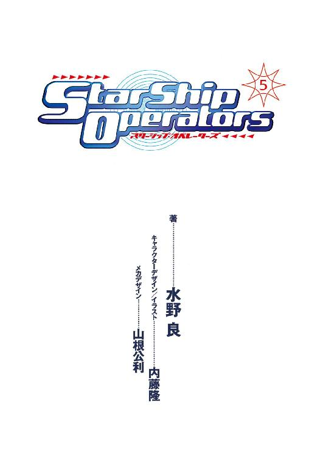

| スターシップ・オペレーターズ(5) (電撃文庫) | |
| 水野 良 & 山根 公利 | |
| (2013) | |


本書（電子版）に掲載されているコンテンツ（ソフトウェア／プログラム／データ／情報を含む）の著作権およびその他の権利は、すべて株式会社ＫＡＤＯＫＡＷＡおよび正当な権利を有する第三者に帰属しています。
法律の定めがある場合または権利者の明示的な承諾がある場合を除き、これらのコンテンツを複製・転載、改変・編集、翻案・翻訳、放送・出版、公衆送信（送信可能化を含む）・再配信、販売・頒布、貸与等に使用することはできません。
初出 スターシップ・オペレーターズオフィシャルサイト
URL:http://www.starshipoperators.com
電撃hp Vol.25,Vol.26,Vol.27,Vol.29
カバーデザイン◎荻窪裕司
編集◎フィールドワイ
キャラクターＣＧ◎内藤隆
メカＣＧ◎山根公利
オペレーション16 ウォー・ゲーム
１
二三〇〇年一二月〇一日 ヘンリエッタ星域インカ星系第八惑星衛星軌道上──
ヘンリエッタ星域惑星国家同盟宇宙軍所属、重装巡航艦コンキスタドールが、この星系にワープアウトしてきたのは半年ほども前になる。
シュウ星系での壮絶な戦闘のあと、いずこかへ姿を消した自由護衛艦アマテラスの行方を追いかけてのことである。アマテラスが寄港できる先は、もはや銀河中を探してもＡＧＩ──アリマ・ジェネラル・インダストリが所有するこの星系しかない。
アマテラスの監視を任務とするコンキスタドールとしては、アマテラスのロストが最終的に確認されるまで、この星系で待機する必要がある。
もっとも、それは名目上のことで、コンキスタドール艦長デュール・エルロイの本心は、〝王国〟の王都ともいうべき惑星国家スパルタで起こった大事件から身を遠ざけたかったのだ。
〝国王〟こと同盟宇宙軍最高会議議長オーギュスト・ペリエが執務中に脳梗塞で倒れ、一時は意識不明の重体にまで陥ったのである。
からくも一命は取り留めたものの、脳の損傷がひどく、歩行も会話もできないという状態が現在でも続いている。
当然のことながら、最高会議議長の職を務められるはずがない。しかし、二〇数年前にペリエが起こした軍事クーデターから拡大を続けてきた同盟において、これまで彼が絶対権力者であった。
しかも、アマテラスとの戦闘で、後継者候補ともいうべきふたりの宇宙戦闘艦艦長が殉職を遂げている。クーデターの決行時からペリエの片腕であったリカルド・ファレスと、将来を有望視されていた若きリー・ユン・スクのふたりだ。
残る後継者候補はファレスと並ぶ古参の艦長ルイス・ベルモント。そしてもうひとり、ペリエの長男ミシェル・ペリエ准将である。
だが、ベルモントはシュウ星系の宇宙海戦で大失態をしでかし、宇宙戦闘艦二隻を損失した責任は免れない。
そして長男のミシェルはリー艦長よりも更に若く、階級も准将にしかすぎない。しかも彼が議長職に就任すれば、同盟がペリエ一族の独裁体制であり、その権力が世襲で移譲されることを世界に示すことになる。同盟とは名ばかりで、ペリエ一族が治める王国に他ならないというヘンリエッタ星域自治連合の非難を、自ら肯定する結果となるのだ。
後継者選びが難航するのは必至の状況だった。
祖国を裏切り、同盟宇宙軍最高会議のメンバーとして招かれたエルロイとしては、その争いに巻きこまれる危険を冒すつもりはなかった。
それゆえ、インカ星系に自ら望んで駐留し、姿を見せないままの（しかし銀河ネットによる放送は続けられている）アマテラスの監視任務を行ってきたのである。
「アマテラスのワープアウトは、まだ確認できないか？」
苛立ったような副長の声が、観測員に飛ぶ。
「落ち着け。王国の公式の発表は、半年前から変わっていない。アマテラスはミスワープにより、ロストしたことになっている。ワープアウトが観測できないのが当然だ」
エルロイは艦長席に腰を下ろしたまま、熱いコーヒーが入ったボトルに口をつける。
その言葉に副長はうんざりしたような表情を見せた。
「そんな発表など、信じてなどいないでしょうに？」
「この艦の観測装置がアマテラスを捕らえるまでは、王国の公式発表に疑問を抱くわけにはゆかないだろう？ 銀河ネットが放送しているスターシップ・チャンネルは、今ではすべてデジタル合成によるフィクションなのだから」
「そのチャンネルによれば、アマテラスは数時間も前に、この星系にワープアウトしたことになっています。一〇日後には、ＡＧＩの宇宙港に到着予定であると宣言しているのですよ」
「だが、我がコンキスタドールはアマテラスがワープアウトした形跡は観測していない。ニュートリノ爆発も、重力波異常も検出されていないのだからな」
「タイムラグに決まってます。この星系の太陽光がここに届くにもおよそ３時間は必要なのですよ。星系の反対側にワープアウトしたのだとしたら、観測はさらに遅れます」
「だから、落ち着けと言っている。我々にできるのは、待つことだけだ。そして事実をスパルタの最高会議に報告する。判断は彼らが......いや、彼が下すのだからな」
エルロイはそう言って、自嘲の笑いを浮かべた。
「最高会議議長代理ペリエ・ジュニア殿がな......」
数カ月に及んだ権力闘争の結果、ミシェル・ペリエ准将が最高会議議長代理ときまったのである。
そこに落ち着くまでに、ふたりの艦長が謎の事故死を遂げ、もうひとりが反乱容疑で逮捕、十分な審理もないまま処刑されている。
そして廃艦と決まったリサ艦長ハルラール・ナジャは最高会議のメンバーから解任されたあと、スパルタ星系からの逃亡を謀り、チャーターした旅客船を撃沈され、宇宙の塵と化している。
提督クラスだけではなく、上級将校のおよそ一〇パーセントが、一連の事件への関与を疑われ処分を受けた。
まさに王国を激震させた大事件である。
スパルタ本国にいたら、エルロイも否応なしに巻きこまれていただろう。
彼は同盟宇宙軍が、スパルタ出身者だけで構成されているわけではないことの象徴だからだ。同盟に加入している惑星国家は今や一五。スパルタ以外の出身者の人口比率はスパルタ出身に対して一対二〇にまで拡大しつつある。軍人の比率は、そっくりそれが逆転するぐらいだが、決して無視できる数字ではない。
そしてスパルタ出身以外の軍人にとって、唯一の最高会議メンバーであり、抜群の戦績を残しているエルロイはリーダーと目されている。
だが、彼にとっては、その事実は迷惑でしかない。
それゆえ、最初から傍観者を決めこんでいた。あるいは、この権力闘争によって、軍を退役できればと淡い期待を寄せていたが、それはかないそうにない。
ペリエ・ジュニアは、一連の戦闘におけるエルロイの功績を認め、昇進を決定したぐらいだ。まだまだ利用価値はあると、思われているのだろう。
（噂はいろいろと聞いているが、直接、会ったことは数度しかないからな。それも国王陛下と一緒に、だ。権力闘争に勝利したぐらいだから、無能ではなかろうが、さてどのような男かな......）
ミシェル・ペリエは、最高会議議長代理に任じられると、すぐにふたつの手を打っている。ひとつは、参謀会議を設置し側近を集めたこと。そしてもうひとつは、軍警察の組織を強化したことだ。
そしてそれらのメンバーには、彼と同年代の若い将校たちが就任している。
同盟宇宙軍の内部にすら、彼らのことを〝親衛隊〟と揶揄する者もいるほどだ。ペリエ・ジュニアは自らが権力の座に着くときを考慮して、秘密裏に同志を集めていたのであろう。
最高会議のメンバーは戦闘艦艦長であるため、軍の組織全体に目を行き届かせるには限界がある。まさに、それが盲点となったのだ。
ここ半年、自由護衛艦アマテラスが星域内に姿を見せていないこともあり、戦闘は一段落している。だが、水面下では同盟も連合も活発に動いている。
今の静けさは嵐の予兆にしかすぎないと、エルロイは確信を抱いていた。そして穏やかだった海に、白波が立とうとしていることも......
そして彼の予測は数時間ののちに現実となった。
重装巡航艦コンキスタドールの観測装置が重力波を検出したのである。それに続いて、大量のニュートリノも検出された。
それが意味するところは、宇宙船がこの星域へとワープしてきたということである。
光学観測は不可能な遠方での出現であったが、その座標から宇宙船がワープアウトした時間はアマテラスが銀河ネットで放送した時間と克明に一致することが判明した。
エルロイは観測装置を何度も検証し、データの精度を高めてから、本国へ通信を送ることにした。
ただ一言、『アマテラス生存セリ』と──
２
「......アマテラス監視の任務にあたっていたコンキスタドールから、さきほど連絡が入った」
緊急招集した最高会議のメンバーを見渡して、ミシェル・ペリエ最高会議議長代理は静かに呼びかけた。
「アマテラスがインカ星系にワープアウトしたことが、ほぼ確実となったようだ。スターシップ・チャンネルの放送どおりに、だ」
「海賊が帰還してきたというのですか？」
ペリエの言葉に、最高会議のメンバーのひとりであり、同盟宇宙軍の報道官の任にあるハンス・ゲオルグ・ヘルマンが大仰に驚いてみせる。
そして高速攻撃艦マリアナの艦長ルイス・ベルモントが、苦虫を嚙みつぶしたような表情になる。
巨大な円卓が設置された最高会議室に姿を見せているメンバーはわずかに六人。残るメンバーは、量子共鳴通信で参加している。彼らの姿は、それぞれの指定席の後方のパネルに鮮明に映しだされていた。
彼らは艦長室や執務室で通信モニターと向かいあっている。会議の内容は極秘ゆえ、同席者は誰もいない。
「驚くには値しない。アマテラスは沈んだわけではなく、ただミスワープしただけなのだ。幸運にも、ワープアウトした場所が帰還可能であったということ。高機動突撃艦リサとは違ってな......」
ペリエはメンバーをぐるりと見渡したあと、ちらりと背後に視線を向ける。そこには主治医に付き添われて車椅子に乗る父オーギュストの姿がある。
彼は未だに同盟宇宙軍最高会議議長だ。
だが、脳の損傷が激しく、このまま一生、立ちあがることも会話することもできない。
無論そのことは極秘であり、公式には彼はリハビリ中であり、ゆっくりとではあるが、回復しつつあると発表している。
「それで、どうなさるのですか？」
ヘルマンが深刻な表情で訊ねた。
「アマテラスは海賊だ。この星域の安全を維持するためには、沈める以外にない。これは我我の威信などとは関係ない。我々の義務なのだ。そして海賊を支援する星間企業にも警告を与えねばなるまい......」
「海賊を支援する星間企業というと、まさか銀河ネットとＡＧＩですか？」
最近、就航されたばかりの双胴遊撃艦ミュライの艦長に就任し、最高会議のメンバーとなったヴァン・デ・ベルレが、驚きの声をあげた。
「そのとおり。企業が戦争に直接介入するなど、許されていいはずがない。国家こそが戦争の主体となるべき存在なのだよ」
ペリエは静かに答えると、会議室に姿を見せているなかから、四人の艦長の名を次々と挙げていった。
その四隻はスパルタ星系に駐留する艦隊のうち、旗艦ソロモンと補助艦艇を除いた全艦である。
他の戦闘艦は、同盟に所属する各惑星国家の防衛任務にある。
「貴官らはただちに、インカ星系へと向かってくれたまえ。現地で監視任務を遂行しているコンキスタドールと合流し、アマテラスを撃破するのだ」
「五隻もの艦隊で？」
出撃を命じられた艦長のひとり、マリアナ艦長ベルモントが首を傾げる。
「いつぞやのように逃亡しませんかな」
「それならそれでよい。アマテラスは、唯一の寄港先を失うことになるだけだからな。ＡＧＩを失えば、アマテラスは戦闘を継続できなくなる......」
「まさか、ＡＧＩに攻撃をしかけると？」
ペリエの言葉に、ベルモントは顔色を変えた。
「それも選択肢のひとつということだ」
はるかに年長の軍人であるベルモントに対し、ペリエ・ジュニアは遠慮することなく答える。
「インカ星系のＡＧＩヘンリエッタ支社では、連合所属の惑星国家の宇宙戦闘艦四隻が建造中であるとの事実も考慮せねばならない。それも、完成間近だとの情報もある」
ペリエはそう言ったあと、瞳をギラリとさせた。
「作戦は参謀たちがすでに立案に入っている。指令は追って通信するゆえ、貴官らは速やかにインカ星系へと出発してくれたまえ」
「了解しました」
四人の艦長は敬礼すると、足早に会議室から退出した。
「残る諸君は、現在遂行中の任務を継続してくれたまえ......」
「はっ」
残る艦長らも会議室を退席し、あるいは量子共鳴通信をオフにした。
通信モニターが暗転してからも、しばらくのあいだデュール・エルロイは画面を見つめていた。
彼も当然、今の会議に量子共鳴通信で参加していた。
これまでも最高会議には何度も参加している。ペリエ・ジュニアが実権を握ったあとも、五回の会議が招集されている。
しかし、今日の会議はこれまでとはまったく違うものだった。
最高会議はこれまで、名目的にも実質的にも同盟宇宙軍の意志決定機関であった。だが、今日の会議は......
（議論もなにもない。ただ、オレたちは命令を伝達されただけだ）
オーギュスト・ペリエ最高会議議長は間違いなく最高権力者であったが、決して独裁者ではなかった。
だが、ミシェル・ペリエはどうやら父を見習うつもりはないようだ。
（変わるな、王国は......）
しかし、それがどう変わるかは、エルロイにもまったく予測できなかった。
（さて、どう立ち回ればいいものか......）
エルロイは真っ暗なモニターに、いつまでも視線を注ぎ続けていた──
３
「〇三、〇二、〇一......アマテラス、接岸しました」
第三艦橋で副航宙士の任務につく摩耶アキホが真剣な表情で言ってから、ほっとしたように表情を崩した。
きりっとしていた目がとろんとなり、いつもの眠たそうな顔になる。
「さすがですね。なんの衝撃も感じませんでした」
浮遊物監視員の里見レンナが立ち上がって、航宙長の三上シントに握手を求める。
「ドックのショックアブソーバーが優秀だったからじゃないかな」
握手に応じながら、シントはとぼけるように答えた。
「三上航宙長には、物足らなかったぐらいではなくて？」
星間気象観測員の間宮リオが涼しい顔をして言う。
「スラスターがもう二、三個ぐらい壊れていたほうがやりがいがあったのではないかしら」
「勘弁してよ......」
シントは胃がキリキリと痛みだすのを感じたが、作り笑いだけはそのまま浮かべておく。
アマテラスの乗員は、シントの操艦に全幅の信頼をおいているのだ。ただひとり、シント自身を除いてだが......
「──半年ぶりのシャバだぜ！」
第二艦橋の近接防御管制員、七瀬ユキノの歓声がスピーカーから流れてきた。
「──まだ任務中だぞ！」
第一艦橋にいるアマテラス艦長、神崎キスカの神経質そうな声が続く。
「──だったら、さっさと非番にしてくれよ」
ユキノが通信用の小型カメラに顔を近づけて言った。
副映像のひとつに映ったその映像を、アキホがすかさず主映像に切り替えた。
メインモニターにユキノの顔がアップになる。鼻息が荒いせいか、鼻の穴がいっぱいに広がって、鼻腔の奥まで見えそうだった。
「鼻毛、伸びてますよぉ」
笑いを抑えながら、アキホが第二艦橋に通信を送る。
「──ど、どこをチェックしてんだよ！」
ユキノの抗議の声が響き、第三艦橋は笑いに包まれた。
自由護衛艦アマテラスは、ＡＧＩ（アリマ・ジェネラル・インダストリ）が所有する企業惑星インカの軌道ドックに、その姿を見せていた。
シュウ星系での激戦からおよそ半年が過ぎている。
短距離跳躍を繰り返し、至近戦闘をしかけてくるコードネーム・ドラゴンフライ（王国の発表により正式名称は『リサ』と判明している）から逃れるため、そして敵艦をミスワープさせるため、アマテラスは重力場の安定していない場所で、ワープを強行したのだ。
結果として、アマテラスはヘンリエッタ星域の外に跳ぶことになり、自力での帰還は不可能となった。
ＡＧＩの補給艦〝ツクヨミ〟に救出され、六カ月ぶりにようやく帰還してきたのである。
一方、王国の戦闘艦リサのほうは、狙いどおり回収不可能な場所にミスワープした。実質的には、撃沈したも同然である。
アマテラスのほうは、こうしてヘンリエッタ星域に帰還できたのだから、戦闘には勝利したと言っていい。たとえ、それが大変な幸運によるものであろうとも......
戦闘艦リサとの戦闘では、アマテラスにもかなりの被害がでていた。しばらくはＡＧＩの軌道ドックで、修理を受けることになる。本業である戦争のほうは、休業ということだ。
（それは大歓迎なんだけどね......）
遠心重力の効いたインカ宇宙港の通路を歩きながら、第一艦橋で艦長補佐をしている香月シノンはため息をついた。
戦闘こそなかったものの、シノンたち艦橋勤務の女子は副業のほうで大忙しだったのだ。
すなわち、タレント業である。
最初の三カ月はエネルギー不足のため、放送の内容は極端に制限された。その間、スターシップ・チャンネルはニュース・チャンネルのほうも、エンターテイメント・チャンネルのほうも、ＣＧで作成された番組を放送するしかなかったのである。
物珍しさだけで加入した視聴者の契約解除も相次いで、スターシップ・チャンネルは一時期ほどの勢いはなくなった。
プロデューサーのピーター・スパイクスは危機意識を感じていたようで、ツクヨミから補給を受け、エネルギー問題が解決されたとたん、映画やドラマをはじめとして、報道番組やバラエティ番組にまで、シノンたちをどんどん出演させた。
戦闘がない以上、ニュースのほうには〝目玉〟がない。そのためエンターテインメントのほうで視聴率を稼ごうというわけだ。
シノンたちは歌や踊り、芝居をやらされ、アニメのアフレコの仕事まで回ってきた。
サブチャンネルで配信されているスターシップ・マガジンのほうでは、マンガやノベルの連載まではじまり、それらも艦橋勤務でこそないが女子の乗員が担当させられている。おかげで、アマテラスの通信制御室には編集者から量子共鳴通信を使っての原稿の督促がかかってくるようになった。
惑星インカには銀河ネットのスタッフが大勢、押し寄せてきているとも聞いている。
「また妄想してる～」
隣を歩いている主任観測員の秋里ミユリが、こっそり声をかけてきた。
「これから、なにをされるのかなって考えるとね......」
シノンは我に返り、そしてため息をついた。
今、シノンと一緒にいるのは、ミユリと主任通信員の氷坂アレイ──第一艦橋勤務の同僚である。
アマテラスは修理用の真空ドックに入り、一部の補修要員を除いた乗員は、自由時間ということになった。上陸も許可され、宇宙港の地上施設のホテルに部屋まで用意してもらっている。
もっとも、シノンたちはゆっくり休暇を楽しめるわけではない。ホテルに着いたら、銀河ネットの番組制作スタッフとの打ち合わせが、さっそく待っているのだ。
信じられないことだが、シノンたち艦橋勤務の女子は、今や世界的なアイドルになりつつある。発売されたオリジナル曲やアルバムはヒットチャート入りしているし、関連商品も信じられないほどの売り上げを記録しているらしい。
艦橋勤務の女子九人で『オペレーターズ』というユニット名がつき、『ファーストブリッジ』『セカンドブリッジ』『サードブリッジ』というサブユニットでバラ売りされてもいる。
著名なプロデューサーがプロデュースを担当し、大手の芸能プロダクションとも契約しているらしい。そしてアマテラスでは補給長である荻野セイが、エージェントおよびマネージメントをしてくれている。
セイが開いてくれたシノンたちの銀行口座には、莫大な金額が入ってきているようだ。しかし、銀河ネットに対しては乗員ひとりあたり数億ドルもの借金があるわけで、嬉しくもなんともない。
だいたい、お金が目的で王国との戦争をはじめたわけではないのだ。
アマテラスに残った乗員は、侵略戦争を続ける王国とそれを容認する国際世論に対し、命を捨てる覚悟で抗議をしたかっただけなのである。
銀河ネットと契約したのは、そのための手段でしかなかった。それが、おかしなことになったものだと、シノンはつくづく思う。
もっとも彼女自身の目的は、今のところ達成されている。
アマテラスの仲間たちに、ひとりの戦死者もでてはいないということ──
その幸運がいつまでも続いてほしいと、シノンは心の底から思っている。
「企業が所有している惑星にしては、ずいぶん人が多い気がするんだけど......」
そのとき、ミユリの不思議そうな声が、シノンの耳に入った。
「前に来たときは、こんなじゃなかったのに......」
「そうだった？ でも、この惑星には、ＡＧＩの従業員やその家族が何十万人と暮らしているのだし......」
シノンは周囲を見回して、そう答えた。
宇宙港の地上施設周辺には、ドーム都市が建設され、学校や病院など生活するために必要な施設もある。
ＡＧＩの本社は地球にあるが、ヘンリエッタ星域で戦争がはじまってまもなく、この新興の無国籍企業はこの星系に支社を建設したのである。
戦争により、増大するであろう軍需に狙いを定めたのだ。
ヘンリエッタ星域で生産された安価な原材料を調達できるし、輸送にかかるコストも最小限で済む。
ＡＧＩの狙いは的中し、ヘンリエッタ星域自治連合に所属する国々は、次々とＡＧＩと契約をしていった。
だが、ＡＧＩが兵器を納入していた惑星国家は、王国によって次々と征服され、ＡＧＩは顧客と信用を同時に失いつつあったのである。
アマテラスが活躍していることによって、その流れは一気に変わったわけだから、ＡＧＩにとってこそ、シノンたちは救世主といえるかもしれない。
実際、ＡＧＩは盛大な歓迎式典を企画しているようだ。
「ミユリの言うとおりだな。確かに、人が多い。それもおそらくわたしたちと同業者......」
アレイがブルースでも口ずさんでいるような独特の声と口調でつぶやく。
「同業者？」
シノンは眉をひそめる。
「タレントじゃないほうの......ね」
アレイが苦笑を洩らす。
「軍人ってこと？」
シノンははっとなり、もう一度、周囲に視線を向けてみる。
「言われてみれば......」
眼光の鋭い人間がやけに目立つような気がする。歩みも早いし、背筋もしっかり伸びている。そもそも、ここは企業惑星だから、一般の旅行者が訪れることはない。
ここにいるのは、ＡＧＩの関係者か納入業者、そして顧客ということになる。軍需産業の会社だから、顧客が軍人であってもおかしくはない。
「王国の軍人......ってことはないよね」
シノンが不安そうにつぶやく。
「商社を通じて、少額の取り引きはあるそうだけどね。王国は確か地球の企業から、戦闘艦や軍事物資を購入しているはずだよ」
「それじゃあ、連合の軍人なんだ」
じゃ仲間だよね、とミユリが嬉しそうな声をあげた。
「向こうがそう思ってくれてるかどうかは、わからないけどね」
アレイが厳しい視線を、軍人と思しき通行人に向ける。
「そうみたいね......」
シノンもため息まじりにうなずいた。
彼らのほうも、自分たちにチラチラと視線を向けてきているのだが、決して好意的なものには見えない。
「それにしても、ここまで軍人が多いというのは......」
なにか特別なことでもあるのかもしれない、とアレイがつぶやいた。
それから三人は周囲の視線を気にして無言になる。そして、軌道エレベーターの乗り場へと到着した。
４
軌道エレベーターは宇宙港の軌道施設と地上施設をおよそ三時間で結んでいる。
エレベーターといっても、一度に五百人ほどが乗れる大量輸送機関だ。
垂直方向に移動するため、階層状に客室が作られている。各客室には六席あり、ドリンクや軽食のベンダーにトイレ、洗面所がついていた。
この軌道エレベーターもＡＧＩの所有なので、当然、利用は無料である。
シノンたちは改札口で自動発券機から整理券を受け取った。整理券には客室と座席番号が記されている。
連続して整理券を取ったので、客室も同じで、席も並びだ。
出発まではまだ三〇分ほどあったが、大規模な免税品売り場もレストラン街もない企業惑星の宇宙港なので、シノンたちはそのまま軌道エレベーターに乗り込むことにする。
そして、客室に設置されているベンダーからボトルに入ったドリンクを買う。
「連合の軍人があれほど多かった理由を考えていたんだけど......」
ドリンクを飲み、一息ついたところで、シノンが口を開いた。
「もしかして、侵攻用の戦闘艦が完成したんじゃないかな」
「あっ、そうか......」
ミユリがポンと手を叩く。
数年前に自治連合所属の惑星国家が会議を開き、国土を防衛するのではなく王国の領土に侵攻する目的で、経済的に余裕のあった五つの惑星国家が、それぞれ一隻ずつ戦闘艦を発注したのだ。
自由護衛艦アマテラスも、実はそのなかの一隻である。
惑星国家キビは、王国との対決姿勢をもっとも鮮明にしていただけに、他の四隻よりも建造を急いだのだ。
それが王国の侵攻を招く結果となり、さらにはシノンたち七三期生がアマテラスを買い取って、王国と戦争をするきっかけともなった。
アマテラスの完成からおよそ一年。他の四隻が完成していてもおかしくはない。
「王国は、わたしたちにかまけすぎたのかもしれないな......」
アレイが冷たく笑う。
たかが防衛大学の士官候補生が乗員となっているアマテラスに自軍の戦闘艦を次々と沈められ、王国はその威信を著しく傷つけられた。
そのため、王国はアマテラスの撃破を最優先に行動した。その結果、連合は当初の計画を易々と進めることができたわけである。
これまで防戦一方だった連合だが、いよいよ王国に征服された惑星国家へと攻めこむことが可能となったのだ。
しかし──
「戦略の幅が広がったのは確かだけど、連合は一枚岩じゃないものね」
シノンはため息をつく。
ヘンリエッタ星域自治連合は、もともと地球圏からの経済的独立を目的として結成されただけに、安全保障に対してはなんの取り決めもなされていなかった。
そのため、王国が成立した当初、まだまだ軍事的に脆弱だったときに正しく対処できなかった。そして気がついたときには、手遅れとなっていたのである。
「自由に動かせる四隻もの戦闘艦を手にして、連合はいったいなにをするつもりかしらね......」
シノンはひとりごとのようにつぶやくと、親指を唇に当てる。
そのときだった。
エレベーターの扉が開いて、三人の乗客が乗り込んできた。
男がふたりに、女がひとりである。
三人とも若く、シノンたちとほぼ同じ年代だと思われた。そして軍人特有の雰囲気を漂わせていた。
シノンたちは緊張し、沈黙する。
相手のほうも、それは同様だったようだ。それまで談笑していたのだが、シノンたちを見て表情が強張る。
「こんにちは」
ミユリが笑顔を浮かべて、英語で挨拶を送った。
これから、三時間ものあいだ同じ客室で過ごすのだ。どうせなら、和やかに過ごしたいと思ったのだろう。
しかし──
「スター気取りというわけ？ あいにく、わたしはあなたたちのファンじゃないの」
三人のうちの女性が、甲高い声で答えてきた。
美しい金髪をぱさりと払い、青い瞳をまっすぐにシノンたちに向けてくる。その表情は、はっきりとした敵意に満ちていた。
「ずいぶんな挨拶だな......」
アレイが独特の口調で言って、ゆっくりと席を立った。
「アレイさん！」
ミユリがあわてて彼女を座席に戻そうとする。
「あたしは、ぜんぜん気にしてないから」
だが、アレイはまったく鎮まる様子はなかった。殺気だった表情で、女性を睨みつける。
「あんたらの国では、こういう礼儀作法を教えているのかい？」
「お願い、アレイさん！」
ミユリは必死になって、アレイを背後から抱きとめる。
シノンのほうは、不機嫌な表情のまま黙りこんでいた。
公共の場所で、事を荒立てたくはないと思うが、ケンカを売ってきたのは向こうである。このまま引き下がっては、自由護衛艦アマテラスの名誉に傷がつくというものだ。
「国を捨てたあなたがたに言われたくはないわ！ あなたがたには、テロリストの容疑がかけられているのよ。犯罪者に礼儀をつくす必要がどこにあるの」
女性は、アレイの突き刺すような視線にも、まったく動じた様子はなかった。
そしてあとのふたりも彼女を止めようとする素振りさえ見せない。
（この人たち正気なのかしら？）
シノンは呆気にとられていた。
（まさか本当に王国の軍人なんじゃないでしょうね）
連合の軍人が、ここまで敵視してくるとは思いたくなかった。
「言いたいことがあるなら、はっきりと言えばどうですか？ まず、所属と階級を名乗ってください。わたしたちのことは、どうやらよくご存知のようですから、先に名乗る必要はありませんよね」
シノンは座席に腰かけたまま、三人を見回す。
「わたしたちは、惑星国家ガリアの出身よ。階級は少尉」
娘は澄ました顔で答え、アニエス・ルブランと名乗った。
ふたりの男も、ダニエル・デュラン、ヴィクトール・ルパージュとそれぞれ名乗る。階級は同じく少尉だった。
「ガリア！」
シノンは思わず叫んで、ふたりの同僚と顔を見合わせた。
ガリアはヨーロッパ連合フランスを母国とする惑星国家で、ヘンリエッタ星域ではもっとも早い時期に植民地化が進められた。
星域の中心ともいうべき宇宙港があり、経済も発展している。
ガリアの国民は、自分たちの惑星をヘンリエッタ星域の首都であると公言してはばからない。
事実、ＧＮＰの比率では、他の惑星国家を圧倒している。
（なるほど、プライドが高いわけだ）
シノンは心のなかでつぶやいた。
そして自分たちに対して批判的なのも、ある程度、納得できた。
ガリアの母国であるフランスは王国擁護の立場を表明しているし、輸送業や貿易業で栄えるガリアとしては、ヘンリエッタ星域内で経済が自立してしまっては経済的な優位を失いかねない。だが、あからさまに自治連合と衝突しては、ヘンリエッタ星域の盟主としての地位を失うことになる。そして王国の台頭にも当然、危機意識を覚えていよう。
いろいろと複雑な立場なのだ。
「わたしの友達を侮辱したのは、あなたがたのほうなのですから、謝っていただけませんか？」
シノンはガリアの母国語であるフランス語で、三人に声をかけた。
ヘンリエッタ星域内でフランス語を母国語としている惑星国家はふたつしかない。そのため、国際共通語としてのフランス語の地位は、この星域ではさほど高くない。
シノンとミユリは、英語、フランス語、北京語の三つの国際共通語すべてで会話できるが、アレイはフランス語を話せない。
会話が突然、フランス語になったので、彼女は当惑の表情になっている。
彼女が不勉強というわけではなく、国際共通語はふたつ話せれば、十分なのである。それで全世界の人々と意志疎通できるからだ。
シノンとミユリがフランス語を話せるのも、学校で学んだのではなく、シノンの父親から教わってのことだ。
「あら、キビにもフランス語が話せる人間がいるのね」
アニエスという名の金髪娘が、皮肉っぽく言う。
「アマテラスで報道官をしている間宮リオは、あなたよりきれいなフランス語を話すことができるわ」
シノンもしっかりと皮肉で返した。
アニエスのフランス語に、ガリア特有の訛を聞き取ったからである。それに比べて、間宮リオのフランス語は外交官用のトレーニングを受けているから、まさに完璧だ。
「偽物の金髪と偽物の碧眼をしている娘ね」
鼻で笑うように、アニエスが言う。
「生まれつきではなくても、彼女にはとても似合っているし、魅力的へとだと思うわ。髪や目なんて、自分が似合うと思う色にすればいいのよ。あなたも髪を黒く染めてみれば、どうかしら？ 今より、魅力的かもしれないわよ」
シノンも口調こそ穏やかだったが、その言葉は辛辣きわまりなかった。
側で聞いているミユリが、冷や汗をかくほどだった。
そのとき、まず日本語で、それから三つの国際共通語でアナウンスが流れ、軌道エレベーターが降下を開始することを告げた。
「──ご乗車の皆様は座席に座り、安全バーをしっかりとおかけください」
それでシノンとアニエスの壮絶な舌戦はしばらく休戦になり、六人は向かいあわせに着席した。
無重力状態だったのが、天井に引っ張りあげられるような感覚がくる。
しかし、それもしばらくのことで、すぐに無重力状態に戻った。
軌道エレベーターが自由落下に入ったのだ。
中間点を過ぎると減速に移るので、そのときには床方向に重力を感じるようになる。
「それで、わたしたちのどこが不満だというの？」
安全バーの着用のサインが消えるのを待ちかまえていたように、シノンがアニエスに声をかけた。
「よしなよ、シノン......」
ミユリが小声で耳打ちする。
「侮辱してきたのは向こうなんだもの。問題をうやむやにするつもりはないわ。場合によっては、ガリア政府に対して抗議をする。わたしたちは、惑星国家キビの亡命政府の正規の軍人なのよ」
それがただの建前であることは、シノンも承知しているが、だからこそ譲れない一線である。アニエスが指摘したとおり、その主張を曲げたとたん、シノンたちはただのテロリストとなってしまうからだ。
「どこが不満ですって？ 不満だらけだわ......」
アニエスが吐き捨てるように言う。
「百歩譲って、あなたがたが亡命政府の軍隊であることを認めたとしても、民主的に認められた軍隊ではないことは間違いないわ。その意味では、王国と少しも変わらない」
「なるほどね......」
シノンは素直にうなずく。
そのことは、十分に自覚している。シノン自身は自分が正義だとは思っていない。
だが、王国にも正義はない。
正義という言葉は、戦争をはじめるきっかけにこそなるが、それを終結させるための力とはなりえない。
次に正義という言葉が意味を持つのは、戦争の勝敗がついたあとだ。
すなわち勝者こそが正義である、と......
「あなたたちの暴挙のおかげで、正規の軍人が、無知な国民から腰抜け呼ばわりされていることを、あなたは知っている？」
「そしてそれを扇動しているのが、わたしたちだと言いたいのね」
「そのとおりよ。否定できる？」
「否定はしないわ。わたしたちに、その意志はないけど、結果的にそうなっていることは認めるしかないもの......」
惑星国家シュウでの事件がそれを証明している。
シュウ政府は現実路線を歩もうとしていたのだが、銀河ネットでスターシップ・チャンネルがはじまり、国民の世論が王国打倒で沸騰した。
そして野党はその世論を利用し、政権奪取を目論んだのである。現職の大統領はそれを回避すべく、アマテラスの入港を許可し、国民を懐柔しようと試みた。
だが、王国はシュウ政府を見限ったのである。それどころか、アマテラスを沈めるために利用しようとさえした。
シュウ宇宙軍の戦闘艦シェンロンの艦長が犠牲になってくれたおかげで、アマテラスはからくも窮地を脱したが、今、思うと生き残れたのが不思議なぐらいだ。
アマテラスの生命線は、銀河ネットを通じて、国際世論の支持を受けていることである。それを失えば、政治的にも経済的にもアマテラスは苦境に立たされる。
「どう、わたしの言っていることが間違っていて？」
勝ち誇ったように、アニエスが高笑いを響かせる。
「間違ってはいないわ。でも、わたしたちが世論に支持されて行動しているのだとしたら、それは民主的ってことにならないかしら。まさか、民衆を扇動していることが間違っているとか、銀河ネットを利用しているのが反則だとか言わないわよね。あなたの国の政府は国民を扇動したりしていない？ あなたの国の議会には銀河ネットでの知名度を利用したタレント議員はいない？」
「そ、それは......」
アニエスは表情を一変させた。
シノンは彼女に勝ちを譲りながら、自己矛盾に導いたのである。ちょっとした討論のテクニックだ。
「国民には、あなたがたを腰抜け呼ばわりする権利はあるのよ。それがあなたのいう民主主義なんだから。それが嫌なら、銀河ネットなり、ローカルのメディアを使って、その世論を変えてみせてよ。わたしたちは王国と戦う道を選んだけど、あなたがたは違う道を見つければいいのだわ」
シノンは優しい表情をあえて浮かべ、議論をまとめた。
相手が不利なところで議論を終えるのも、討論のテクニックのひとつなのだ。
だいたい、シノンの目的は、親友のミユリを侮辱したこのフランス女を悔しがらせることにある。
「も、もちろんよ！ タレントもどきのあなたたちなんかに負けるものですか！」
アニエスがヒステリックに叫ぶ。
その表情を見て、シノンは目的を達成したことを確信した。
「タレント活動していることと、軍人としての資質は無関係だと思うわ。王国はわたしたちのことを小娘呼ばわりだし、艦長や副艦長たちは若造だけど、経験豊富な王国の軍人に勝利してきたもの」
シノンは余裕の表情を浮かべてみせる。
「わ、わたしがあなたより、優秀だということ、教えてあげるわ」
「機会があれば、ね。そのためにも、アマテラスが王国に沈められないよう、あなたがたも祈ってくださらない」
シノンはそう言うと、営業用の笑顔を見せた。
「シノンって、そういうとこ容赦ないよね」
ミユリがため息まじりに日本語でささやきかけてくる。
「相手が吠えているということは、シノンが言い負かしたんだな」
アレイも満足そうに微笑んだ。
口論がフランス語で進んだおかげで、彼女の出番はなくなった。おそらくは、アニエスたち三人にとって幸いなことに......
５
シノンに言い負かされたアニエスは、その後もずっと不機嫌に黙りこんでいたが、ヴィクトールとダニエルのふたりは、シノンたちのことを見直したのか、ドリンクや軽食を勧めてくれたり、機密の漏洩にならない程度の情報を教えてくれたりと、それなりの好意を見せてくれた。
三人の関係はよく分からないが、アニエスがリーダーシップをとっているようだ。より正確にいえば、彼女のわがままにふたりがつきあっているという印象である。
やがて、軌道エレベーターは地上に到着し、シノンたちは惑星国家ガリアの若き士官たちから解放された。
宇宙港からは迎えのリムジンに乗って、宿舎となるホテルへと向かう。
定住を目的としていない企業惑星なので、惑星の地球化は行われておらず、都市は完全閉鎖型のドーム都市だった。
宇宙港の周辺には工場や倉庫、オフィスビルなどがあり、ホテルもその一画にあった。
ＡＧＩの直営ではなく、一流といっていいホテルがふたつ並んで建っていた。
シノンたちが宿泊するのは、そのひとつ〝トレンティン〟である。
フロントには、銀河ネットのスタッフが大挙して待ちかまえていて、シノンたちはほとんど拉致同然に、会議室へと案内された。
そして今後のスケジュールについてレクチャーを受ける。
ある程度、覚悟はしていたが、想像をはるかに超えた過密スケジュールだった。
（タレントもどきどころじゃないわ）
惑星国家ガリアの若き女性士官の言葉を思い出して、シノンは心のなかで悲鳴をあげた。タレントのほうが本業としか思えないほどである。いろいろと言いたいことはあるが、抗議をしても無駄だということは、もはや理解している。
戦争をしろ、できないのなら歌え、踊れという無精髭の声が聞こえてくるようだった。
（契約が終わるまでのあいだ、こうして扱き使われるのだろうな）
スケジュール確認が終わると、シノンたちはようやく一息つくことができた。
ホテルにチェックインし、荷物を部屋に運び入れてもらう。
それから、シャワーを浴び、ラフな服装に着替えると、隣の部屋のミユリを訪ねた。
ミユリはちょうどシャワーからあがったところで、まだバスローブ姿だった。
「ミユリ～」
シノンはそう言って襲いかかるように抱きつくと、一緒にベッドに倒れこむ。
ミユリの柔らかな胸が、頰に当たる。そのままぐりぐりと甘えたいぐらいだが、いかに親友とはいえ、さすがにそこまではできない。
「あ～も～、なにやってんだろって感じ」
シノンは仰向けになると、思わず大声をあげた。
「ホントよね。〝南十字〟に触る時間もないわ」
彼女は大口径の望遠鏡にできるだけ早く、そして長時間、触るために防衛大学に入隊し、航宙自衛隊の観測員になることを選んだのだ。そして、アマテラスを自由護衛艦として購入したときも、迷うことなく艦に残った。
彼女としては、おそらく一分、一秒でも長く、望遠鏡に触っていたいのだろう。
だが、彼女は愚痴のひとつも言わず、王国との戦争やタレントしての活動もこなしている。
「ミユリって、ホント偉いよね」
シノンは自分を恥じたくなった。
それに比べると、自分はなんと愚痴の多いことか。おまけに、今みたいにミユリに甘えてばかりいる。
「あたしは普通だよ。シノンが子供すぎるの」
「かもしれない。さっきだって、あそこまでムキになることなかったよね」
そう言ってから、シノンはう～っと意味もなく呻き声をあげた。
「でも、それがシノンなのよ。防衛大学で、普通の学生のふりをしていたときには、あたしでさえなんか近寄りにくかったもの。シノンは思いどおりにやっているのがいちばんいいの。フォローは、誰かに押しつけてさ」
「うっ！ 素直に喜べない」
シノンは枕に顔を埋める。
「喜ばないでもいいから、今のままでいてね」
ミユリはシノンの頭を優しく撫でる。
性格こそ子供っぽいが、シノンは本物の天才だ。必要に迫られたときに発揮する潜在力は底がしれない。
（ホント、シノンはお父さん似だね）
彼女の父親もやはり本物の天才である。だが、その才能は見事なまでに抑制されていて、そこはシノンと違っている。
シノンの父はそのありあまる才能を自分のためにも使うつもりはなく、ただ他人に教えるためだけにあると考えているような人だった。
あの人がそう考えるようになった理由はミユリにも分からない。
だが、ミユリが天文学を目指すようになったのは、あの人の意志──あるいは夢かもしれない──を受け継いだからだと思う。
（あの人は夢をいっぱいもっている人だから、それをひとつだけしか叶えられないというのが悲しかったのかな。だから、あたしたちに教えることで、全部の夢を叶えようとしているのかもしれない......）
ふと気がつくと、隣でシノンが、まるで百面相でもしているように、ころころと表情を変えていた。
また頭のなかで、いろいろと妄想しているのだろう。
「シノン......」
彼女を現実に引き戻そうと、ミユリが声をかけたときだった。
部屋の電話が鳴って、ミユリはあわてて身体を起こし、受話器を取った。
「──神崎だけど、そこに香月はいないかな？」
電話から流れるキスカの声は、いつにもまして不機嫌な様子だった。
「ええ、いますけど......」
ミユリはシノンを振り返り、キスカから電話だと告げた。
「わたしに？」
シノンがこれ以上はないというほどに顔をしかめる。だが、断るわけにもゆかず、ミユリから受話器を受け取った。
「はい、替わりました」
シノンはデジタル音声と評された営業用の声に切り替えて、電話に出た。
「──キミは、どこかで惑星国家ガリア宇宙軍の士官と出会ったのか？」
キスカの声が受話器から響き、シノンはどきりとなる。
あのアニエスという女が、アマテラスに抗議でもしてきたのかと思ったのだ。
「軌道エレベーターで同じ客室でしたが、それがなにか？」
キスカはくわしい事情を知らないようなので、シノンはしらばくれることにする。
「──いや、ガリア宇宙軍からキミに協力依頼がきているんだ。詳細は知らされていないが、相手は連合最大の惑星国家だ。これから、共同戦線を張ることになるかもしれないし、むげに断るわけにもゆかないしな。申しわけないが、今からＡＧＩの研究所に向かってくれないか。迎えのリムジンは三〇分後に到着するそうだから急いでな」
キスカは用件を一気に言うと、シノンの返答を待たずに、電話を切った。
シノンはうんざりとした表情で、ミユリを振り返った。
「軌道エレベーターとか言ってたけど、もしかして、あの女がらみ？」
ミユリに問いかけられ、シノンは首をこくりとさせた。
「アマテラスのほうに連絡がきたみたい。挑戦状だか、果たし状だかは分からないけどね」
シノンはため息をつきながら、何度も首を横に振る。
「チャンピオンは大変だね」
ミユリはまるで他人事のように言った。
「わたしより優れていることを教えてやるとか言ってたけど、負け惜しみじゃなかったんだ......」
シノンは信じられない気持ちだった。
だが、学校の裏庭ではないにせよ、呼び出しを受けているのは間違いない。
（勘弁してよ......）
シノンはベッドにうつぶせに倒れた。
だが、逃げるわけにはいかないようだ。
（いったい、なにをさせられるの？）
自問してみるが、シノンには想像もつかなかった。
だが、どう考えても、まともなこととは思えない。
（勘弁してよ～）
毛布に顔を埋めたまま、シノンは心のなかで何度も繰り返した。
６
黒塗りのリムジンがホテル・トレンティンの玄関前に到着したのは神崎キスカから電話があって三五分後であった。
香月シノンはひかえめに化粧をして、儀礼用の軍服に身を包んでいた。
形よく膨らんだ左の胸には、銀河ネットがオンライン・ショップのオリジナルグッズ用に製作したアマテラスの記章があり、その下に資格章や従軍記章などが並んである。
もっとも、シノンは宇宙船乗りに必要な資格は、ほとんど取得していないので、ミユリに比べても少ない。
地上勤務に──いや、星間企業に就職したときに役立つ資格を優先的に選択していたからだ。
（だから、わたしより軍人として優れていても、自慢にはならないんだけどなぁ......）
シノンは心のなかで愚痴る。
「大丈夫？」
隣に付き添ってくれている秋里ミユリが心配そうに声をかける。彼女もまた儀礼用の軍服に着替えている。同行しようという意思表示だ。
彼女の気持ちを、シノンは素直に嬉しいと思う。
相手の意図が予測できないので、ひとりではさすがに不安だった。監禁され、尋問を受ける可能性すらある。
キスカのことだから、あまり深く考えずに、惑星国家ガリア宇宙軍からの申し入れを受諾したのだろう。
（間宮さんは、このこと知っているのかしら？）
シノンはふと疑問に思った。
キスカはおそらくなんの根拠もなく、〝連合〟を味方だと決めつけているはずだ。
しかし連合の軍人のアマテラスに対する感情は、軌道エレベーターでの一件で痛烈に思い知らされている。
キスカの判断は甘いというしかないが、いったん引き受けたものを断るだけの勇気はシノンにもない。
王国を打倒するには、連合各国との協力は不可欠なのだ。だが、それは望み薄だと思いはじめている。
「さきほどはどうも......」
リムジンから降り立ったのは、私服を着た若い男だった。
「あなたは？」
シノンは驚いて、ミユリと顔を見合わせる。
軌道エレベーターでアニエスという名のガリア女性と口論になったとき、彼女と一緒にいたふたりの若者のうちのひとりだった。
名前は確か、ヴィクトール・ルパージュと言った。
一九〇センチ近い長身で、やや褐色がかった金髪を短く刈っている。
「お疲れのところ、急なお呼び出しをして申しわけありません......」
苦笑まじりに、ヴィクトールは握手を求めてくる。
「いいえ、連合の盟主ともいうべき惑星国家ガリアに協力できるなら、こちらこそ光栄というものですわ」
営業用の笑顔を浮かべて握手をしながら、シノンはフランス語でリオの口調を真似てみる。今は、外交を意識せずにはいられない状況だ。迂闊な言動をするわけにはゆかない。
ミユリも続いて握手をしながら、こちらは愛想のいい笑顔をかえす。
「あたしも、香月艦長補に同行してよろしいですね」
ミユリは笑顔のままで言った。
「問題ないでしょう」
一瞬、間があったが、ヴィクトールは笑顔で答えた。
「危ないかも......よ？」
シノンはキビの母国語である日本語で念を押してみる。
「ひとりのほうが、それこそ危ないよ。銀河ネットにも連絡を入れといたの。クルーがあとをつけてくれるって。あたしたちになにかあったら、銀河ネットは喜んで映像を放送すると思う......」
「ありがとう、ミユリ......」
シノンは目をうるませながら、ミユリの手を両手で握った。
「なにが待っているか分からないけど、ふたりで乗り切ろ」
シノンの言葉に、ミユリが笑顔でうなずく。
そして、ふたりはリムジンの後部座席に乗り込んだ。
ヴィクトールが向かいの席に長身を下ろし、リムジンは滑るように走りはじめた。
７
リムジンが到着したのは、ＡＧＩの研究所だった。
「なんで、ＡＧＩの研究所なのかしら？ ただ話をするだけなら、支社の会議室なりホテルを指定してもよさそうだけど......」
シノンは日本語で、疑問を口にする。
「ＡＧＩはあたしたちの味方だから、安全と思っていいんじゃない」
ミユリが答えた。
「今のところは、だけどね......」
シノンは苦笑する。
自由護衛艦アマテラスの味方は、皆無といっていいが、銀河ネットとＡＧＩだけは例外である。
銀河ネットで資金を稼ぎ、ＡＧＩは物資を提供してくれている。
このふたつの星間企業のバックアップがなかったら、アマテラスを運用することはできないのだ。
シノンとミユリは、ヴィクトールにうながされてリムジンから降りた。
そして、研究所の玄関で、ＡＧＩの社員が数人、シノンたちを出迎えてくれているのに気づいた。
彼らが拍手を送ってくれる。
「ようそこ、ＡＧＩへ」
代表らしいひとりが進みでて、日本語の挨拶とともにシノンたちに握手を求めた。
五〇代ぐらいの技術者ふうの男性である。
「見事な戦いぶりでした、あの艦の性能をあれほど引き出していただいて......」
「わたしたちこそお礼を言わないと、新鋭艦なのにトラブルが少ないので、本当に助かっています」
シノンが笑顔で返す。
今の言葉は本心なので、営業用のそれではない。
「星域外まで救助にも来ていただきましたし......」
ミユリがぺこりと頭を下げた。
「出張サービスをしたまでです。出張料もいただいてますからね」
ＡＧＩの社員が答える。
そして思いだしたように名刺を差しだした。
アマテラス支援事業部事業部長という肩書きと瀬尾カズトという名前が、プリントされている。
ＡＧＩがアマテラスの支援を効率よく行うために組織した新事業部である。
「すいません、わたしたちには名刺がありませんので......」
「お気になさらずに。連絡先は分かっていますから」
瀬尾事業部長は笑顔で答えた。
「ところで、これからなにがあるんですか？」
「実はわたしどもも、さきほど連絡を受けたばかりなのです。アマテラスの乗組員が、研究所のほうに来るというので、あわててやってきたのですよ。歓迎式典は明日ですし、わたしども事業部とのミーティングは、明後日を予定しておりましたから」
「そうなんですか......」
つまり、ガリア宇宙軍からの呼び出しは、アマテラス支援事業部を通さずに行われたということだ。
ガリア宇宙軍との取り引きを担当する営業が、恫喝されたというところだろう。
「ガリア宇宙軍のルブラン提督が応接室でお待ちです。わたしも同席を希望したのですが、軍事機密だからと押し切られまして......」
「ルブラン提督？」
シノンは驚きの声をあげると、ミユリと顔を見合わせた。
「あのアニエスとかいう娘も、たしか......」
「ルブランだったわ」
ミユリの言葉に、ミユリは顔をしかめた。
そういうことか、と思う。あの娘はガリア宇宙軍の高官の親族なのだ。
（どこが、民主主義の軍隊よ）
シノンはやや冷めた目で、ヴィクトールを振り返った。
彼ともうひとりの若い士官は、わがまま娘の世話係といったところなのだろう。
「提督がお待ちかねです。挨拶はそのぐらいにしていただけませんか？」
ヴィクトールが苦笑を浮かべつつも、強い口調で声をかけてきた。
「分かりました......」
シノンはうなずいた。
そして瀬尾事業部長にもう一度、会釈をしてから、ミユリと並んで研究所へと入っていった。
ふたりはヴィクトールに案内されて、応接室へと移動した。
応接室のドアのところには、黒っぽい服装に身を包んだ長身の男がふたり、直立不動の姿勢で立っている。
ガリア宇宙軍のＭＰか情報部員といったところだろう。
「は、迫力あるよね」
ミユリがつぶやきながら、怖々とシノンに身を寄せてくる。
映画やドラマではよく見るシーンだが、現実のものになると、さすがに恐怖心を覚える。
「ここで吞まれたら負けよ」
自分自身にも言い聞かせるつもりで、シノンはミユリに声をかけた。
「どうぞ、お入りください」
ヴィクトールがやや緊張した表情で、ドアを開ける。
シノンとミユリはうなずきあうと、応接室へと入った。
部屋は広く、豪華なテーブルとソファーが中央に置かれていた。そこに五〇歳ぐらいの男性が、どっかりと腰を下ろしている。その隣には、シノンとミユリが見たことのある顔──アニエス・ルブランの姿があった。
軌道エレベーターで会ってから、二時間と経っていない。予想もしなかったし、嬉しくもない再会である。ただ、その行動力には感心するしかない。
シノンとミユリは直立し、宇宙軍式の敬礼をした。
アマテラスには階級はないが、役職からシノンは三佐、ミユリは一尉ぐらいに相当する。
実際、惑星国家シュウの宇宙軍は、そのように対応してくれた。
「かけたまえ」
尊大な口調で、ルブラン提督は声をかけてきた。
「失礼いたします」
シノンとミユリは声をそろえて返答し、ふたりのルブランの向かいの席に腰を下ろす。
当然のように、アニエス・ルブランと目が合った。
無視するわけにもゆかず、シノンは彼女に会釈を送る。
と、彼女は勝ち誇ったような笑顔を返してきた。
（わたしはまだ負けてないんだから）
シノンはむっとなったが、なんとか自制する。
そしてガリア宇宙軍の提督を見つめ、次の言葉を待った。協力を依頼してきたのは、彼らのほうでシノンたちではないのだ。
「娘のアニエスから、キミたちの話を聞いた......」
ルブラン提督は言うと、隣にいるアニエスに一瞬、視線を向けた。
（やっぱり、娘なのね）
シノンは心のなかで、ため息をついた。
（自分のほうからケンカを売っておいて、負けたら、強い強いパパに言いつけたってわけだ）
最低だわ、とシノンは思った。
だが、このアニエスとかいう娘にとっては、それが当然なのだろう。
生まれも育ちも頭もよく、周囲の人間からちやほやされることに慣れきっていたら、こんな無礼でわがままな娘に育つということだ。
（リオを見習ってほしいわ）
間宮リオの父親は貿易業を営む実業家であり、世界的にも有名な政治家の家系だ。
そして彼女自身、天才といっていいが、アニエスほど自分勝手ではない。取り巻きは大勢いたし、お嬢様然と振る舞うことも多いが、彼女にとってそれは目的を果たすための手段でしかない。
（リオがここにいてくれたらなあ）
シノンは心の底から思った。
彼女ならきっとガリア政府からの〝協力要請〟も、無難に切り抜けられるだろう。
「......我々、連合はキミたちの独断専行に対し、大変な迷惑を被っている。キミたちがいかに詭弁を弄しようと、これは事実だ」
ルブラン提督が厳しい口調で言った。
「............」
シノンは無言だった。
〝彼ら〟が迷惑しているというのは、間違いない事実だろう。だが、その責任をアマテラスが負う必要はない。
「そもそも、キビの間宮前総理が、我が連合の要請を無視し、同盟に対し強硬姿勢を貫いたことが、すべての元凶なのだ。それゆえ、同盟の侵攻を許す結果となった......」
「それが原因のひとつであることは理解できます。ですが、いかなる理由があれ、〝王国〟の侵略戦争を容認することはできません」
シノンはさすがに我慢しきれず、提督の言葉を遮った。
「最後まで、話を聞けないのか？」
ルブラン提督が一喝した。
「わたしたちは、ガリア宇宙軍から協力を要請されたので、ここに来たのです。非難をなさりたいなら、正規のルートでお願いします。スターシップ・ニュースチャンネルのほうに特別出演されてもかまいません。あのチャンネルは、アマテラスに対する批判も放送するのが方針ですから......」
シノンは臆することなく言った。
「無礼ではなくて！」
アニエスが顔色を変えて、立ち上がる。
だが、父親である提督は、そんな彼女の腕を叩き、落ち着くように促す。
「ですが、お父様──いえ、提督......」
アニエスは不満そうな表情で、父親を見つめる。
「英雄気取りの若者には、礼儀という言葉も通じないのだろう」
嘲笑を洩らしながら、ルブラン提督は娘に答えた。
（どちらが礼儀知らずなのよ！）
シノンはヒステリックに騒ぎたい衝動にかられたが、理性を総動員させて今度もなんとか我慢する。
娘も娘なら、父親も父親というところだ。おそらく、このルブラン家は惑星国家ガリアの名門の家柄なのだろう。一八世紀のブルボン王朝の貴族のごときプライドの持ち主だった。
（民主主義に階級がないというのは、ファンタジーでしかないということね......）
民主主義は一見して、誰にでもチャンスがあると考えられている。それは間違いではないが、チャンスを摑める者はごく少数だ。その一方で、特権を享受している人々がいる。そして、その特権が世襲で受け継がれてゆくことも少なくない。
シノンの家系は由緒正しい庶民である。
父親は確かに天才だがただの保父でしかないし、祖父は中高学校の教師、親戚を見回しても医者や弁護士、企業のトップなどいない。母親のほうの親戚も同じようなものだ。
まるで突然変異のように父のような人間が出たのだ。そしてその才能のいくらかをシノンは受け継いでいる。
「おまえたちが、これまで同盟に勝利してきたのは、新鋭艦の性能とただの幸運にすぎない。このまま同盟との戦いを続けても、すぐに終わりは来る......」
ルブランは相変わらず尊大な態度を見せていた。
この親子の骨格は、傲慢という名の形状記憶合金でできているのだわ、とシノンは思う。
（それにしても、いったいなにを意図しているのかしら？）
ルブラン提督はただ恫喝しているだけのように聞こえるが、きっとなにか狙いがあるに違いないのだ。
（娘が侮辱を受けた報復なのかしら。それとも、わたしたちを怖じ気づかせて、有利な条件でも引きだしたいのかしら？）
キスカからくわしい話は聞いていないが、もしかすると、自分は今、彼の代理という立場でここにいるのかもしれない。
うっかり口約束などしようものなら、大変なことになりそうだ、とシノンは自分を戒めた。
「おまえたちが生き延びる方法は、ただひとつ。新鋭艦を連合に委ね、謹慎することだ。そうすれば、国連安保理も、おまえたちのテロ行為を不問にしよう。連合は正規の国家組織だからな」
「そんな条件、受け入れられません！」
ミユリが思わず、声をあげた。
「なぜ受け入れられない？」
「銀河ネットとの契約があります。王国との戦いが終結するか、五年間が経過するかしないと、膨大な違約金が発生するんです」
「つまり、同盟と戦争をしている主体は、おまえたちではなく銀河ネットということだな？」
ルブラン提督が椅子から立ちあがって、大きく拳を振るう。
ミユリの顔から、一瞬にして血の気が失せた。
（そういうことね......）
シノンは唇を嚙んだ。
ルブラン提督の狙いは、今の一言を引きだすことだったのだろう。
「違います！」
シノンはルブラン提督を見あげながら、きっぱりと答えた。
「同盟と戦争している主体は、あくまでわたしたちです。銀河ネットとの契約は、戦争を継続するための資金獲得という二次的なものでしかありません。我々、キビ亡命政府にはそれ以外、手段がありませんでしたから......」
「つまり銀河ネットは戦争に関して、いかなる口出しもしていないということだな？」
「営業的な立場から要求してくることはあります。しかし強制ではありません。あくまで〝意向〟です」
「なるほど、従うかどうかは、おまえたちの自由というわけだ」
ルブラン提督はわざとらしくうなずいてみせる。
そしてふたたび腰を下ろす。
「そのとおりです」
シノンは営業用の笑顔で答えた。
「白々しい」
もうひとりのルブランが吐き捨てる。
「事実ですから......」
シノンは意にも介さない。
国際政治の世界では、建前のほうがむしろ大事なのだ。いわゆる大義名分である。
「ならば、我が連合としてはおまえたちに指揮下に入ることを要求してもかまわないわけだな」
ガリア宇宙軍の提督は穏和な表情でそう言ったが、これは最大の譲歩だぞ、と付け加えることも忘れなかった。
「連合の指揮下に、ですか？」
シノンは当惑の表情になる。
「惑星国家キビの亡命政府ならば、当然、我が連合の一員と思うが？」
「ですが、先日、補給をお願いしたとき、連合に属するどの惑星国家も応えてくれなかったではありませんか？」
「今とは、状況が違う。あのとき、おまえたちを助けては、同盟に攻める口実を与えるだけだった。事実、おまえたちを助けたために、惑星国家シュウは征服されてしまったではないか？」
「今は違うと、仰るのですね？」
シノンはそう切り返した。
「決まっておる。侵攻用の戦闘艦が完成したのだからな」
ルブラン提督は、得意そうな表情を見せた。
（やはり、そうなんだ......）
シノンは心のなかでうなずく。
宇宙港で予測したとおりである。どおりで、軍人の姿が大勢見られたわけだ。
「同盟が連合所属の惑星国家に侵攻するようなことがあっても、侵攻用の戦闘艦が救援にかけつける。もはや〝征服〟がおこることはないのだよ」
ルブラン提督が自信の笑みを浮かべる。
「すなわち、ヘンリエッタ星域における戦闘は、これで終焉なのだよ。諸君ら若者が、命を危険にさらす必要はない」
「終焉......ですか？」
ルブランの言葉に、シノンは一瞬、呆然となってから、あわてて訊ね返した。
「王国は......いえ、同盟はどうなるのですか？」
「軍事的均衡が成立した以上、現状を容認するしかあるまい」
「ですが、同盟所属の惑星国家の国民の多くは、同盟の支配に抵抗しています。その解放こそが、侵攻用戦闘艦建造の目的ではありませんか？」
「おまえたちは、戦争の継続を望んでいるのか？」
「もちろん、望んでなどいません。しかし、王国の征服を認めるつもりもありません。わたしたちは、母国キビをはじめ、王国からの解放を求めるすべての惑星国家の国民のために戦ってきたのです」
「それが独断専行だというのだ！」
ルブラン提督は、ふたたび表情を一変させて、大声で怒鳴った。
「戦争が終結したあと、国連安保理の席上で、同盟との交渉を行えばいい。戦争ではなく、政治で解決をはかる」
「もともと、同盟が戦争を始めたのは、わたしたち連合のなかで急進的な惑星国家が、地球からの独立を目指したからではなくて？ 我々は母なる地球と人類とを守るために、宇宙に進出してきたのよ。その理念を忘れた連合にも、非があったということよ」
もうひとりのルブランが、冷ややかに言った。
「アニエス......」
提督が、すぐに娘を窘める。
娘のルブランは、びくりとなり沈黙する。
（あなたも、父親には頭が上がらないのね）
シノンは心のなかで、彼女に呼びかけた。
だが、それも当然だろう。ルブラン提督のほうは、ただ尊大なだけではなく、相当なやり手だ。自分たちから言葉巧みに弱点を引きだし、有利な立場で要求をつきつけてくる。相手を恫喝し萎縮させることも、彼の交渉術なのだ。そして突然、穏和に提案をしてくる。威圧されていたら、救いの手が差し伸べられたかのように、その提案に飛びつくことだろう。
（でも、父親に比べたら、あなたはとても素直で良い子だわ）
アニエスの今の言葉で、ルブラン提督の、そして惑星国家ガリアの真意を理解していた。
ヘンリエッタ星域自治連合の目的は、地球からの経済的自立であった。しかし、それは地球圏との貿易によって繁栄するガリアの経済基盤を揺るがすことになる。
一方、王国がヘンリエッタ星域を軍事的に統合し、支配的な勢力になるのも、ガリアとしては許すわけにはゆかない。
言うならば、連合も王国も、惑星国家ガリアにとっては不要な存在なのだ。
だから両勢力の均衡を保ち、安全保障を国連に委ねることで、ヘンリエッタ星域の経済的な自立も、軍事的な統合も阻止しようというのである。
（だからこそ、わたしたちを味方につけたいわけね......）
連合所属の惑星国家の国民から圧倒的な支持を受けているアマテラスが味方になれば、惑星国家ガリアの国策は正当化される。
そして軍事的にも、ガリアは三隻もの戦闘艦を自由に運用できるようになる。
ルブランは「我が連合」と盛んに口にしていたが、実のところ「我が国家」でしかなかったわけだ。
単独かつ秘密裏に、しかも政治の素人である自分たちを艦長代理という立場で会談を要求したのは、そのためだ。
際どくはあったが、なんとか致命的な言質を与えずに済んだと思う。
シノンは自分のほうから話す必要はないと思い、ルブラン提督の次の言葉を待った。ミユリももはや一言も喋るまいと、唇をかたく引き結んでいる。
ふたりがさほど動揺していないのに気づいたのか、提督が不快そうな表情を見せた。
「わたしは先刻、最大限の譲歩だと言ったはずだが......」
提督は怒りのこもった声で話しかけてきた。
「仰いました」
シノンは、うなずく。
「もしも、我が連合の一員となることを拒否するなら、我が連合もおまえたちを海賊と認定するしかないのだぞ」
「それは、わたしたちと戦うということでしょうか？」
シノンは穏やかに訊ねた。
「それぐらいの判断もつかんのか！」
ルブラン提督は大声で怒鳴ると、ソファーをひっくり返さんばかりの勢いで立ち上がった。
「わたしたちが判断することではありませんから。それは連合所属の惑星国家政府が決めることです。民主主義の軍隊は、シビリアンコントロールのもとに行動するのが原則。わたしたちには、各国の発表に注目するしかありません」
「ならば、注目しているがいい。後悔することになろうとも、な」
提督は吐き捨てるように言うと、そのまま大股で応接室をあとにした。
だが、娘が続かなかった。そのまま椅子に腰かけている。
「せっかく、お父様が慈悲をかけてくれたというのにね」
嘲りの表情で、アニエス・ルブランはシノンに声をかけてきた。
「あなたがたは、これでわたしたち連合も敵に回したのよ」
「そうかしら？」
シノンは余裕の表情で答えた。
連合に所属するすべての惑星国家が、アマテラスを海賊として認定するとは思えない。国民の世論もあるし、王国を利するだけだからだ。
惑星国家シュウが征服され、王国の目的がヘンリエッタ星域全体の武力統一であることは、ほぼ疑いないものになっている。
連合は王国との全面対決の方向に動きつつあると、アマテラスでは期待していた。
そういう動きがあるからこそ、ルブラン提督はアマテラスに接触してきたのかもしれない。
「あたしたち、もう帰ってもいいんですよね？」
シノンが自分の考えに浸っているのに気づいたのか、ミユリがシノンの二の腕をつつきながら、アニエスに言った。
「ガリア宇宙軍からの協力要請はうかがいました。正式な回答は、後ほど連絡いたしますから......」
シノンも妄想から現実にもどると、席を立って、アニエス・ルブランに宇宙軍式の敬礼をおくった。
「まだ帰っていただいては困るわ」
アニエスは顎をつんとそらし、シノンに向かって挑戦的な視線を向けてきた。
「まだなにか？」
シノンはげっそりとしながら、アニエスに訊ねかえした。
「ここに来ていただいたのは、わたしがあなたより優秀であることを証明するためだもの」
アニエスは、自信の笑みを浮かべる。
そして、
「勝負してもらうわ」
と、シノンに言った。
「勝負？」
シノンとミユリは声をそろえ、怪訝そうに顔を見合わせる。
「勝負って、いったいなんの？」
シノンは恐る恐る訊ねる。
「決まってるわ」
アニエスは指を突きつける。
「あなたがたのアマテラスと、我が国の最新鋭艦ジャンヌ・ダルクとで勝負をつけるのよ」
８
正面のモニターには、〝敵艦〟である惑星国家ガリアの最新鋭艦ジャンヌ・ダルクの姿が浮かんでいる。
もちろん本物ではなく、電子空間のなかに浮かんでいるバーチャル映像だ。
「模擬戦闘とは考えたよね」
宇宙戦闘艦の艦橋を模した狭い部屋のなかで、ミユリが感心したように言った。
アマテラスと敵艦との距離は二〇光秒。相対速度は時速一〇万キロで、正面から接近しあっているという設定となっている。
「自国の最新鋭艦の性能に自信があるのでしょうけど......」
シノンは呆れたような表情で言った。
「普通、こんなやり方で勝負をつけようとはしないわよ」
アニエス・ルブランは、父親の権威をフル稼働させて、ここＡＧＩの研究所にある模擬戦闘装置に極秘事項であるアマテラスとジャンヌ・ダルクの（カタログ）データをダウンロードさせたのだ。
シノンたちは無論、この勝負を断ろうとした。だが、アニエスは一歩も退かなかった。ありとあらゆる侮辱の言葉を並べたて、挑発してきたのである。
それを我慢できるほど、シノンは大人ではない。
怒りに燃えて、アニエスとの勝負に応じることにした。
「で、この勝負どうするの？」
「もちろん、勝つわ」
ミユリの問いにシノンは笑顔で返した。
「完膚無きまでに叩きのめしてやる。二度と、わたしに勝負を挑もうなんて思わせないぐらいにね」
「すっごい自信。さすがアマテラスの〝提督〟ね」
ミユリが茶化す。
「そっちは、あまり関係ないかな」
シノンは悪戯っぽく笑って、そう答える。
「だって、勝つんでしょ？ 模擬戦闘に？」
ミユリがきょとんとした顔になった。
「つまりね......」
シノンはミユリの耳元に口を寄せて、今回の〝作戦〟を説明してゆく。
「なるほどね～」
作戦を聞き終えて、ミユリが感心半分、呆れ半分というような表情を浮かべた。
「試合はともかく、勝負に勝つというわけだ......」
「遺恨を残して再戦なんて御免だもの」
ミユリの言葉に、シノンはにっこりとする。
「わたしたちの実力を、あの生意気なフランス女に見せつけてやらないと」
「そうよね」
ミユリも笑顔でうなずく。
「それじゃあ、始めますか」
シノンは大きくひとつ伸びをしてから、準備ができたことを、もうひとつの模擬艦橋にいるアニエスに連絡する。
彼女のサポートをするのは、ヴィクトール・ルパージュと、軌道エレベーターでも一緒だったもうひとりダニエル・デュランのふたり。
わがまま娘につきあうのは大変だろうが、ガリア宇宙軍提督の覚えがめでたくなるのなら、損ではあるまい。
「──覚悟はよくて」
アニエスからすでに勝利を確信したようなメッセージが送られてきた。
「──それでは、戦闘開始よ」
「了解したわ」
シノンはアニエスに返す。
そして通信をオフにしてから、ミユリを振り返る。
「それで、どうします？ 艦長」
「最大加速で接近。距離三〇〇万キロで、〝魚雷〟全弾発射。距離四〇万キロから〝スプラッター〟軌道式電磁加速砲で攻撃開始。撃ち尽くしたあと、〝リボルバー〟五連装レーザーキャノンと換装。距離三〇万キロで〝主砲〟四六〇〇ミリプラズマキャノンで攻撃開始。一〇万キロでリボルバー、攻撃開始」
「全部、自動照準でいいよね」
「このアマテラスには、タカイもサンリも乗ってないもの。余計なことはしないで、わたしたちは内職に集中よ」
「了解～」
ミユリはうなずくと、偽の電子の賢者に作戦を指示し、観測装置をフル稼働させた。
そしてふたりはモニターを凝視しはじめた。
映像が次々と切り替わり、様々な数値が流れてゆく。
ふたりはぶつぶつとつぶやきながら、モニターから片時も目を離すことはなかった。
９
模擬戦は、あっさりと終わった。
敵艦は四〇〇〇口径のプラズマキャノンを距離三万五〇〇〇キロから発射してきたのだ。プラズマ球の発射速度は光速の四〇パーセント。
（バーチャル）アマテラスは回避運動を行っていたのだが、三弾目が艦首に命中し、主砲使用不能。光学観測主器使用不能という致命的な損傷を受けた。
アニエスはわざわざ、距離一五万キロまで接近したあと、レーザーキャノンを連射。バーチャル・アマテラスを宇宙の溶鉱炉に変えたのである。
「沈んじゃったね」
ミユリが苦笑を洩らす。
「沈着冷静で優秀な艦長が乗っていないんだもの。しかたないわ」
シノンはヘッドセットを外し、さっさと立ち上がる。
「さ、ユニフォームの交換とゆきましょ」
シノンの言葉に、ミユリはうんとうなずいて、席を立つ。
模擬艦橋から出ると、すぐに聞こえてきたのは、アニエスの甲高い高笑いだった。
そして軽やかな足音が近づいてくる。
「どう、ジャンヌ・ダルクの性能は？ そして、わたしの指揮能力は？」
勝ち誇った声で、アニエスは声をかけてくる。
「素晴らしいし、見事だわ」
シノンは笑顔で答えた。
プラズマキャノンもレーザーキャノンも、とにかく遠距離指向だ。
最新の技術を結集したのだろう。もっとも、カタログデータどおりの性能を実戦で発揮するかどうかは疑問だが......
「負け惜しみがお上手ね」
アニエスはふたたび高笑いを響かせる。彼女の後ろにいるふたりの若い士官は、さすがにうんざりとした顔をしていた。
「残念だけど、わたしたちは負けていないわ。あなたのゲームは、模擬戦で勝つことだったかもしれないけど、わたしたちのゲームはまったく別だったから......」
シノンはそう言うと、ミユリとうなずきあって、すぐ近くにあったホワイトボードに歩みよる。
ミユリは笑顔を浮かべながら、ホワイトボードにガリア宇宙軍の最新鋭戦闘艦ジャンヌ・ダルクのイラストを描いてゆく。
シノンは空いたスペースに次から次に数値を書きだしていった。
「な、なにをしているの？」
アニエスが焦ったような声で訊ねてくる。
「見ていて分からないかしら？」
シノンは振り返りもせず答える。
「それは......」
アニエスが言葉を詰まらせる。
「そ、あなたがたの最新鋭艦のスペックよ。もしかしたら、軍事機密かもしれないけど、覚えてしまったものはしかたないわよね」
「たった一回、模擬戦をしただけなのに、覚えられるわけがない......」
しかし、アニエスの顔からは、血の気が完全に失せていた。
「それで十分なのよ。わたしたちふたりには」
シノンはそう言って、ミユリと微笑みあう。
ミユリの頭のなかには、さきほどの模擬戦の映像データが、残らず入っている。そしてシノンは重要な数値を完全に記憶していた。
アマテラスにかえって本物の電子の賢者を使って分析すれば、最新鋭艦のデータ（あくまでカタログデータだが）が、ほぼ完全に解析できるだろう。
「それを、どうするつもりなの？」
ヒステリックな声で、アニエスは訊ねてくる。
「どうもしないわ。ただ、覚えておくだけよ」
シノンは澄ました顔で答え、ごきげんよう、と優雅に挨拶を送った。
このデータが銀河ネットに流れでもしたら、惑星国家ガリアの国会は紛糾することだろう。一度、戦闘すれば判明する程度の情報だが、就役前にそのデータが公になったとしたら、重大な機密漏洩にあたる。
責任追及がなされるのは間違いない。
「ま、待って！」
アニエスが必死の形相で呼びかけてきた。
「だから、どうもしないって」
ミユリが優しく微笑みかける。
実際、どうするつもりもない。
しかし、アニエスがそう思うかどうかは、シノンたちの知るところではない。
「待って！」
アニエスはなおも叫んでいたが、シノンはもう待つ気はなかった。
気分もすっきりしたし、今夜はゆっくり眠れそうだ。
「ね、今日、ミユリの部屋に泊まりにいっていい？」
「うん」
シノンの言葉に、ミユリは元気にうなずいた。
オペレーション17 ウェルカム・パーティ
１
二三〇〇年一二月一一日 ＡＧＩヘンリエッタ支社多目的ホール──
自由護衛艦アマテラスの艦長補佐である香月シノンは化粧台に向かって、無言で座っている。
メイクが終わってからも一〇分以上、彼女はそうしていた。
自分の顔を見ているわけではない。
それぐらいは、幼なじみである秋里ミユリには分かっている。
（また、自分の世界に入りこんでる......）
ミユリは心のなかでため息をついた。
最近のシノンは、考え事をはじめると、周りのことをまったく気にしなくなる。
それだけ、自分の考えに集中しているからだが、時と場合をわきまえてほしいと思う。
「そろそろ、出番だよ」
ミユリはため息混じりに声をかけた。
その声に、シノンの肩がぴくりと動いた。
「わたしたちって、歓迎されるほうだよね......」
シノンはミユリを振り返ると、不機嫌に言った。
あと一〇分もすると、ＡＧＩがアマテラスのクルーを歓迎するレセプションがはじまるのだ。
「なのに、なんで、わたしたちがステージで歌ったり踊ったりしないといけないわけ？」
「また、はじまった......」
ミユリは腰に両手をあてて、シノンを睨みつける。
「引き受けてから愚痴るの、ホント、シノンの悪い癖だよ。文句があるなら、セイさんに言ってよね」
ミユリの剣幕に、シノンはわずかにたじろいだ。
アマテラス側で歓迎レセプションの連絡を受けていたのは、補給長の荻野セイひとりである。そして彼女は事前の了解もなしに、シノンたちのミニコンサートを承諾したのだ。
そのため、シノンたち三人は、式典用の礼装ではなく、いつもの軍服姿である。ここ半年は王国との戦闘もなかったので、ほとんどステージ衣装のようなものだ。
「ＡＧＩにはサービスしておいて損はない......」
氷坂アレイが独特の声と口調でつぶやいた。
「それは分かっているんだけど......」
シノンは両手を足のあいだに挟みこむと、がっくりとうなだれる。
彼女ら三人は、ＡＧＩの多目的ホールの小会議室のひとつを専用の控え室として与えられていた。
さきほどまでは銀河ネットのスタッフが大勢いたのだが、シノンたちの支度を終えるとすぐ、ミーティングのため別室へと移動していた。
彼らはピーター・スパイクスがスターシップ・チャンネルの専属として雇ったプロのＴＶクルーである。
あの無精髭はいよいよシノンたちを本格的に芸能活動させるつもりのようだ。
「銀河ネットでタレントやって、おまけにＡＧＩの接待まで。それも王国との戦争を続けるためよ。自分で決めたことだと分かっていても、ふと我に返るとね......」
恥ずかしいやら情けないやらで、意味もなく大声をあげたくなる。
「そこで我に返るからいけないのよ。あたしなんか、完全に思考停止させてるもの」
ミユリがたしなめるように言う。
「どうせやるしかないんだから、あきらめるしかないさ」
アレイが笑顔で言って、シノンの背中をぽんと叩く。
「歌のひとつで魚雷の一発でもおまけしてもらえたら安いものさ。わたしたちの借金は、身体を売ったって返せるものじゃないんだから」
「か、身体を、売る......」
アレイの言葉に、シノンの全身の血液が沸騰する。
なにしろ一〇〇億円もの借金である。たしかに身体を求められようが、臓器をバラ売りされようが、文句を言える立場ではない。
「でも、身体を売るぐらいなら、わたし、王国の首都に特攻をかける」
シノンは泣きそうな声で言った。
「それはいい考えだ。そのときには、わたしも付き合うから」
アレイは真顔でうなずいた。
自分のほうから言いだしたことだが、その言葉にシノンはぎくりとなり、真意を確かめるようにディープパープルのカラーレンズを入れたアレイの瞳を覗きこんだ。
しかし、彼女の気持ちは、シノンにはまったく分からない。
分かっているのは、王国との戦いをはじめようとしたとき、彼女はまるで死を望んでいるように見えたことだけ。
（もしかしたら、アレイさんはまだ......）
命を捨てる気でいるのかもしれない、との不安が脳裏をかすめる。
だが、それはシノンにとって、敗北を意味するのだ。彼女の勝利条件は、アマテラスのクルーの誰も死なせないことなのだから......
「そろそろ時間です！」
そのとき、扉を叩く音とともに、通路から声がかけられた。
「さあ、お仕事、お仕事」
ミユリがシノンを急かすようにパンパンと手を鳴らした。
一度、仕事に入ったら、シノンが営業モードに変わることを彼女は知っている。感情を表に出さず、何事もそつなくこなすことを。
シノンは最後にもう一度だけため息をつくと、鏡に向かって営業用の笑顔を作った。
その笑顔は、彼女にとって自分の素顔を見せないための仮面なのだ。
２
歓迎レセプションはＡＧＩヘンリエッタ支社長による歓迎の挨拶から始まり、アマテラス艦長である神崎キスカの返礼、アマテラス支援事業部事業部長の瀬尾カズトの乾杯発声と、きわめて日本式に進行した。
そして歓談となるのが通例だが、ＡＧＩの若手社員たちからのたっての希望ということで、〝オペレーターズ〟のミニコンサートとなったわけだ。
今回は第一艦橋の三人だけでなく、艦橋勤務の女子九人が全員、ステージにあがった。
照明や音響も、銀河ネットが用意したプロのスタッフによる本格的なものである。
エグゼクティブ・プロデューサーのピーター・スパイクスは、おそらくスターシップ・エンターテイメント・チャンネルでのオンエアも考えているのだろう。
シノンたちの本職は軍人なのだから、オペレーターズのタレント活動は当然、制限されている。ヘンリエッタ星域の惑星国家を巡って、ライブ・コンサートのキャンペーンを行うわけにはいかないからだ。
スターシップ・チャンネルの熱心なファンがそれを望んでも、各惑星国家の政府は断固として拒否するだろう。
半年前、惑星国家シュウが〝王国〟──ヘンリエッタ星域惑星国家同盟の侵攻を受けたのは、アマテラスに補給を行ったためである。そして征服され、今では惑星国家シュウは同盟加入国となっている。
そういうわけで観客を前にコンサートをする機会は、これからも、おそらくないはずだ。
にもかかわらず、シノンたちは王国との戦闘がなかったこの半年間に、タレント活動に必要なレッスンをみっちりと受けている。
今回のミニ・コンサートはある意味、その成果の発表会でもあった。
そしてレッスンの成果のほどは、シノン自身が驚くほどだった。唄えば声はいくらでも伸びるし、楽器も自信を持って演奏できる。第三艦橋の三人──摩耶アキホ、里見レンナ、間宮リオほどではないにしても、ダンスもスムーズに身体が動いた。
惑星国家シュウで行ったファーストコンサートが恥ずかしく思えるほどである。
ステージの前に集まったＡＧＩの若手社員たちも本気で熱狂してくれた。
そして三〇分あまりのステージは終わった──
ステージから降りたシノンたちは大急ぎでシャワーを浴び、礼服に着替え、髪を整え、メイクをやりなおして、レセプション会場にもどった。
レセプションがはじまってから、すでに一時間以上が経過している。
アルコールもだいぶ入ったようで、会場の雰囲気はずいぶんとラフになっていた。
オペレーターズの九人は艦橋ごとのメンバーに分けられ、最前列のテーブルへと案内される。温かいままの料理とロゼのシャンパンが、すぐに運ばれてきた。
「料理、食べられないかと思っちゃった」
ミユリが目を輝かせる。
「おいしそう。でも、カロリー高そう」
シノンが複雑な顔をする。
「食べたらいいのさ」
「アレイさんは太らない体質だから。わたしなんか、エクササイズが大変」
シノンはため息をつく。
生まれてからずっと極貧の生活だったので、粗食に耐えられる体質になっているのかもしれない。食べたものが、すぐに身につくのだ。
おかげで、毎日のエクササイズが大変である。
「三〇分のコンサートで五〇〇キロカロリー消費したとして、朝食はホテルのバイキング。どれも、おいしそうだったから、けっこう食べたしな......」
シノンは頭のなかで、素早くカロリー計算をした。そして、このあと、ホテルのフィットネスルームに行くという覚悟を決める。
「食べる！」
シノンは気合いを入れて、ローストビーフを口にする。
その瞬間、
「お疲れさまです」
と日本語で声がかけられ、シノンはあわてて口のなかのものを飲みこんだ。
振り返ると、スーツ姿の男性がいた。
「加瀬さん......でしたよね？」
見覚えのある顔だった。
アマテラスの新しい営業担当になったＡＧＩの社員、加瀬タイシである。
熱意もあり、すぐに行動してくれると、アマテラスの補給長であるセイは、彼のことを高く評価していた。
ヘンリエッタ星域の外へとミスワープしたアマテラスを救うため、補給艦ツクヨミを派遣するにあたっても、彼はいろいろと尽力してくれている。
ある意味、命の恩人ともいうべき人物だ。
シノンは加瀬と握手をかわし、その礼を言う。
「お疲れのところ、無理を言って申しわけありませんでした。でも、素晴らしいステージでしたよ。ＡＧＩの同僚たちも、喜んでいました」
「ありがとうございます」
シノンは営業用の笑顔になり、ふたたび礼を言う。
「たぶん、同僚たちが押し寄せてくると思いますが、失礼な奴がいたら、かまいせんからぶん殴ってやってください」
そう言って、加瀬は笑い声をあげる。
「痛いと思いますよ。わたしたちも、いちおう軍人ですから」
「そういえば、航宙自衛隊でも格闘技の訓練は受けるそうですね」
「三〇万キロ向こうの敵艦に拳が届かないのが、残念なぐらいです......」
加瀬の言葉に、シノンは営業用の笑顔を浮かべたまま答える。冗談っぽく言うのも、相手を不愉快にさせないためである。
見知らぬ人ばかりがいるこの手のパーティがシノンはもっとも苦手だった。
早く中締めになってほしいと思う。
「あまり緊張しないで、もっと気軽に楽しんでくださいよ」
加瀬は真顔になると、そう言い残して、シノンたちのいるテーブルから去った。
それを待ちかまえていたかのように、一〇人ほどの若い男が殺到してきて、シノンたち三人の周りに人垣をつくった。
（う、うわぁ！）
シノンは心のなかで悲鳴をあげた。
（どうやったら気軽に楽しめるというのよ）
男たちは、シノンたちに次々と握手を求めてきた。
シノンは営業用の笑顔を浮かべて、それに応じる。
「お会いできて光栄です」
「六カ月間、待ち通しかったです」
「ＴＶで見るより、ずっときれいでビックリしました」
「ＣＧで加工してるんじゃないかって、同僚たちと噂してたんですけど......」
ＡＧＩの社員は口々に言う。
日本語もあるし、英語や北京語もある。
彼らは本当に、感激してくれているようだった。
シノンは自分の容姿にはあまり関心がないが、褒められて悪い気はしない。
「みなさんこそ、星間企業のエリートさんでしょう？」
「防衛大学の宇宙兵科に入るより難しくはありませんよ。僕は偏差値が足りなくて、国立工科大に志望落としましたから」
キビ出身と思しき社員が、苦笑を洩らす。
「それじゃあ、技術者ですね。どういう研究をなさっているんですか？」
「専門はプラズマの制御です。なんとかして、アマテラスの主砲の射程距離を延ばせないかと研究しているのですが......」
「それはぜひお願いします。敵の射程圏外から攻撃できるのが、なんと言っても理想ですから」
シノンは目を輝かせた。
「プラズマの温度を低く抑え、中性子数の多い元素を媒質にすると、プラズマスフィアの崩壊時間が延びるのは分かっているんですが、射出速度や命中時の破壊力との兼ね合いもありますし......」
「破壊力は口径の大きさでカバーできるんじゃないですか？ 射出速度は犠牲にしてほしくはありませんが......」
それまでシノンの隣でにこにこしていたミユリが、真顔になって会話に入ってくる。
「射出速度は命中率にも影響するものね......」
シノンもうなずく。
「おいおい、オレは文系なんだ。専門的な話は勘弁してくれ」
「自社の商品なんだから、それぐらい覚えておけよ。どうやって営業しているんだ」
「営業なんて気合いさ。プラズマキャノンだろうが、ただの煙突だろうが売ってみせる」
「煙突は勘弁してください。運用するのは、わたしたち軍人なんですから......」
シノンは冗談を言って、その場をまとめた。
うっかり接待しているのを忘れるところだった。
（やっぱり、わたしって軍人だわ）
明日にはアマテラスを強化するためのＡＧＩとのミーティングがある。
シノンはいくつか新兵器の提案をしていて、ＡＧＩは研究、試作を行ってくれているのだ。
アマテラスは今や、世界でもっとも豊富な実戦経験を有する戦闘艦である。その実戦データは、各国の宇宙軍が血眼になって求めてくる。アマテラスはスターシップ・ショップチャンネルを通じて、それらを通販しているのだ。
「おい、そろそろ替われ！」
人垣の外から誰かの声がして、それまでシノンたちと会話していた男たちは名残惜しそうに立ち去ってゆく。
そして別の男たちがシノンたちを取り囲むのだった。
シノンはふたたび営業用の笑顔を浮かべて、彼らと握手をする。
ふと気がつくと、一〇〇人近い男たちが、シノンたちの様子を遠巻きに見ていた。
（これって、いつまで続くんだろ）
シノンは心のなかだけで、深くため息をついた。
３
「補修作業の予算が、確定いたしました......」
声とともに、アマテラスの通信制御室に入室してきたのは、アマテラス補給長荻野セイであった。
彼女は、携帯式の液晶ボードを小脇に抱えている。
室内にいるのは、スターシップ・チャンネルのプロデューサー、ピーター・スパイクスとアマテラスの通信員久遠イズミのふたりだけ。
ニュース・サブチャンネルのメインキャスターであるディータ・ミルコフは、スタジオのほうで収録の打ち合わせを行っており、エンタテイメント・チャンネルのシナリオライター、トニー・ガリアーノはお気に入りの場所である食堂で、シナリオの執筆をしているはずだ。
銀河ネットのスタッフは無論、彼ら三人だけではない。量子共鳴通信でつながれた銀河ネットの本局やヘンリエッタ支局に大勢、働いている。
「ご苦労さん......」
スパイクスは鷹揚にうなずくと、セイの手から液晶ボードを受け取り、データを閲覧してゆく。
いつにもまして無精髭が伸びている。
「恐ろしい金額だな......」
データをひととおりチェックしたあと、スパイクスは不機嫌に答えた。請求金額が一〇億ドルに限りなく近い数字だったからである。
「激しい戦闘が続きましたから......」
セイは無表情に答えた。
「とくに、ドラゴンフライとの戦闘では、多くの観測装置が被害を受けています」
通常の戦闘だと被害は艦首の追加装甲スカラベに集中するから、その交換だけで事足りる。だが、ドラゴンフライは、アマテラスに対し、あらゆる方向からパルスレーザーによる攻撃を加えてきた。おかげで、本来ならば攻撃されるはずのない場所にも被害が出たのだ。
「チャンネルの加入者数は、ピークの五割近くにまで減っているんだ。戦うたびに、これだけの補修費用を請求されるようなら、このチャンネルは廃止ということになるぞ」
「その分、番組の提供やＣＭ、オンラインショップの売り上げなどが好調と聞いていますが......」
「それはオレたちの営業努力じゃねぇか！」
スパイクスは表情を変えて、声を荒げる。
「素材は、私たちが提供していると自負しています」
セイは動じることなく言い返す。
どんなに怒鳴られようと、皮肉を言われようと、表情ひとつ変えない。それが、スパイクスに対するときの彼女のスタイルだった。
「その素材を、商品にするのも楽じゃねぇんだよ！」
「申しわけありませんが、その苦労はわたしには理解しかねます」
セイは静かに答えた。
怒鳴りたい気持ちは、彼女も同じである。だが、スパイクスはこれから銀河ネットにこの予算を通さねばならないのだから、セイのほうが我慢するしかないのだ。
セイが怒鳴ったり皮肉を言う相手は別にいる。予算のことなど意にも介さない〝提督〟こと香月シノンだ。もっとも、彼女はセイが怒ると素直に反省するので、あまりいじめがいがないのだが......
「まあいい。今回は特別だろうから......」
スパイクスはため息まじりにうなずく。
「私も、そう願っております」
スカラベだけの交換なら、補修費用はこの一〇分の一ほどで済んだはずなのだ。
「データは、オレのポストに転送しておいてくれ。そのまま銀河ネットに提出させてもらうが、かまわないな」
「もちろんです」
セイとしては完璧な仕事をしているつもりである。どこに出されても、恥ずかしくはない。
「ご苦労だったな」
「それでは、失礼します」
セイはにこりともせず言うと、踵を返して、通信制御室をあとにした。
「お疲れさまです～」
アマテラスの倉庫へと戻ってきたセイを、補給班と修理班のメンバーが出迎えた。
他の乗員はすべて惑星インカの地上へと降り、歓迎レセプションに出席している。軌道宇宙港に残っているのは、セイと組織的には部下ということになる彼らだけだ。
「まったくだわ......」
セイは大きくため息をついた。
「作業のほうははじまった？」
「ええ、必要な物資は、ここ半年間で揃えてもらっていますからね。作業手順も決まっています。二週間もあれば、作業は完了するはずです」
修理班の班長を務める神野イリキが答えた。
「当然、二四時間態勢ということよね？」
「そうなります。オレたちも、一六時間勤務でシフト組んでいます。ＡＧＩの作業員に任せっきりだと、作業スキルあがりませんから」
「大変ね。わたしもできるかぎり付き合うけど......」
「無理しなくていいですよ、補給長。予算の確定作業で、ここのところろくに寝ていないでしょう？」
「心配しないで。わたしにとって、お金の計算は趣味みたいなものだから」
そうとでも思わなければやってられないわ、とセイは心のなかで吐き捨てる。
「ＡＧＩが支援事業部を組織してくれたので交渉相手が一本化されて、だいぶ楽になったわ。今度の担当は、フットワーク軽いしね」
「そう言えば、担当の加瀬さん、挨拶に見えておられますよ。今は、船外で作業員たちを激励しています」
「歓迎レセプションを抜けて？ 責任者だったと思うけど......」
「補給長が出席していないからでしょう。ＡＧＩにとっては艦長や提督より、大事な相手でしょうから」
「そんな気を遣わなくてもいいのにね」
セイは微笑むと、丁重に出迎えるわ、と冗談めかして言った。
そして船外へと通じる気密ドアのほうへ向かう。
「あ、補給長......」
イリキはあわてて、セイを呼び止めた。
「まだ、なにか？」
セイは倉庫の壁に摑まって動きを止めると、イリキを振り返った。
「いえ、任務とは関係ないのですが......」
イリキが言葉を濁らせる。
「いいわよ」
セイがうながす。
「補修作業が終わったら、下のホテルで食事でもしませんか？ 今、有名なフレンチのシェフを招いているらしいんですよ。しかも地球から、最高級の食材を仕入れているようで......」
超長距離を輸送してきただけに、それらが真空保存や冷凍されているのはしかたがない。しかし、それでも普段、食べているレトルト食品とは比べものにならないはずだ。
「慰労会で？ そんな高いところにしなくても......。ま、ＡＧＩにもってもらえばいいか」
「そうじゃなくって......」
イリキが脱力したようにその場にしゃがみこむ。
「プライベートで、ですよ。ああいう場所は男ひとりじゃ、行けませんから」
「知らなかったわ。神野君って、グルメなのね。奢ってくれるというなら、もちろんＯＫよ」
「当然、奢りますよ。一〇〇億円のうえに、あと一〇〇万ぐらい借金しても、どうということはありませんから」
「ええっ！ 一回の食事で一〇〇万円もするの？」
セイが愕然とする。
普段、一〇億単位のお金を扱っている人間とは、とうてい思えないような反応だった。
「そこまでは、しませんよ。でも、どうせなら、普段できない贅沢がしたいじゃありませんか。こんな機会は二度とないかもしれないんですから......」
「たしかに、そうね。無駄といえば無駄だけど、そういうものにもお金を出さないと、経済は回らないものね」
セイは微笑むと、ごちそうになるわ、とイリキに手を振った。そして気密ドアを開けて、倉庫を後にする。
補給長が扉の向こうに消えるのを待って、イリキは小さくガッツポーズをした。
「がんばれよ」
修理員のひとり徳山タクミが、イリキの肩をポンと叩く。
「おまえもな。のんびりしてると、フリーの女子がいなくなるぞ」
「オレが狙ってるのは、ＡＧＩの女子社員さ」
タクミがにやける。
「オレたちは、この会社じゃ人気者なんだから、それを利用しない手はないだろ？」
「あまり派手にやらかして、アマテラスの信用、落としてくれるなよ。補給長にはり倒されるぞ」
イリキは苦笑で返す。
「しかたないな、相手は五人までに絞るか......」
タクミは真顔でつぶやく。
「まったく......」
イリキは肩をすくめると、修理作業のスケジュールと内容が表示された液晶ボードに目を向けた。
彼の仕事は、ＡＧＩによる作業の監督ということになる。だが、同時に経験豊富な作業員から技術を学ぶこともしなければならない。
戦闘で受けた損傷を速やかに修復してこそ、アマテラスは戦いつづけることができるのである。
アマテラスが決して無敵ではないことは、修理班長である彼は誰よりも実感しているのだ。
４
自由護衛艦アマテラスは、インカ宇宙港のドックのひとつにその巨体を横たえていた。
ドック内には大量の作業機械と大勢の作業員が入っていて、シュウ星系の戦闘で被った損傷の修復作業が始められている。
「船外機器はほとんど総取り替え、カミオカも分解掃除が必要か......」
アマテラスの補給長である荻野セイは修復作業を見回りながら、ぶつぶつとつぶやいていた。
彼女は補給長という肩書きだが、補給班だけではなく、組織的に修理班の責任者も兼ねているのだ。
彼女の隣には、ＡＧＩ──アリマ・ジェネラル・インダストリの加瀬タイシがいる。
加瀬は交渉担当であるセイが、パーティに出席していないことを知ると、すぐに軌道エレベータに乗って軌道宇宙港に駆けつけてきたのだ。
セイは笑顔で彼に挨拶し、さっそく修理現場へ彼を誘った。彼女が今、手にしている液晶ボードには、修復作業のスケジュールや作業に必要な物資のリストが表示されている。
そしてそれにかかる費用。その金額はすでに一〇〇〇億円を超えていた。
「なんで、この子はこんなに贅沢にできているんですか？」
セイは加瀬に向かって、つい愚痴を言った。
「キビ政府の注文どおりに建造しただけだそうっすよ。設計段階では、もっと高いスペックが要求されていたって聞いています。技術的に不可能だということで、いろいろ削られそうですが......」
「防衛庁の偉いさんたちは、いったいなにを考えていたのかしら......」
セイは大きくため息をついた。
「この艦一隻で、王国の艦隊を全滅するつもりでいたとか？」
「政府の考えることは分かりませんね......って、アマテラスには間宮首相がいるじゃないっすか？」
「怖くて聞けるわけありませんよ。首相はほぼ二四時間、提督室にこもっておられるし......」
「意外っすね。オレは間宮首相が、アマテラスの指揮をとっているとばかり」
「首相は全責任は取ると仰っているけど、艦の運用や作戦についてはいっさい口出しされないわ......」
「それじゃあ、アマテラスは本当に皆さんだけで？」
「決まってます。政治的なことはリオが、作戦についてはシノンが実質的な責任者ね」
「神崎艦長は？」
加瀬は怪訝そうな表情になる。
「おもに事務処理よ。実に細かく、チェックしてくれるわ。わたしが提出した報告書の不備を見つけだせるのは、艦長だけでしょうね」
セイは苦笑を浮かべた。
ミスを見つけだすと、キスカはそれこそ鬼の首でも取ったようにやってきて、それを指摘する。
「そいつはすごい！」
加瀬は真顔で感心した。
このアマテラスの補給長が提出する書類は、それほど完璧なのだ。
「ある意味、特殊能力だわ」
セイは吐き捨てるように言った。
「アマテラスの乗員は皆、超能力者ですよ」
加瀬は笑った。
「人を変異体みたいに言わないでください。わたしは普通の女の子のつもりなんですから」
宇宙時代に入って、人類は急速に進化したと言われている。
環境が大きく変わったし、放射線にさらされる機会も増えたはずだから、それはないとは言えない。現実、ほんのわずかな惑星重力の違いだけでも、平均身長や体重に明白な違いが生じるのだ。
「惑星国家キビは、人材の宝庫ですからね」
加瀬がつぶやく。
「まさか、惑星国家キビは、国家レベルで遺伝子操作を行っているとかいう噂を信じている？ 一〇年ほどまえに、不妊治療を受けた夫婦から天才が生まれているというスクープがあったけど......」
だが、その報道は一時期、話題になったものの、統計的に有意ではないことが実証され、すぐに立ち消えとなった。
「シントの三半規管、ミユリやシノンの記憶力とかは、たしかに超能力としか思えないけれど......」
セイは笑いながら言った。
「でも、超能力者としか思えないような天才は、人類が宇宙に進出するまえから何人もいるから」
「オレは今でも疑っていますよ。学生運動をやっていたせいかもしれませんが......」
「学生運動？」
「反政府的な活動もしていたし、反戦運動もやっていましたよ。人間の盾になろうと、惑星国家コルドバに行ったこともありましたね」
「あら......」
セイは意外だという顔をした。
一〇年近くまえに、そういう事件があったことは彼女も記憶している。
「惑星上にいたって盾にはならないでしょう。王国は宇宙戦闘艦と軌道宇宙港しか攻撃対象にしないもの。それに惑星国家コルドバは、戦闘艦コンキスタドールが政府の決定を無視して降伏したから戦闘にはならなかったし......」
「ええ、見事な肩すかしをくらいましたよ。キビに帰ったオレたちは笑い者でした」
加瀬は自嘲の笑みを浮かべた。
「反戦運動をしていたあなたが、軍需産業の星間企業に入社するなんてね。ＡＧＩもよく採用したものだわ」
セイがくすりとして、口に手を当てる。
「だからこそっすよ。戦争を止めることができないのなら、それで儲けてやろうと思って。それを面接でそのまま言ったら、ＡＧＩの人事部長になぜか気に入られて......」
「就職活動のときの参考にさせてもらうわ......」
セイは小さくため息をついた。
もっとも、そんな機会があるとは正直、思えないが......
そのときだった──
どこからか、爆発音のようなものが、セイの耳に届いた。
「やだ......」
セイはびくりとなる。
「事故とかじゃないでしょうね？」
セイは加瀬に声をかける。
加瀬はドック内を見回し、異常がないか確かめてみる。
それから、通信機を使って、各作業班のリーダーに異常がないか呼びかけた。
「......このドックじゃないっすよ」
「それじゃあ、他のドックってこと？」
他のドックには連合──ヘンリエッタ星域自治連合所属の惑星国家が発注した侵攻用の戦闘艦四隻が繫留されていて、引き渡しのための最終調整が行われている。そこで事故が起きたとしても大問題だ。
連合が、アマテラスの味方になってくれるかどうかは微妙なところだが、王国に対する抑止力にはなるのは確実だ。
侵攻用の戦闘艦が連合の戦列に加わったら、アマテラスは今よりも自由に行動できるはずだと艦長の神崎キスカや報道官の間宮リオは予測している。
四隻の戦闘艦の存在が王国の侵攻を抑止できるなら、アマテラスにとってはキビの解放も夢ではないのだ。
（今度こそ、大人たちにはしっかり戦ってもらわないと、ね）
セイは母国であるキビがあっさりと降伏し、王国──ヘンリエッタ星域惑星国家同盟に加盟したことが気に入らなかった。だから、アマテラスを買収して王国と戦うという計画に率先して参加したのだ。
しかし、それもキビを解放するまでだと思っている。
航宙自衛隊が再編成され、アマテラスを引き渡したら、自分たちはただの新米自衛官にもどるだけだ。
「保安部のほうに問い合わせてみます」
加瀬はそう言って、携帯端末を取りだした。
そしてその瞬間、呼び出し音が響く。
「ちょうど保安部からっす」
加瀬はセイに告げてから、携帯を耳に当てた。
そして表情を一変させた。
「なんだって！ テロリストが侵入してきた？」
加瀬が叫んだ言葉に、セイは自分の耳を疑った。
「どういうこと？ テロリストってどういうことよ？」
セイは焦ったように加瀬に問いかける。
「保安部のほうも、詳しい状況は把握できていないようです。宇宙港に入港してきた輸送船からテロリストが潜入し、破壊活動を行っているらしい。武装した警備員が鎮圧に向かっているようですが、その後、連絡が途絶えたそうで......」
保安部との連絡を終えてから、加瀬はセイに説明した。
「ただのテロリストってわけない。おそらく、王国の特殊部隊ね。修復作業は中止して、作業員の皆さんをアマテラスの艦内に避難させて。アマテラスなら、対艦兵器を用意していないかぎり、破壊されることはありませんから......」
セイは加瀬に言った。
そして歩兵が携帯できるような対艦兵器は、セイの知る限り存在しない。小型核弾頭でも使用すれば別だが、それは国際条約で製造も、使用も厳しく禁止されている。
「みなさんは？」
加瀬が心配そうに訊ねてくる。
「わたしたちは軍人です。艦を守る責任があるから......」
「オレだって、アマテラスを守るのが仕事っすよ」
加瀬があわてて言い返す。
「気持ちは嬉しいけど、ここはわたしに従って。民間人を戦争に巻きこんだりしたら、世論的にまずいのよ」
セイは無理に笑顔を作って言った。
それを言われては加瀬も引き下がるしかなく、ＡＧＩの作業員に連絡しアマテラスの艦内へと引きあげていった。
加瀬が艦内に入るのを見届けてから、セイはドック内にいる補修班のメンバーに集合をかけた。
ひとりふたりとアマテラスの乗員が集まってくる。セイを除いて、全員が男子だ。
全員がそろったのを確認してから、セイは状況を説明する。人数はセイ自身を入れて、ちようど一〇人。
「王国の特殊部隊ですって？」
修理班長である神野イリキが声を裏返させた。
「情報が不足しているけれど、そう考えるのが自然だと思う。とりあえず、ドックに通じるドアはロックしたけど、突入してくる可能性もあるわ」
「留守番のご褒美がこれかよ」
修理員のひとり、徳山タクミが舌打ちをする。
「戦死したら、銀河ネットで特番になるなぁ」
イリキがセイに笑いかけた。
「やめてよ。縁起でもない......」
セイが顔をしかめる。
「ＡＧＩの保安部はなにをしていたんですか？ 入港前に臨検とかするでしょう？」
コンピューターに強い補給員の北条ユウがため息をつく。
「そういう詮索は戦闘が終わってからにしましょう。今は、とにかく、アマテラスを守らないと......」
「艦長たちとの連絡は？」
「まだよ。でも、連絡がついても、なにも期待できないでしょうね。特殊部隊との戦闘なんて誰も経験したことがないんだから」
セイはイリキに答えた。
歓迎レセプションは終わり、ホテルで休んでいるはずだ。あるいは、どこかで二次会、三次会が続いているかもしれない。
「誰かひとり、地上との連絡係になって。もうひとりはＡＧＩの保安部との連絡。アマテラス防衛の指揮はわたしがとります」
「だったら、艦橋に入って命令してください。船外には、オレたちが残りますから......」
「艦内から指揮なんてできるわけないでしょう」
イリキの言葉に、セイはむきになって反論する。
「それじゃあ、モニターでオレたちの戦いぶりを見ていてください。補給長にもしものことがあったら、オレたちの立場がない」
「女の子扱いしてくれるのは嬉しいけど、わたしだって軍人よ。覚悟はできています」
「補給長の代わりは誰もできないし、誰もやりたくないんです。傍から見ているだけで、大変そうだって思いますから」
「だけど......」
「オレたちだって、男ですからね。こういうときぐらい、かっこつけさせてください」
イリキが言い、男子全員がそれに同意する。
「......わかりました。わたしは艦橋に入って、指揮をします。サポートで三人、一緒に来てください。それから、船外で防衛任務に就く人は、装甲宇宙服を着用すること。最新式のものが、エアロックに搬入されています。微小浮遊物の密度が高い空間での活動を想定して設計されたものだから、銃弾ぐらいなら防ぐことができるはずよ」
「パワードスーツだ！」
数人の男子が声をそろえて叫んだ。
「男のロマンだなぁ......」
イリキがしみじみと言う。
強化装甲服に身を包んだ機動歩兵のアイデアは、二〇世紀にアメリカの著名なＳＦ作家が書いた作品にはじめて登場する。
そして軍事関係者のあいだでもその実用性は真剣に検討されていた。
小銃弾や手榴弾、砲弾の破片などから身を守るだけでも、歩兵の生存率は格段にアップするからである。
だが、費用対効果が折り合わず、数台の試作機が製作されたものの、実戦投入される機会はなく、建造物などへの突入任務は、遠隔操作される戦闘ロボット（残念ながら人型ではない）が主流となった。
一方、宇宙空間では装甲を強化した宇宙服の必要性が早期から提唱され、開発されている。しかし戦闘用ではない。微小浮遊物の密度の濃い場所や放射線の強い空間など、劣悪な環境下で使用するためのものだ。
「特殊部隊とまともに戦っても勝てるはずがありませんから。敵を倒すことより、アマテラスに対する破壊活動の阻止を優先してください」
「了解です」
イリキが宇宙軍式の敬礼をした。
そして修理員と補給員のなかから、船外作業の経験豊富な五人を選んだ。
「くれぐれも無理はしないで。アマテラスが宇宙港に停泊しているかぎり、警備責任はＡＧＩにあるのだから」
セイはこみあげてくるものを抑えながら、イリキたち六人の男子に声をかけた。
「アマテラスにちょっとでも傷がついたら、たっぷりと損害賠償請求してやりましょう」
「当然です。補修費から、ゼロをひとつ消してやるわ」
セイは答えて、すこしためらったあと、六人と抱擁をかわしてゆく。そして最後がイリキだった。
「キスぐらいないんですか？」
イリキが囁きかけてくる。
「今、キスなんかしたら、ドラマなんかじゃ間違いなく戦死よ。帰ってきたら、好きな女子を指名して。責任をもって交渉してあげます」
「補給長らしい言葉ですね」
イリキが声を出して笑う。
そしてディナー楽しみにしていますよ、と言って、敬礼をした。
セイも返礼をして、アマテラスの艦内に入った。
５
連合に所属する惑星国家ゲルマニアの宇宙戦闘艦ビスマルクのブリッジで、艦長であるルドウィック・ウェゼマンが、メインモニターをじっと見つめていた。
「──特殊部隊は宇宙港から、ドックへと向かってきているようです」
通信員が、興奮した声で報告する。
「戦闘開始から二〇分が経過。ＡＧＩの警備員はよく持ち堪えたというべきか」
「任務放棄に対して、巨額の違約金がかけられているのでしょう。死んだほうがまし、ぐらいのね」
ウェゼマンの副長を務めるステファン・ツェラーが冷ややかに言う。
「辛辣だね。勇敢に戦って死んだ警備員に敬意を表してあげたまえ。彼らのほとんどは、元軍人か警官なのだよ」
「給料のよさにつられて、職を変えたのが不幸だったということです。同情の余地などありませんよ」
「そうかね？ わたしは祖国が同盟に降伏したときには、星間企業に再就職しようと思っていたのだが......」
「そのとき、生きておられたら、ご自由に」
「不吉なことを言う。そのときは、キミも軍人墓地の住人なんだよ。それも遺骨なしで」
「わたしは宇宙に散骨が希望ですから」
「なるほど、宇宙軍はキミにとって、もっとも合理的な職業というわけだな」
ウェゼマンは真顔でうなずいた。
「さて、ケスラー隊長......」
「はい」
それまで、直立不動の姿勢を崩すことなくふたりの会話を聞いていた戦闘服姿の男が宇宙軍式の敬礼をした。
「どうやら、王国の特殊部隊はたいした人数ではなさそうだ。破壊工作より、ＡＧＩに対する警告目的の作戦だろう。しかし自由護衛艦の若者も、他の惑星国家の宇宙軍も特殊部隊による襲撃は予想していなかったようだ。ご苦労だが、追い払ってやってくれないかね」
「了解！ 我々は宇宙港内に侵入してきた同盟の特殊部隊と思われる武装集団を攻撃、撃退いたします!!」
ケスラーは命令を復唱すると、床を鳴らしながら、立ち去っていった。
「無重力環境だというのに、几帳面なことだ」
ウェゼマンが感心したように言う。
「それにしても、ウェゼマン艦長は特殊部隊による攻撃を予想して、彼ら海兵隊を招いたのですか？」
「わたしは、予言者でも霊能者でもないよ。他の惑星国家の宇宙港の警備が不十分だという調査報告を見たからね。用心したまでだ」
艦長は当然というように答えた。
「それよりも、副長。出航の準備を急がせてくれないか」
「本艦のですか？」
「わたしが命令できるのは、この艦だけだろう」
ウェゼマンは苦笑を洩らす。
「いったいなんのために？」
「特殊部隊の狙いは宇宙港の占拠ではない。だとしたら、船に戻って脱出を謀るに決まっている。このままお帰りいただくほど、わたしは温厚ではないのだよ」
「本国の許可を得なくていいのですか？」
「そのぐらいの裁量権を与えられないのなら、わたしはこの艦の艦長など辞退しているよ」
ビスマルクは他国の宇宙軍と共同作戦をすることになる。しかも艦隊の指揮権は、惑星国家ガリアになる可能性が高い。敵を同盟の戦闘艦だけだと考えていては、とてもではないがこの艦を守ることはできない。
「アマテラスや他国の宇宙軍に対して恩を売っておいて損はあるまい」
「なるほど......」
ツェラーは感心したようにうなずいた。
そして乗員に命じて、出航準備を始めさせる。
「レーザーキャノンの発射準備も怠るなよ。このビスマルクの最初の標的が非武装の輸送船というのは不満だろうが、な」
ウェゼマンは砲術長に指示を与えると、艦長席に座り、静かに軍帽をかぶった。
６
「来たぞ！」
装甲宇宙服のなかで、修理班の班長である神野イリキは大声をあげた。
厳重にロックされていたドアが破壊され、武装した兵士が数人、ドック内へと進入してきたのだ。
王国の特殊部隊である。
彼らは簡易宇宙服を着用し、スラスターを装備していた。
「射撃開始！」
イリキは命令する。
それを合図に、障害物の陰で待機していた選ばれた五人が射撃を開始した。
甲高い発射音と着弾音が響き渡る。
敵から応射されたグレネードの爆音が、それに続く。
ふたりが吹き飛ばされ、悲鳴をあげた。
「大丈夫か？」
イリキは怒鳴りつけるように通信を送った。
「──爆風に巻きこまれましたが、大丈夫です。」
「──まだ戦えます」
ふたりから、すぐに返答があった。
グレネードの破片は、宇宙服の装甲が防いだのだろう。
（補給長のアイデアがなかったら、あいつらは戦死だったんだな......）
イリキは心のなかでつぶやく。
（そしてオレだって、無策じゃない......）
爆破されたドアに向かって、イリキは手にしていた銃器のような機械を構える。
グレネードを発射したあと、王国の兵士はそこから銃口だけを出して、銃撃している。
「目に物見せてやるぜ！」
イリキが手にしているのは、レーザーカッターと呼ばれている補修作業用の工作機械だった。
銃口状の先端から高出力レーザーを照射し、金属を焼き切るのである。宇宙空間での応急修理のとき、彼は何度もこの機械を使っている。そして武器として使えることを確信していた。
「エネルギー充塡一二〇パーセント！ 出力最大!!」
イリキは叫びながら、レーザーカッターのスイッチを押した。
先端から青白いレーザーが発射され、緩やかに広がりながら、ドアが破壊されたあとの長方形の穴に飛びこんでゆく。
レーザーは二〇秒間続いて、そして途切れた。エネルギーの再充塡までには、一〇分を要する。
イリキは迷わず、レーザーカッターを投げ捨てた。
効果は確認できなかったが、一瞬、浴びただけでも深刻なダメージを負うはずだった。このレーザーカッターはアマテラスの追加装甲スカラベを焼き切るために使用されるのだ。
「お次は、これだ！」
そう叫んで彼が手にしたものも、応急修理用の工作機械であるリベッターだった。
銃器のような形をしているが、レーザーカッターとは違って、先端から射出されるのは直径一〇〇ミリ、長さ一〇〇〇ミリの巨大なリベットである。超高圧の圧搾空気で打ちだされ、分厚い金属壁にも易々と突き刺さる。
敵からの反撃が、再開された瞬間、イリキはリベットを発射した。
ハンマーで殴れられたような反動が、襲いかかってくる。
イリキは装甲宇宙服の靴底を磁力で床に固定させていたが、一本発射するごとに五〇センチは後退した。
最後はコンテナに背中が当たって、かろうじて止まる。
リベッターはマガジンに装塡されていた一〇本を撃ち尽くして止まった。
もともと至近距離で使うものなので、まっすぐ飛ぶはずもなく、二本が穴に飛びこみ、三本が穴のまわりの壁に突き刺さったが、残りは壁を大きくへこませただけで、床に転がった。
これも効果は確かめられなかったが、敵からの銃撃はピタリと止まった。
（相手は戦闘のプロで、こちらはアマチュアだ。まともにやりあったって勝てるわけがないからな）
イリキは心のなかでつぶやく。
武器で反撃されるのは予想していても、まさか工作機械を使うとは思いもしないはずだ。プロだからこそ、こういうイレギュラーな反撃に対し、必要以上の警戒を抱いてくれる可能性もある。たとえ、一分でも二分でも、時間が稼げれば十分なのだ。
（補給長もオレも、香月に影響されているのかもな）
艦長補佐の香月シノンは、マニュアルにない戦術を駆使して、王国の戦闘艦を次々と沈めてきた。
使えるものはなんでも使うというのが、アマテラスのモットーになりつつある。ミスワープでエネルギー不足に陥ったとき、トレーニングルームのエアロバイクを人力発電機に改造した精神だ。
「──敵の攻撃は止まったみたいだけど、油断はしないでよ」
そのとき、セイの声がヘルメットに内蔵されたスピーカーから流れてきた。
「──さっきの戦闘中に叫んでいた言葉も、悪ふざけしているようにしか聞こえなかったわよ」
セイは怒っているような声だ。
「気合い入れてるんですよ。アドレナリンを分泌しておかないと、緊張に耐えられませんからね」
「──気持ちは分かるけど、調子に乗りすぎないでね」
「了解です。ところで、状況は把握できましたか？」
「──いろいろ混乱しているけどね......」
セイはそう前置きして、イリキの質問に答えてゆく。
特殊部隊が乗ってきた輸送船には、五〇人ほどの乗員が登録されていて、身分の確認も行われている。
輸送していたのは、小火器や弾薬。皮肉なことに、警備員を増強するために購入されたものだ。
購入元は惑星国家ガリアに本社のあるヘンリエッタ星域では大手の商社で、荷物や輸送船の手配も行っている。
「──商社の担当が王国に内通していていたのか、脅迫されていたのかは分からないけど、輸送船の乗員は、王国の軍人だったということよ。武器、弾薬を積んでいても、もともとそれを運ぶための船なのだから、疑われるわけがないしね」
それゆえ入港が許可されたのだ。
そして船倉が開放された瞬間、王国の特殊部隊による作戦が開始された。
「──宇宙港にいたＡＧＩの警備員は全滅。宇宙港で働いていた民間人やその場にいた連合の軍人にも犠牲者が出ている。あちらこちらで施設が爆破されていて、空気の漏洩もあるみたい......」
「最悪ですね」
イリキはうめくように言った。
「──でも、朗報もあってね。惑星国家ゲルマニアの宇宙軍が海兵隊を連れてきていたの。最初、ゲルマニアの戦闘艦を守備していたのだけど、敵が少人数と判明して掃討作戦を開始している。彼らもこういう戦闘のプロだから、追い払ってくれるわ。それまで、なんとか持ち堪えて......」
「地上の連中とは連絡が取れたのですか？」
「──今も繫がっているけど、軌道エレベーターが止まっていて、どうすることもできないみたい。キスカからは、アマテラス艦内に敵の侵入を許すな、と伝言を預かっているわ」
「努力しています、と答えておいてください」
ヘルメットのなかで、イリキは顔をしかめる。
「──もうひとつ、香月艦長補からも伝言があります......」
「なんでしょう？」
「──死なないでください、とのことよ」
「......ありがとうございます、と答えておいてください。敵が攻撃を再開しましたから、そちらに集中します。新しい情報があれば、伝えてください」
「──そうします」
セイから返事があり、通信はいったん切れた。
「さて、と......」
声にだして言って、イリキは今度は小銃を構え、射撃を開始する。
（死なないでください、か......）
防衛大学時代、イリキは香月シノンのことを美人だがおもしろみのない女だと思っていた。
いつもそつなく振る舞っていて、誰が話しかけても当たり障りのない返事をするだけ。
彼女が必死になるのを見たのは、アマテラスを購入し、王国に戦争をしかけるという計画をキスカが提案したときが最初だ。
彼女は、キスカの提案に猛反対した。
しかし計画が実行されると、驚いたことに彼女は艦に残ったのである。
そして、その後は誰もが驚くほど積極的に行動した。アマテラスの本当の艦長は彼女だと、今では認められているぐらいだ。
一方、そつなく振る舞っていたのが噓のように感情を表に出すようになった。
幼なじみの秋里ミユリを相手に、笑ったり泣いたりしているところを、何度も見ている。
今も、彼女はキスカとは違い、アマテラスよりも、自分たちの身を案じてくれている。
死なないでくださいとの言葉は、彼女の本心だと分かる。
（オレたちの誰かが戦死したら、きっと香月は泣くんだろうな）
小銃を発射しつづけながら、イリキはボンヤリと思った。
（補給長は、どうなんだろう）
彼女はお金が恋人だと噂されている。
実際、彼女に話しかけても、返ってくるのはお金の話題ばかりだ。アルコールもほとんど飲まないし、なにか趣味があるという話も聞いたことがない。
「約束、守ってもらいますよ」
イリキは小声でつぶやく。
「──なにか言った？ よく聞き取れなかったんだけど......」
セイの心配そうな声が流れてくる。
「大丈夫ですが、敵の攻撃がどんどん激しくなってきました。尻に火がついているのを知らないんですかね」
「──ゲルマニアの海兵隊は、すでに戦闘に入ったとの連絡を受けています。余裕がないのは分かっているはずだけど......」
「それじゃあ、作戦目標を達成していないんですかね。それとも、オレたちに恨みでもあるとか......」
「──恨みはいくらでもあるでしょうね。わたしたちは誰よりも多く、王国の軍人を殺しているのだから......」
「勘弁してほしいですよ」
イリキはため息をついた。
通信のあいだにも、敵からの攻撃は激しくなる一方で、装甲宇宙服には何発もの弾丸が命中していた。
しかし、今のところ装甲を貫通した弾丸は一発もない。
そして、イリキのほうも敵を倒してはいない。それでも、敵をドック内には侵入させていないから、目的は十分、達せられているといえる。他の五人も無事だ。
「さっさと退却しろよ！」
イリキは大声をあげ、グレネードを一発、発射した。
幸運なことに、彼が発射したグレネードは狙った場所に飛びこみ、爆音とともに金属片をまき散らした。
激しかった敵の攻撃が噓のように止む。
「えっ？」
思いもかけない結末に、彼自身が狐につままれたようになる。
効果は確かめることはできないが、自分が放ったグレネードは王国特殊部隊の兵士を戦死させたのかもしれない。
「──やりましたね、班長！」
修理班のひとり、徳山タクミが快哉をあげる。
「罠かもしれない。しばらくのあいだ、全員、その場で待機だ」
イリキはそう命令すると、彼自身もコンテナのひとつに身を隠したまま、様子をうかがう。
だが、さきほどまでの銃撃戦が噓のように、ドック内は静まっている。
遠くから銃撃音と爆発音が聞こえてくるのは、ゲルマニアの海兵隊と王国の特殊部隊が戦闘しているのだろう。
「本当に、やったのか？」
イリキは小銃を構えたまま、ポツリとつぶやいた。
安堵感がじわじわとこみあげてくる。そしてゆっくりと銃を下ろす。
しかし、その瞬間──
「地獄へ落ちろ！」
という英語の声が、背後から聞こえてきた。
装甲宇宙服のマイクがその音を拾ったことをイリキは心の底から呪った。そして血が凍るような思いで、背後を振り返る。
彼の目に入ったのは、ロケットランチャーを構えた兵士の姿だった。
（敵の攻撃が激しくなったのは、こいつのための陽動だったのか......）
イリキは銃を構えなおそうとしたが、手遅れなのは分かっていた。
そして次の瞬間、ロケットランチャーが火を噴き、激しい衝撃が彼を永遠の暗闇へと叩き落としたのである──
７
王国の特殊部隊は作戦開始から三〇分後、惑星国家ゲルマニアの海兵隊と激しい戦闘を続けながら、乗ってきた輸送船へと撤退した。
そして最大加速で宇宙港を離れようとしたが、その一時間後には後方から追いかけてきたゲルマニア宇宙軍の戦闘艦ウィルキンゲトリクスのレーザーキャノンを浴び、宇宙の溶鉱炉と化した。
特殊部隊の兵士は重傷者五名を残し、全員死亡。
一方、戦闘に巻きこまれ、命を落としたＡＧＩの職員、連合の軍人は三〇〇人を超えた。
自由護衛艦アマテラスの修理班長、神野イリキも、そのなかに含まれていた。
彼は至近距離からロケット弾の直撃を受けて死亡したのである。
幸いにして、残る五人に怪我はなかった。
神野を殺害した直後、王国の特殊部隊は撤退を開始したからである。まるで彼を殺すことが、作戦の目的であったかのように......
神野の遺体は、アマテラスの医務室に安置され、数日後に艦内で葬儀を行うことが決まった。
（銀河ネットのスタッフは内心、喜んでいることでしょうね......）
荻野セイはイリキの遺体を見つめながら、心のなかでつぶやく。
マスメディアにとって、人の死はおいしい商品なのだ。
（それなら、女であるわたしが死んでいたほうが、もっとおいしかったんじゃない）
セイは膝の上で拳を握りしめる。
外から見るかぎり、イリキの遺体はそれほど傷ついていない。激しい衝撃で内臓が破裂したのが死因だからだ。
セイの隣には、泣き腫らして目を真っ赤にさせた香月シノンの姿がある。
「ゲルマニア宇宙軍みたいに、こういう事態にも備えておけば......」
彼女は何度もしゃくりながら、イリキに詫びる。
「あんまり自分を責めないで。あなたがみんなを守りたいと思っていたのは知っているけど、すべてを背負いこむことはないわ」
「だけど、セイ......」
「みんなが油断していたのよ。いくら王国でも、星間企業の宇宙港に襲撃をしかけてくるはずはないって。リオも、間宮元総理でさえこんな事態は予想していなかったんだもの」
今回の戦闘では、ＡＧＩの社員にも大勢の犠牲者が出ている。そして彼らは軍人ではなく、あくまで民間人なのだ。
二一世紀以降、民間人を戦争の標的にするのはタブーとされてきた。
当然、国際世論も騒然となっている。
「王国は、戦略を根底から変えたのだろうとリオは言っていた。これから、どんな手を打ってくるか分からないとも......」
「分からないじゃ済まないでしょ。これ以上、犠牲者を出すわけにはゆかないんだから！」
シノンは叫ぶように言った。
「だから、それはみんなで考えましょ。もちろん、あなたにいちばん期待しているけど」
セイはシノンの肩を抱きながら、静かに言った。
「うん......」
シノンは子供のようにうなずくと、セイの肩に顔を埋めて、泣きじゃくる。
「それと......。そのままでいいから、聞いてくれる？」
「うん......」
セイが声をかけると、シノンは肩の上でうなずいた。
「彼の遺族に、みんなの個人口座から見舞金を送ろうと思うの。五億円ばかり、ね」
「お金のことは反対しない。でも、こんなときに......」
シノンが顔を上げ、セイに責めるような目を向ける。
「......分かっているわ。でも、お願いだから、最後まで聞いて」
セイは顔を伏せながら、強い口調で言った。
「銀河ネットからは、特別番組でイリキの葬儀を生放送したいって申し入れがあったから、了承しておいた。あなたたちにも、いろいろと指示が入ると思う......」
「セイ......」
シノンは信じられないという顔で、何度も首を横に振る。
「ＡＧＩには警備の不備を追求して、修復費用の三〇パーセント減額を約束させた......」
「もう止めて！」
シノンは叫んで、セイの両肩を摑んだ。
「あなたがしたことは全部、必要だって分かっている。だけど、今は止めて！ いくらお金があっても、イリキは帰ってこないんだから！」
「だからじゃない......」
セイは涙をひとすじ流しながら、シノンを見つめた。
「だからこそ、わたしにできる精一杯のことをしたんじゃない。お金で命は買えない。でも、命の代わりになるものは、お金しかないというのも事実なのよ」
セイはそう言うと顔を伏せ、手で顔を覆った。
それを見て、シノンはハッとなる。
「ごめん......」
シノンはつぶやくと、今度はセイの頭を胸に抱きかかえる。
「わたしより、あなたのほうがつらいに決まっているよね......」
イリキはセイの部下であり、補修班長を務める片腕でもある。
そして戦闘指揮をとると宣言した彼女を説得し、アマテラスの艦外にとどまったのだ。
ある意味、彼女の身代わりになったともいえなくもない。
もちろん、誰もそれを責めたりはしない。だからこそ、セイは自分を責めているのだ。シノンがイリキを救えなかったことで、自分を責めていたのと同じように......
彼の死は、シノンにとって敗北を意味していた。
なぜなら、アマテラスからひとりとして戦死者を出さないことが、彼女が定めた勝利条件だったから......
しかし、戦争は続く。
だったら、彼女にできることは、これ以上の犠牲者を出さないことなのだ。
オペレーション18 バトル・ロイヤル
１
二三〇〇年一二月一四日 惑星インカ宇宙港──
王国──ヘンリエッタ星域惑星国家同盟の特殊部隊による攻撃があってから、三日が経過していた。
特殊部隊は数名の重傷者を残して全滅。
宇宙港で働いていたＡＧＩの職員とその家族、新造戦闘艦の受け取りのため訪れていたヘンリエッタ星域自治連合の軍人など、三〇〇人を超える犠牲者がでている。
そしてアマテラスにも最初の戦死者がでた。
修理班長を務める神野イリキである。
その追悼式典が終わったのは、数時間前。式典は特別番組として、銀河ネットで放送されることになる。
香月シノンはその式典のあいだ、ずっと涙を流していた。
もちろん演技ではなく本物の涙だったが、それを見た視聴者がどう思うかは分からない。
そして会場からアマテラスにもどったシノンは更衣室に入り、式典のために身に着けていた礼服を脱いで、普段の制服に着替えはじめる。
ドックのある区画には人工重力は働いていないので、今は無重力環境にある。慣れていないと、身体をロッカーにぶつけたり、身体が制御不能な回転に陥ったりする。
シノンの側には補給長の荻野セイと報道官の間宮リオが一緒にいた。
三人は式典終了後、特番用の収録があり、ようやく解放されたのだ。
「......それにしても、驚いたよね。神野くんの映像が、単独インタビューも含めて一〇〇時間以上も撮影されていたなんて」
シノンがぽつりと言う。
「きっと、全員の分が用意されているのだわ。誰が戦死しても、映像素材に困らないようにね」
リオが辛辣に答えた。
「当然よ、銀河ネットにとって、わたしたちは商品だもの」
セイが感情を殺した声でつぶやく。
だが、アマテラスとその乗員を商品として売りこんだのは他でもない彼女だ。この最新鋭戦闘艦を買い取り、王国と戦争をするにはそれしか方法はなかったからである。
「でも、編集された映像は、ちょっと嫌だったな。まるで、神野くんが最初の犠牲者になることが運命づけられていたように感じられて......」
シノンが寂しそうにつぶやく。
「すべての出来事は偶然の積み重ねだけど、人間はそこに必然を見つけだそうとするものだから......」
そう言って、リオがため息をつく。
「さて、わたしたちの運命は、どうなのかしらね」
「止めてよ」
シノンが身を震わせる。
彼女はまだ下着姿のままで、手にしていた制服をぎゅっと胸に押しつけた。
「でも、意外なほど、みんなは動揺していないわね。むしろ覚悟を決めなおしたよう」
リオもまだ下着姿のままだった。
彼女はこれから、定例の記者会見があり、制服ではなく黒のスーツを手にしている。犠牲者に対する弔意を表明するためであり、王国特殊部隊による民間施設の攻撃という暴挙を視聴者に意識づけることを狙ってのものだ。
「来るべきものが来たとでも思っているのでしょ。みんな、アマテラスに残ると決めた時点で、死ぬ覚悟はしていたんだから。これまで犠牲者がでなかったってことのほうが、むしろ不思議なくらい......」
「止めてよ」
シノンが小さく首を振る。
「これ以上、誰も犠牲者を出さないために、どうすればいいか考えないと......」
「それは大前提だけど、覚悟とは別ではなくて？」
「覚悟なんかしなくていい！」
シノンは言い張った。
「わかった、わかった」
リオは苦笑まじりに言う。
そして、
「それに、わたしがいちばん覚悟が足りないかもしれないしね。ここ三晩、ろくに眠ることができなかったぐらいですもの......」
と、寂しそうに続けた。
まさか王国が今回のような暴挙に及ぶとは予想もしていなかった。それだけに、リオは大きなショックを受けている。
「世論も国際社会も、当然のように王国を非難している。わたしもヘルマン報道官との討論で、はじめてポイントを取ることができた。さすがの彼も、特殊部隊による民間企業の攻撃は正当化できなかったのね。でも、それだけ。国連安保理は非難決議を採択しただけで、国連宇宙艦隊の派遣は可決されなかった。今までとまったく同じだわ......」
「ＡＧＩもひどく動揺しているわよ。最悪、アマテラスの直接支援は打ち切られることになるかもしれない」
セイが腕組みをしながら、ひとりごとのようにつぶやく。
「そんな！」
リオとセイの言葉にシノンは信じられないというように首を横に振った。
「今回のことも、悪いのは明らかに王国なのに、誰も止めようとしないなんて......」
「地球にとって王国は政治的、人道的には悪だけど、経済的には今のところ正義なのよ。たとえば、王国がヘンリエッタ星域を支配しても、これまでどおり地球に資源を送りつづけ、地球の製品を購入するなら問題はないわけだもの」
むしろ連合が勝利をしたら、ヘンリエッタ星域が経済的に独立を果たす可能性もある。地球にとっては王国の軍事力より、そのほうが脅威なのかもしれない、とリオは冷ややかに言った。
「そんな！」
シノンの顔から血の気が失せる。
「もしも、王国がリオと同じ判断をしていたとしたら......」
「世論も国際社会も気にすることなく、彼らは〝征服〟を拡大してゆくでしょうね」
リオはきっぱりと言った。
「国王が......オーギュスト・ペリエ最高会議議長が病気で倒れたと聞いたときには、もしかしたらと期待したけど、むしろ悪いほうに変わったのかもね」
王国の実権を握ったのは、ペリエの息子であるとの情報もある。しかし、彼は傀儡にしかすぎず、別の実力者が背後にいるとの憶測もある。
リオは必死になって情報を収集し、分析しているが確信には至っていない。
「政治で抑えられないのなら、経済で脅しをかけてあげれば？」
セイが糸のように目を細めながら、つぶやくように言う。
「経済で？」
リオが怪訝そうに首をかしげる。
「王国がしたことを、そっくりわたしたちがしてやればいいんだわ。王国に軍事物資を供給している星間企業を攻撃し、輸送船を沈めてやるの」
「そんな乱暴なこと......」
シノンが顔をしかめる。
「王国に言わせれば、わたしたちは海賊なのよ。正業というべきでしょ？」
「それは、いい考えかもしれない......」
リオが大きくうなずいた
「ＡＧＩが二度と攻撃されないためには、王国ではなく王国と取り引きのある星間企業に圧力をかければいいのですもの。さっそく、銀河ネットで声明をだしてみますわ」
リオはそう言うと、さっさと更衣室をあとにした。
「そうよね、声明をだすだけでいいんだものね」
シノンはホッとしたように胸に手を当てた。
「わたしは本気で言ったのだけど......」
セイはため息まじりにつぶやく。
そして、
「ＡＧＩとの交渉があるから」
と続けると、そのあとは無言で着替えを終えて外へと出ていった。
「セイ......」
そんな補給長を、シノンは不安そうな表情で見送る。
今回の件で、もっともショックを受けたのは間違いなく彼女なのだ。怒りや憎しみもひとしおだろう。
「無茶......しないといいけどな」
シノンはそうつぶやくと、思いだしたように制服を身に着けていった。
２
「......同盟が、これからもＡＧＩを攻撃するというなら、我々も王国に軍事関連物資を供給するすべての企業を攻撃対象とするしかありません」
アマテラスの報道官である間宮リオは、スターシップ・ニュースチャンネルが主催する定例記者会見の席上で、最初にそう切りだした。
そして攻撃対象となる企業名のリストを、次々と公表してゆく。
リオの正面には、巨大なモニターが設置されている。画面は三六分割されており、そのひとつひとつに質問の権利を有する記者の姿がある。全世界が関心を寄せているなかでの三六人だから、彼らは皆、著名なマスコミ関係者である。
ただの地域紛争にすぎなかったこのヘンリエッタ星域の戦争は、今や全世界の人々の関心事になりつつある。
それだけでも、自分たちが行動した意味はあったと思う。
だが、人々の興味は、すぐに移ろうものだ。世間の人々が関心を抱いているあいだに、具体的な動きを引きださなければならない。
軍事的にいくら勝利を重ねていても、最終的には政治的勝利を達成しなければ、これまでの苦労は徒労に終わるのである。
リオの発表に対し、当然、記者からは批判的な意見や質問が相次いだ。だが、それは予想された反応である。
「我々も、本意ではありません......」
リオは沈痛な表情で言った。
「しかし、同盟宇宙軍のＡＧＩに対する先日の軍事作戦が正当化されるなら、我々も対抗手段を取らざるを得ないということです」
「──ＡＧＩはあなたがたに軍事物資を供給しているだけでなく、補修のために宇宙港さえも提供しています。すなわち、この宇宙港は軍事目標であったとは言えませんか？」
ひとりの記者が発言を求め、そんな質問をしてきた。
ヘンリエッタ星域惑星国家同盟よりの立場を取るヘンリエッタ星域のローカルネットワークの記者である。
「ＡＧＩは我々を支援しているわけではなく、ごく普通の企業活動を行っているだけです。物資の供給を受けるにも宇宙港を使用するにも、我々は代価を支払らわねばならないのです。もしも同盟宇宙軍の戦闘艦が、同様のサービスを求めるなら、それに応じるでしょう。現実に、この星系には同盟宇宙軍の戦闘艦コンキスタドールが駐留していましたが、ＡＧＩはこの戦闘艦に対しても補給物資の売りこみを行っています。残念ながら契約には至らなかったそうですが......」
リオはそう言って、微笑を浮かべる。
冗談ではなく、ＡＧＩの営業マン加瀬タイシが、コンキスタドール艦長エルロイと交渉を行っている。
「──問題なのは、あなたたちが正規の軍隊ではないという事実。海賊と呼ぶべき存在だからではないですか？」
リオの反論に対し、質問者は同盟の基本主張をそのまま繰り返した。それが仕事だからだろうが、本人もよく飽きないものだと思う。
しかし、その質問は、アマテラスにとってはむしろ祝福だ。
「いつもの議論を繰り返すのは時間の無駄だと思いますので、一言だけ。我々は、惑星国家キビの亡命政府です。正当な抵抗権、交戦権があると理解しています。歴史的にも、我々と同様の軍隊は存在したではありませんか？ そしてこの問題は、すでに国連安保理の議題にもなっておりますので、その結論を待ちましょう」
リオもいつもと同じ主張で返す。
将棋で言うところの千日手で、これ以上の勝負を続ける意味はないのだ。この議論を続けているかぎり、アマテラスの軍事行動は容認もされないが、否認もされない。視聴者も、この議論には飽き飽きしている。
たまらず、別の記者が発言を求め、先日の軍事行動に話題がもどる。
多くの記者が、同盟宇宙軍特殊部隊による作戦を非難していた。しかし、アマテラスが宇宙港に停泊している以上、攻撃の対象とされるのはやむをえないのではないかという意見も出た。
その意見に対しては、リオも無理な反論はしないでおいた。
ただ軍事作戦があきらかにアマテラスのみを狙ったものではなく、ＡＧＩおよび連合に加盟する惑星国家の戦闘艦、および軍人をも目標としていたことを具体的な事実をあげて説明するにとどめる。
同盟のヘルマン報道官も、作戦がＡＧＩに対する警告であるとも明言している。星間企業に攻撃を加えたことを、同盟は驚いたことに肯定したのだ。
彼がもし作戦目的があくまでアマテラスのみであると主張していたら、リオの発言も微妙になっていたはずだが......
同盟は国際世論よりも、ＡＧＩへの警告を優先させたということだ。
「戦争の世紀のふたつの大戦のような数百万人もの民間人が犠牲となるような戦争を、この宇宙時代に繰り返してはなりません。同盟は罰せられるべきです。そして同様の作戦をとらざるをえなくなれば、我々もまた罰を受けることでしょう。我々には、その覚悟があります」
リオはそう言って、記者会見を打ち切った。
国際連合は二〇世紀の第二次世界大戦の反省から生まれた国際機関である。あの悲劇が繰り返されることがあれば、その存在意義は失われてしまう。
リオは暗に国連にも警鐘を与えたつもりなのだ。
（アマテラスだけが正しく、王国だけが悪いだなんて思っていない......）
それが自分の若さだと思う。
政治の世界では本来、非を認めることは負けることなのだ。
（あなたは甘すぎたってことよ、間宮リオ）
記者会見が終わって、暗転しているモニターに映る自分の姿に向かって、リオは呼びかけた。
結城シメイ科学士官から、今回の計画を聞かされたとき、リオは国際世論に火をつければ、国連は宇宙艦隊を派遣せざるをえないと安易に考えていたのだ。
だが、国連は動かないし、動く気配もない。
（アマテラスはこれからも孤独な戦いを続けるしかない。そして、いつかは沈む......）
そして乗員は艦と運命を共にすることになる。
リオは思わず顔を伏せた。
演壇に置いている手が、小刻みに震える。
涙がにじみ、その手を見つめる視界がかすんだ。瞬きをすると、涙が小さな丸い水滴となって、無重力空間を漂った。
（わたしが神野くんを殺したようなものだわ......）
リオが参加しなければ、この計画は間違いなく水に流れていただろう。自分の言葉に説得力があることは自覚していた。
（あれほど、計画に反対していた香月さんまで巻きこんでしまって......）
その香月シノンはみんなを助けようと、一生懸命になっている。彼女がいなかったら、これまでの戦闘で、アマテラスは沈んでいたかもしれない。
（それに比べて、わたしは......）
政治的な勝利は、雲の彼方にあるかのように果てしなく遠い。
「──リオちゃん、ご苦労さま。立派な会見だったわ」
通信制御室から、ディータ・ミルコフののんびりとした声が響いてくる。
「ありがとうございます」
リオは通信制御室に向かって、静かに頭を下げる。そして会見の草稿がインプットされている液晶パネルを小脇に抱え、スタジオをあとにした。
３
「──記者会見をなさっておられるのは、あなたの姪御さんでしたね？ 立派に、そしてお美しくなられたものだ......」
自由護衛艦アマテラスの提督室で、惑星国家キビの元総理にして、キビ亡命政府の代表でもある間宮ゲントは、モニターから流れるその言葉に、つい微笑を洩らした。
先刻まで、そのモニターには間宮リオの記者会見の模様が映しだされていた。そのあと、すぐに量子共鳴通信が入ってきたのだ。
「わしには子供がいないからな、娘のようなものだ」
ゲントはモニターに向かって答え、モニターに映る相手の顔をじっと見つめる。
キビにとって本国である日本の内閣官房副長官、間宮ヒフミだ。
ともに、サムライ間宮利隆の末裔であり、遠い親戚ということになる。無論、向こうのほうが本家だ。
だが、日本の間宮一門は、ここ数世代、総理大臣に就任した者はいない。官僚的な人間が多く、大物感に欠けると政治アナリストたちからは評されているそうだ。
副長官はその典型だとされている。だが、その評価が真実かどうかは分からない。確かなことは、彼がそう評されているかぎり、安心していられる政治家が多いということだ......
もっとも、自由護衛艦アマテラスの活躍は今、日本本国で大きくもりあがっている。それに伴い、過去のものだと思われていた間宮の家名も、再評価されつつある。当然、副長官の人気と知名度も上昇しており、近々、内閣官房長官に昇格することが確実視されている。
日本の現政権は支持率が低く、国会でも重要審議をいくつも抱えている。彼を官房長官にすえることで、手っ取り早く人気を回復したいと、誰かが思っているということだ。
「──まもなく政府関係者を乗せた船が、キビに到着しますよ」
副長官が言った。
無論、日本政府が関係者を派遣しているという情報は、すでにゲントの耳にも入っている。半年とは意外に早い到着だった。遠距離跳躍が可能な輸送船をチャーターしたのだろう。
「今さらキビに来て、どうしようというのだ？」
「──惑星国家キビが正常な状態であるかどうかを監視しようというのです。正常であれば、あなたがたは海賊ということになりますね」
副長官の口調と表情は変わらない。
「キビには、同盟の宇宙戦闘艦が常駐しているはずだが......」
「──入国を拒否されることは、よもやありますまい」
「だが、自由に監視させてくれるとも限らんぞ......」
ゲントは厳しい表情になる。
「それならそれで、そう発表するだけです。それに政府関係者以外に、ＮＧＯメンバーも同行していますからね」
「ほう......」
ゲントの眉がぴくりと動く。
政府関係者ならなんとでも理由をつけて監視を制限できるが、民間人はそういうわけにはゆかない。だが、民間人だからといって、安全というわけでもない。同盟が民間人を標的にすることも躊躇しないのは、先日の襲撃で立証されている。
「よく渡航しようという人間を見つけたな」
「──理想に燃える若者というものは、いつでもどこにでもいるものですよ。我々にとっては不可解な情念に突き動かされてね」
副長官は遠い目をしながら、そうつぶやいた。
「──その若者は、アマテラスとも関係の深い人物ですよ。あなたがたの戦いの流れを変える可能性さえ秘めています」
「若者たちに犠牲を強いて、いったいなにを守ろうというのかね？」
ゲントはモニターの向こうにいる同姓の政治家を見つめる。
「──さあ、わたしはただ職務を果たしているにすぎませんよ」
副長官は苦笑を洩らすと、わずかに肩をすくめた。
「とにかく、日本政府はできるかぎりの支援をいたします」
「ああ、そう願おう。キビのためだけではなく、日本のためにもな」
ゲントは厳しい表情で答えた。
「──脅さないでいただきたい。我が国の外交は、伝統的に弱腰なのですから」
間宮ヒフミは冗談っぽく返したが、その目は笑ってはいなかった。
「──それでは、アマテラスのご武運を祈っております」
そう言い残して、間宮内閣官房副長官は、量子共鳴通信をオフにした。
「武運か......」
暗転したモニターを見つめながら、ゲントはつぶやいた。
ひとり犠牲者は出たものの、確かにこれまでよく戦ってきたと思う。だが、この戦果をただの運だと片付けるつもりにはなれなかった。
ひとつは若者たちの才能と努力の結果であり、そしてもうひとつ──
（運命さえも超越した偉大なる賢者の予言があればこそ、だろうな）
ゲントは心のなかで、そうつぶやいた。
４
二三〇〇年一二月一七日 惑星国家キビ軌道宇宙港──
超長距離輸送船ソウヤのエアロックがゆっくりと開放された。
そしてなかから、数人の男たちが一列になって出てくる。その列のいちばん最後にいるのは、ジーンズにＴシャツ姿というラフな服装の若者だった。
佐竹マサラである。
距離にして一五〇〇光年、およそ半年の航海を終えて、ようやく目的地であるキビにたどり着いたのだ。
（オレは、とうとうやってきたんだ......）
マサラは心のなかでつぶやく。言葉にできない感慨で胸がいっぱいだった。
彼はＮＧＯ〝アマノイワト〟の代表という立場にある。惑星国家キビの現状や、ヘンリエッタ星域戦争の監視がＮＧＯの活動内容だ。
「長旅ご苦労だったね」
細長い通路を移動し、人工重力区画に入ったところで、日本政府が派遣した査察団の団長である牧野ヒトシが、声をかけてきた。
通路の前方に、キビ政府の職員と思しき一団の姿が見えたのだ。そのなかには、軍服姿の男も混じっている。ヘンリエッタ星域惑星国家同盟宇宙軍の軍服である。
彼らは出迎えではなく、査察団の監視役なのだ。
「これから先は別行動をしたほうがいい。キミは一般の旅行者なのだから」
「ええ、普通に入国審査を受けます。パスポートにスタンプを押してもらわないといけないし......」
マサラは笑顔で答え、挨拶をする。
「なにかあったら、日本の大使館を訪ねてくれたまえ。我々が滞在しているあいだは、できるかぎり援助はする。だが、気をつけてくれ。キビ政府も同盟も、キミを歓迎するとは思えないからな」
「覚悟はしています」
マサラは静かにうなずいた。
この船旅のあいだに、彼は査察団のメンバーのひとり、航宙自衛隊の自衛官から護身術や射撃、そして情報収集に必要なノウハウを教えてもらっていた。その自衛官が情報部に所属しているのは言うまでもない。
無論、半年ぐらいで完全にマスターできるものではないが、まったく知らないよりはるかにましである。
これからなにが起こるか、まったく予測もつかないのだ。自分の身は自分で守るしかない。
とりあえずアマテラスを支援している惑星国家キビの学生運動家たちを訪ね、今後の活動方針を決めるつもりだった。
マサラはキビ政府の職員たちを無視して進み、入国審査の窓口に並んだ。
窓口には誰も並んでおらず、緊張した表情を浮かべていた。その向こうには、制服警官がずらりと並んでおり、直立不動の姿勢を取っていた。彼らの視線は、疑うまでもなくマサラに向けられている。
「ようこそ、惑星国家キビへ......」
やや癖のある発音の日本語で、入国審査官が歓迎の挨拶をしてきた。しかし、その表情は硬く強張っている。
「渡航目的を申請してください」
わずかに震える声で、審査官が訊ねてきた。
「自由護衛艦アマテラスを救うこと」
マサラは迷うことなく答えた。
「第三護衛艦の乗員は、惑星国家キビから特別指名手配をされている犯罪者です。それを救うというのは、あなたにも嫌疑がかけられますが？」
「無論、惑星国家キビの国内法に従って、活動しますよ」
マサラは笑顔を浮かべた。
「事情は別室でうかがいます......」
そう言って、審査官はちらりと警官隊を振り返った。
「わかりました」
マサラは素直にうなずいた。
警官隊がやってきて、彼の両腕をがっちりと捕らえる。完全に犯罪者扱いだが、マサラはあえて抗議はしなかった。
このぐらいのことで動揺していたら、とてもではないがやってゆけない。
マサラは日本政府のみならず、国連の承認も受けている国際的なＮＧＯ団体の代表なのである。活動内容を、国連で報告する機会も与えられている。
キビ政府も同盟も、マサラの活動を完全に制限することはできないはずなのだ。
（それをしてくれたら、それこそアマテラスの正当性を証明するようなものだものな）
マサラは内心、ほくそ笑んだが、表情には出さなかった。
ヘンリエッタ星域にやってきたという実感が、じわじわと湧いてくる。
自由護衛艦アマテラスは、一五〇〇光年の彼方ではなく、わずか数十光年のところにいるのだ。
（オレはいつかアマテラスに乗ってやる）
マサラはそう心に決めていた。
そのための交渉もすでに始めていて、銀河ネットからは好意的な回答を得ている。現実的には難しい問題が多いが、実現の可能性はゼロではない。
（オペレーターズに、あの香月シノンに会えるんだ......）
彼は今、握手会の行列の最後尾に並んだも同然なのである。
惑星国家キビの警察官に連行されながら、マサラは飛びあがって歓喜の声をあげたい衝動をかろうじて抑えていた──
５
二三〇〇年一二月二七日 惑星インカ軌道宇宙港──
インカ宇宙港に、同盟宇宙軍の特殊部隊による攻撃が行われてから、二週間ほどが過ぎていた。年末ではあったが、アマテラスの修理は休みなく続けられている。
襲撃のせいで、補修作業の日程に遅延は出ていたが、それも最小限に抑えられている。神野イリキをはじめとする修理員と補給員の奮戦で、アマテラス本体や真空ドックの設備、修理機材、交換部品などに被害はなかったからだ。
しかし、補修作業が完了するより早く、同盟宇宙軍の戦闘艦四隻がインカ星系ヘワープアウトしてきた。そして監視任務のため、星系に駐留していた重装巡航艦コンキスタドールと連動し、ＡＧＩヘンリエッタ支社のある第三惑星へと侵攻を開始してきたのである。
その情報が届くと、惑星インカの宇宙港は騒然となった。
ＡＧＩも連合宇宙軍の軍人たちも、そして無論、アマテラスの乗員たちもである──
「......すぐにでも、この星系から撤退するべきだ！」
緊急に開かれた会議の席で、アマテラスの艦長、神崎キスカはヒステリックに叫んだ。
「五対一で、勝てるわけがないんだから!!」
「もうすこし落ち着きなさいよ」
リオが冷ややかにキスカをたしなめる。
「敵艦隊の狙いが、この艦と決まったわけではないのだから......」
「この艦でなければ、なんだというんだ？」
「ＡＧＩに圧力をかけているのかもしれないし、連合の戦闘艦を一網打尽にしようというのかもしれないでしょ？」
「ここまでやってくるには、まだ一〇日以上あるからね。あわてることはないよ」
航宙長である三上シントが穏やかに言った。
「この宇宙港には、連合の最新鋭戦闘艦四隻が停泊しているんだぜ。ちょうど五対五じゃないか」
砲術長の桐生タカイが不敵に笑う。
「連合の四隻が、わたしたちと一緒に戦ってくれればですけど......」
リオはため息をついた。
出方が分からないというのは王国だけでなく、連合に所属する四つの惑星国家もそうだしＡＧＩも同様だ。
連合はアマテラスと共闘してくれるかどうかは微妙だし、ＡＧＩは脅しに屈してアマテラスへの支援を打ち切る可能性もある。
「五対五の艦隊戦なんて、史上初めてですよね。どういう作戦を立てればいいか......」
香月シノンが泣きそうな表情で言った。
「頼むぜ、提督。ここで五隻とも沈めてやれば、王国には大打撃だからな」
タカイが笑う。
「簡単に言わないでください。初弾を全部、命中させてくれるのなら、五隻とも沈めるための作戦、考えますけど」
シノンはタカイを睨みつけた。
宇宙での戦闘は様々な戦術が研究されてはいるが、最後には運のいいほうが勝つと言われている。いかに緻密に作戦を立てても、一発のラッキーヒットで勝敗が決することがあるからだ。
砲術士としての適性はそのことを端的に示していて、人工知能による自動照準よりも命中率がどれくらい高いかで判定される。そして人工知能より人間のほうが命中率が高くなる理由は、実は誰も解明していないのだ。
「初弾ですべて命中は厳しいな」
タカイは顔をしかめた。
「砲術長が要求しているのは、同じようなことですよ」
「わかった、三発以内で命中させるから、三隻は沈めよう」
「努力します」
シノンは営業用の笑顔を浮かべて、タカイに答えた。
「吞気なものだな」
キスカが顔をしかめる。
「艦長が神経質すぎるんだ」
タカイが笑う。
「足して二で割れば、ちょうどよくなるんじゃない」
航宙長の三上シントが呆れたというようにため息をついた。
「ま、それぞれの出方が分からないのだから、今ここであれこれ考えても無駄ですものね。とりあえず、わたしたちは連合艦隊と協力して王国の艦隊を殲滅させるという方針にしておきませんこと？ 周囲の反応を見て、最終的な行動を決定するということで......」
リオの提案に、誰も異論はなかった。
「艦長とわたしは、連合所属の戦闘艦の各艦長に会って協力を求めます。ＡＧＩに対しては荻野補給長が、すでに交渉をはじめていますから......」
「でしたら、わたしは作戦の立案に入ります。いろいろなケースが考えられますから、今から始めておかないと......。状況が分かりしだい連絡してください。立案する作戦の優先順位をそれで変えますから......」
「今回は、ボクとタカイも手伝うよ」
シントが笑顔で言う。
「よろしくお願いします」
シノンが頭を下げる。
たしかに今回に限れば、協力者は多いほうがいい。操艦と攻撃は重要な要素になるから、ふたりの副艦長の助言は是非とも必要だった。
（ミユリとコウキにも手伝ってもらお）
シノンは心のなかでつぶやく。
おそらく、不眠不休で働かないと、なんの作戦もないまま戦闘に突入することになりかねない。
いくら〝運のいいほうが勝つ〟宇宙戦闘とはいえ、人事を尽くしてこそ天命にすべてを委ねることができるのだ。
６
特殊部隊の襲撃があってからというもの、宇宙港の雰囲気はがらりと変わった。
全滅した警備員の補充が来るまで、惑星国家ゲルマニア海兵隊が警備を担当している。
彼らの重装備を見るだけで、先日の惨劇が思い出された。
そしてアマテラスの乗員に注がれるＡＧＩの社員の視線も険悪なものになっていた。
「わたしたちが疫病神とでも言いたいのかしら？」
宇宙港の通路を歩きながら、アマテラスの補給長である荻野セイは不機嫌につぶやいた。
先日までの歓迎ムードが噓のようだ。
一般の社員ばかりではない。アマテラス支援事業部の態度も微妙に変化している。
あの加瀬タイシでさえ、いつもの冴えがない。セイが示す提案に言葉を濁したり、苦悩の表情を浮かべることが多くなった。
「発足させたばかりの支援事業部なのに、ね」
ＡＧＩは、早々に事業撤退とでも発表しかねない雰囲気なのだ。
たしかに、王国がその気になれば、ＡＧＩの宇宙港を破壊することなど簡単だろう。これほどの大質量が地表に落下したら、また大量の残骸が浮遊物となって軌道上にばらまかれたらと思うとぞっとなる。
おそらく地上で暮らす何十万という人々も、長くは生きられないだろう。
二一世紀の民族紛争以来なかった大量虐殺が蘇ることになる。
（国王ペリエが倒れ、今度のことがあって、王国の方針は変わったのかもしれない。それとも、そう思わせることで、圧力をかけているのか......）
今の王国はまさに狂獣のごとき存在だった。
（あるいはそう見せかけているだけかもしれないけど......）
いずれかは、セイにも分からない。
それを判断するのは、間宮リオと伯父である惑星国家キビ元総理の仕事だ。リオの仕事は、ＡＧＩからこれまでどおりの、いやそれ以上の支援を取りつけることである。
セイは毎日のように繰り返される交渉の席に着くため、宇宙港の施設内にある会議室へと向かっている。
慣れたもので、彼女は貨物搬送用の通路を使ってショートカットしていた。それだけで、かるく五分は時間の節約になる。
たとえ一分でも時間を無駄にしたくはない。セイはアマテラスの経理と補給とをほとんどひとりでこなしているのだ。時間はいくらあっても足りない。
セイが歩いている通路にも、先日の戦闘の傷跡がまだ生々しく残っていた。もっとも、王国の特殊部隊は軽武装で、宇宙港の機能に深刻なダメージはない。
問題なのは、人々の心に残る傷のほう。
セイのブーツが甲高い音を立てていた。この区画には、すでに人工重力が働いているのだ。
歩きながらも、セイはいつも手許にある液晶ボードに目を注いでいる。そこには莫大な桁の数字が並んでいる。数字自体は抽象的なものでしかないが、欄外に遠慮がちに記載されている単位がつくと、いきなり現実的な価値を伴う。通貨の発明以来、この数字のために、いったいどれだけの人間が人生を狂わせてきたことだろう。
と、そのとき──
ボードの数字に気を取られていたセイは、なにかにぶつかった。
ふと気がつくと、男がひとり目の前に立っていた。側の通路の壁には、あとふたり男の姿がある。三人とも東洋系でＡＧＩの作業服に身を包んでいる。この区画で働いている作業員だろう。
先日、襲撃があり、多数の犠牲者を出したものの、ＡＧＩのヘンリエッタ支社はすでに企業活動を再開させている。
これだけの巨大企業ともなると、一日活動を止めるだけでも莫大な損失が生じるのだ。
「失礼......」
と、セイは英語で言って、そのまま男たちの横を通りすぎようとする。
だが、男は彼女の腕をいきなり摑んだ。
「なにをするの？」
セイはきっとなって、男を睨みつけた。
「おまえらのせいで、オレたちの同僚が大勢、死んだんだ......」
男はぼそりとした声で言った。
「申しわけないけど、それはわたしたちのせいではないわ。あなたたちの同僚を殺したのは、王国の特殊部隊よ。恨むのなら、彼らを恨んだら？」
セイはそう言い捨てると、男の腕をふりほどこうとした。
だが、男は手を放そうとしない。
「いいかげんにして！」
セイは男の頰を平手で思いきり叩く。
「や、やりやがったな!!」
男の顔に血の気がのぼり、どす黒くなる。
セイは続いて、ブーツのヒールで男の足の甲を踏みつけた。
だが、男が履いていた靴は、安全のため補強されていたらしく、硬い感触が返ってきただけだ。
「こんなところを我が者顔で歩きやがって。オレたちの神経を逆撫でするのもほどがあるぜ！」
男が怒りにまかせて叫んだ。
「このあいだまでは、わたしが側を通るだけで、嬉しそうに鼻の下を伸ばしていたくせに......」
アマテラスの女子が着ている制服は、ＴＶ映りを考えてデザインされたものだから、身体のラインがシャープに出る。
だから、男たちから好奇の視線で見られるのは、しかたないと思っていた。
「たいした変わりようね」
セイは軽蔑の視線を男に向けた。
「黙れ！」
男は怒鳴ると、力まかせにセイを壁に押しつけた。
「くつ」
背中を壁に打ちつけたセイは一瞬、息が止まる。
男は空いているほうの手で、制服の襟首に手をかけた。そのまま制服を引き裂こうと力を入れたが、それぐらいで破れるようでは、さすがに宇宙戦闘艦乗りの制服の役には立たない。
（レイプするつもりね）
セイは思った。
誰にも言ってはいないが、彼女には男性経験がある。
防衛大学に入ってすぐの頃、二〇歳ほど年上の男性と、いわゆる不倫をしていたのだ。相手はとあるベンチャー企業の社長で、キビの経済界では注目を集めている人物だった。経営関係のセミナーで彼がゲストで招かれていたのがきっかけで付き合うようになり、一年ほど関係は続いた。しかし、付き合うあいだに運良く成功しただけで、たいした人物でないと分かり、あっさりと気持ちは冷めた。
それ以来、男というものに関心を失い、誰とも付き合っていない。
（どうして男という生き物は、セックスで女を支配できると思うのかしら？）
不思議と恐怖感はない。ただ目の前の男に対する怒りだけが増してゆく。
セイは膝蹴りで男の股間を狙ったが、それはわずかにそれ、男の大腿部に当たった。
「くそっ！」
男は叫んで、セイを殴りつけた。
目の前で火花が散ったようになり、意識が揺らぐ。
「お、おい！ 会社、クビになるぞ」
作業員仲間のひとりが不安になったのか、男に声をかけた。
だが、もうひとりの男が、その男を脇に押しのけた。
「そのときはそのときだ。キビの防衛大学生といったら、本物のお嬢様だ。オレたちとは一生、縁のないような」
その作業員は、どうやらキビの出身らしく、英語に明らかな日本語訛があった。
そして腰のベルトに差していたナイフを取りだす。仕事にも必要なのだろうが、戦闘用にも使えそうなほどだった。
「動くと、肌が切れるぜ」
そう言って、セイの頰にナイフを押しつける。
セイは意識が朦朧としていたので、動こうにも動けなかった。
それを抵抗をやめたと判断したのか、キビ出身の作業員は、セイの制服をゆっくりと切り裂いてゆく。
そのあいだにセイは意識がはっきりしてきた。
左肩から胸のあたりまで、肌を露出させられている。
「刃物を使ったわね......」
セイは日本語でつぶやくと、男に気づかれないように、腰のホルダーに手をかけた。
そこには小型の拳銃が収められている。
セイは気づかれないように拳銃を取りだすと、セーフティを外した。
そして銃口を男に向けると、迷うことなくトリガーを絞る。
次の瞬間、甲高い銃声が響いた。
「ぐああっ！」
悲鳴をあげて転がったのは、ナイフを手にしていたキビ出身の作業員だった。
男の大腿部から、みるみる血があふれだしてゆく。
「ひっ！」
セイを押さえつけていたもうひとりの男が、顔色を変えて飛びのく。
「う、撃つな......」
かすれた声で、男がセイを見つめる。
その目が恐怖でさまよっていた。
「自分が傷つくのは怖くても、他人を傷つけるのは平気なの？ 暴力を振るうのは好きでも、暴力を振るわれるのは嫌だというの？」
セイは冷ややかに言った。
「早く、この男を病院に連れてゆきなさい。さもないと、失血死するわよ」
セイは足下に落ちていたボードを拾いあげると、何事もなかったかのように歩きはじめた。
（人を殺すなんて、簡単なことなんだわ）
セイは心のなかでつぶやいた。
「会議に遅れるわね......」
セイは忌々しそうにつぶやくと、さらに急ぎ足で通路を歩いた。
７
会議室に入ってきた荻野セイを見て、室内にいた加瀬タイシは顔色を変えた。
セイの右目と唇が腫れあがり、制服が引き裂かれ、下着と肌とが見えていたからである。そして肌には切り傷が走り、乾いた血の跡もある。
銃で撃たれた男が倒れる拍子に、ナイフが肌を切ったのだ。
しばらく歩いているうちに痛みだして、セイはそれに気づいた。
だが、そのときには出血も止まり、血も固まりはじめていたので、そのままにしておくことにしたのだ。
「なにがあったんっすか？」
加瀬が上着を脱ぎながらあわてて駆け寄ってくる。そしてセイの肩に上着をかける。
「見苦しいところをお目にかけて......」
セイは上着の袖を通すと、ボタンを第一ボタンからすべて留めた。
セイの怒りはまだ収まっていない。彼女としては、このまま会議に臨んでもかまわない気分なのだが、相手は話し合いどころではなくなるだろう。
「あなたの会社の作業員にレイプされそうになったので、拳銃で撃ちました。くわしい報告書は、あとで提出しますから......」
セイは小声で加瀬に言うと、さっさと会議を始めましょう、と言った。
会議室には加瀬タイシの他に、アマテラス支援事業部の瀬尾をはじめ、何人かの管理職がそろっている。
（嫌な雰囲気だわ......）
セイは顔をしかめた。
重役がそろっているということは、重大な内容が話し合われるということでもある。
「うちの作業員が......」
加瀬が言葉を失う。
「正当防衛だと判断しましたので」
「もちろんです。事情を問いただして、厳しく処分しますから」
「お願いします。しかし、このことはできるかぎり内密に済ませましょう。わたしのほうも、仲間に話すつもりはありませんから」
「こちらとしては異存ありませんが......」
いいのですか、と加瀬はセイに訊ねた。
「かまいません」
セイはきっぱりと言った。
この事実が表沙汰になっても、誰も得をしないのだ。
「申しわけありません......」
加瀬はうなだれるように頭を下げた。
そして加瀬は自分の席に帰り、不安そうな顔の瀬尾事業部長に耳打ちをする。
彼の話を聞き、瀬尾は顔色を変えた。
「会議の時間を遅らせましょう......」
事業部長はそう申し出た。
「おかまいなく」
セイはきっぱりと答え、彼と向かい合う席に腰を下ろす。
その迫力に、初老の事業部長はうなずくしかなかった。
「......率直に申しあげましょう」
そして瀬尾はそう切りだした。
「なんでしょう？」
心臓が大きな鼓動を打ったが、セイは表情を変えなかった。
「今回の襲撃が、あなたがたに非があるとは思っていません。しかし、我が社が大きな被害を被ったのは確かです」
「それは理解しています」
宇宙港が受けたダメージや人命に対する保障、さらにはＡＧＩの株価も一気に暴落した。
「これまで同盟が、民間企業を直接の攻撃対象にしたことはありませんでした。同盟による経済封鎖などの影響で損失を被ったり、倒産した地方企業もあったでしょうが......」
「わたしたちも予想していませんでした」
セイはうなずく。
「当社は同盟にも抗議しましたし、国連や星間企業連合会など各方面にも働きかけました。今後、当社を攻撃対象としない確約を取りつけるのが目的でした」
「それで成果は？」
「成功とはとても言えないものでした。アマテラスが正規軍の戦闘艦とは承認しがたい以上、それを全面的に支援することは経済活動の枠組みを超えているとの意見が大きくて......」
「つまり、ＡＧＩのアマテラスに対する支援はやりすぎだということですか？」
「残念ながら、そのとおりです」
瀬尾はポケットからハンカチを取りだすと額の汗を拭った。瘦身で脂性には見えないが、それだけ緊張しているということだろう。
（ＡＧＩがやりすぎているのは、それだけじゃないしね......）
セイは心のなかでつぶやく。
これほどの大企業が、ヘンリエッタ星域内に工場を置いていることも問題なのだ。ヘンリエッタ星域の原料を使って、製造コストを抑えられたら、地球圏の同種の企業は太刀打ちできない。
また、ＡＧＩが反物質弾頭を開発したときにも、何度となく事故を起こし、犠牲者を大勢、出している。そのやり方にも当時、いろいろと批判が出た。
日本に籍を置いた小さな地方企業が、星間企業にまで成長してゆくには、そういう無理も必要だったのだろう。
星間企業連合体のなかでは、ＡＧＩはある意味、掟破りの存在だったに違いない。
星間企業連合体は、国家権力による経済の介入をひどく嫌う。だが、国家そのものを否定しているわけではないのだ。
そして国家は軍事力を保有し、星間企業がそれを持つことだけは禁止している。それが国家と星間企業とのガイドラインとなっている。
ヘンリエッタ星域で起こりつつある事態は、そのガイドラインを崩壊させる危険さえはらんでいるのだ。
「それでＡＧＩが下した決定は？」
「支援事業部の廃止というものです」
瀬尾事業部長はそう言うと、ふかく頭を下げた。
「なるほど......」
セイは心臓が止まりそうなほどの衝撃を受けたが、なんとか冷静さを守った。
「支援を完全に打ち切るとのことですか？」
セイは訊ねた。
もし、そうだというのなら、この先、戦闘を続けることはできない。
「今までのような支援は、難しいということです。ご承知いただけるなら、アマテラスは当社で買い戻させていただきます。皆さんが亡命をお望みなら手配もいたしましょう」
事業部長はそう答えた。
（つまり、イエスということね）
最初の言葉はどこへやら、事業部長の発言は率直とはほど遠い。しかし、それは彼の人柄の良さによるものだ。
（ここまで......なの？）
セイはため息をついた。
（神野君、あなたの犠牲はいったいなんだったのかしらね）
セイは天井を見あげ、静かに目を閉じた。
自分たちは十分、戦ったと思う。
（でも、何かを変えたわけではない......）
セイにはそれが悔しくてならなかった。
王国は侵略を続けるだろうし、自治連合も、国連もそれに対し、まるで無力だ。
そう遠くない将来、王国はヘンリエッタ星域の全惑星国家を支配するかもしれない。しかし、それで王国の征服が終わるとは思っていない。軍事力で宇宙を制圧することで、地上で暮らす全人類を隷属させる〝帝国〟の建設を目指すはずだ。
「真に申しわけない......」
瀬尾事業部長はそう言って、静かに立ち上がる。居並ぶ管理職もそれに倣う。
頭を下げようというのだ。
「待ってください！」
セイは大声をあげた。
頭を下げられたぐらいで、すべてを終わりにされたくはない。
「これまでどおりの支援はできない、とあなたは仰いました」
「はい、申しました」
瀬尾はうなずく。
「それでは、どのような支援なら可能なのですか？」
「連合所属の惑星国家に対して行っているのと同様の支援なら問題ないはずです。武器、物資をお売りすることはできます」
「正規の経済活動ですものね......」
「自由護衛艦が、ＡＧＩの所有する軍事力に見えるということが、おそらく唯一にして最大の問題なのです。この状態が解消されるなら、同盟にはＡＧＩを攻撃する理由はなくなります。それでも同盟が、我々を攻撃するようなことがあったら、すべての星間企業が王国との取り引きを中止します。また自治連合も、同盟との全面戦争開始を約束してくれてます」
瀬尾は説明した。
ＡＧＩが、同盟や連合、星間企業連合体などとどういう交渉をしたのが、セイには想像がついた。
「シュウ星系に寄港したときもそうでしたけど、宇宙港を使用するということが、どうも問題のようですね」
「どうしてそうなるのか、根拠は分かりませんが......」
瀬尾はうなずいた。
「直接支援だからでしょうが、間接支援も同じなのですけどね」
セイは苦笑する。
だが、基準が明快なだけに、同盟の主張には説得力があった。アマテラスを寄港させると、攻撃対象になるということ。
そのリスクを承知で、アマテラスの寄港を認めようという惑星国家や星間企業は、この星域にはもはや存在しないだろう。
（わたしたちは永遠に、宇宙をさまようしかないというわけね......）
セイはテーブルの下で、拳を握りしめた。
「こういうことになって、言いわけにしかなりませんが、わたしどもはこれまでどおりアマテラスの支援が行えるよう、あらゆる手を尽くしたのです。しかし地球にある本社のほうがひどく動揺してまして。また、この支社で働く社員たちの間でも、地上で暮らす家族に危険が及ぶのではとの不安が広がっておりまして......」
そう言ってうなだれる瀬尾の姿には、誠意が感じられた。
「わたしは日本生まれですが、あなたがたの勇気には敬意を覚えています。だからこそ、死なないでほしい。日本政府は、きっとあなたがたの亡命を受け入れます。戦争のことは忘れて、母なる地球で平和な暮らしを続けてほしい。皆さんほどの才能と勇気と行動力があれば、どんな場所でも幸せになれるはずです」
瀬尾は彼にしては珍しく、熱を込めて言った。
「ありがとう、とは言えませんが、お言葉は嬉しく思います」
そう言って、セイは事業部長に一礼をした。
「とりあえず、今の話はアマテラスに持ち帰ります」
セイはそう言うと、静かに立ちあがった。
それを見て、加瀬タイシが素早く近寄る。
「着替えを用意しておきました。それから、医者も。医務室で治療を受けてから、アマテラスに帰ったほうがいいっす」
「そうね......」
セイは素直にうなずいた。
時間が経つにつれ、殴られたあとやナイフの傷跡の痛みが激しくなっている。
アマテラスに帰ってから治療を受けるとなると、医務室で待ち構えているのは、篠原ミナセ大先生なのだ。
たいていのことには動じないセイも、それだけは勘弁してほしいと思う。
セイは瀬尾事業部長をはじめ、ＡＧＩのスタッフに挨拶を送り、会議室を後にした。
加瀬が医務室まで案内しようと、一緒に部屋を出る。責任を感じてだろう、二人からやや遅れて、瀬尾や重役たちも心配そうに続く。
「皆さんの力になれず、本当に申しわけありません......」
しばらく歩いたところで、加瀬が足を止め、セイに向かって深く頭を下げた。
「あなたに頭を下げられても、嬉しくありません。あなたが全力を尽くしてくれたのは疑ってはいませんから......」
セイは悲しげな声で言った。
「過去に王国のような軍事独裁国家は、いくらでもあった。でも、わたしたちのような軍隊は、おそらく史上初めてでしょうから......」
王国よりアマテラスのほうが、保守的な人間には、不気味に見えるのかもしれない。
「銀河ネットとＡＧＩに助けてもらっているのも、国家から見れば脅威でしょうしね」
情報と広域経済は、二三世紀までに国家が失ったものだ。軍事力は国家にとって、いわば最後の砦なのである。
「それで、今後どうするつもりっすか？」
加瀬が、小声で訊ねてきた。
「最終的には仲間と相談して決めることだけど......」
セイはぽつりと言った。
「わたし自身は、まだ戦いたいと思います。ここで止めたら、それこそ若者の悪ふざけで終わってしまいますから......」
セイの言葉に、加瀬は強くうなずく。
彼が人間の盾となるために、惑星国家コルドバに渡航したときも、そういう目で見られたからだ。
「しかし、補給がないと戦争は......」
「そう続けられません」
それは補給長であるセイ自身が、もっともよく理解している。
「でも、方法がないわけではありません。アマテラスは宇宙空間での補修作業が可能なように設計されています。ですから、補給艦が一隻でもあれば戦うことができる......」
「ツクヨミのことですか？」
加瀬は驚いたように訊ねてきた。
「そのとおり。あの艦、わたしに売ってくだいません？」
「ツクヨミを買う？」
「はい」
セイは静かにうなずく。
「つまり、わたしがアマテラスを降りて、新事業を立ちあげるわけです。アマテラスの補修業務を専門とする独立企業を......」
宇宙港の使用が問題だというのなら、宇宙港を使わなければいいだけだ。
無論、補給艦は攻撃対象となるだろうが、この広い宇宙で敵艦に捕捉される確率は、それほど高くはない。
「あなたは......本当にすごい人だ！」
セイの言葉に、加瀬は興奮を抑えきれないように言う。
「その計画、オレも乗りましたよ！ いや、ぜひ参加させてください。あなたのような人の下なら、働きがいがあるというものだ」
「あなたも物好きな人ね......」
セイは苦笑を洩らした。
「人手はいくらでもいるから、歓迎します。でも、いいんですか？ 命を捨てる覚悟、必要ですよ？」
「惑星国家コルドバに渡航したときも、もちろん死ぬ覚悟はしてましたよ」
加瀬は久しぶりに彼らしい笑顔を見せて答えた。
「でしたら、人集めにも協力してもらえません？ ツクヨミの乗組員を説得してもらえれば......」
「任せてください」
「......加瀬君、優れた新規事業のアイデアに対し、ＡＧＩが資金を提供する制度があることは知っているだろうね」
セイと加瀬の会話を、まるで他人事のように聞いていた瀬尾事業部長が声をかけてきた。
「もちろんです」
加瀬は大きくうなずいた。
「では、そういうことだ。わたしは支社長に報告に帰るから、これで失礼するよ」
そう言うと、瀬尾事業部長は席を立ち、その場を後にした。残る重役たちも、セイに一礼をして彼のあとに続く。
「資金調達はできたと考えていいかしら？」
セイは加瀬に微笑みかけた。
「できれば、すぐにこの星系を離脱したいのよ。この星系での戦闘がどうなるかは分からないけど、戦闘を終えたアマテラスを温かく迎えられるようにね」
「やはり、戦闘になるのですかね？」
「なると思うわ。戦闘にしたい、とシノンは言っていたもの。できれば、連合の艦隊を巻きこんで派手にね」
セイは痛みにひきつりながら、笑顔を浮かべた。
「一〇隻もの戦闘艦が繰り広げる大戦争。視聴者は興奮、銀河ネットも大喜び。制作費、一〇〇〇億ドルの戦争ドラマ......」
「勝ってもらわないと、オレたちの事業はいきなり挫折ですからね」
加瀬がそう言って、笑みを浮かべる。
「そのとおりね」
セイは静かにうなずいた。
（わたしにできることはすべてやった。次は、あなたの番だからね）
そして心のなかで、香月シノンに呼びかけた。
８
二三〇〇年一二月二八日 惑星インカ宇宙港──
「あーもー」
香月シノンは頭を抱えながら、大声をあげた。
「これじゃあきりがないよ～」
「まったくよね～」
いつもは、シノンのヒステリーをたしなめることの多い秋里ミユリが、今は同感だというようにあいづちを打った。
「休憩にする？」
苦笑を浮かべながら、航宙長の三上シントがふたりに声をかけた。
「休憩って、まだ続けるのかよ」
デスクに突っ伏してから、砲術長の桐生タカイが呻いた。
「ドリンク運んでこようか？」
機関長の榊原コウキがそう言って、座席から慎重に立ちあがる。
第一艦橋に隣接する会議室は、今は無重力状態にあり、うかつに立ちあがると、天井に頭をぶつけるはめになるのだ。
「うん、お願い、コウキ......」
シノンがテーブルのディスプレイを睨みつけたまま上の空で言う。
しかし、すぐにはっとなり、
「わ、わたしが運んできます、榊原機関長」
と、あわてたように言った。
「仲がいいことで」
タカイがニヤニヤとする。
「気を遣わなくていいよ。ふたりのことは艦内中で噂になってるから」
シントがにっこりと笑う。
「ち、違う。オレと香月は......」
おやっさんとあだ名される機関長は、うろたえながら言う。
「そうです。ただの友達ですから......」
シノンも顔を赤くしながら言った。
たしかにキスはしたが、まだ一度だけ。艦を降りることができたら、ちゃんと告白してくださいと、コウキには言っている。
ただ、あの夜の大騒ぎのあと、シノンは機関長の部屋にはときどき遊びに行くようになった。恋ではないにしても、この温厚な機関長に好意は抱いている。シノンにとっては、初めての異性の友達といえた。
もっとも一緒にいても、あまり会話することはなく、ただぼんやりとしていることが多い。ただ、シノンにとっては、それがなにより安らぐ時間なのだ。
「それにしても、次から次へとくっついてゆくなぁ」
シントがため息をつく。
「若菜サンリが銀河ネットを使って、誰かさんに派手に告白したりしたから、みんなあおられてるんじゃない」
そう言って、シントはタカイを横目で見る。
「オレのせいかよ？」
タカイが憮然とする。
「航宙長だって、女子から大人気じゃないですか？」
ミユリが口に手を当てて、くすくすと笑う。
「残念だけど、その実感はないね」
シントは無関心そうに答えた。
「医務室に通っているという噂は聞いてるぜ。大先生が目当てじゃないのか？」
タカイが報復とばかり、意地悪く言う。
「えっ、えっ、篠原先生と......」
シノンが目を白黒させる。
「薬をもらっているだけだよ」
胃がちくちくしはじめるのを意識しながら、シントが苦笑する。
「そんなことより、真面目に飲み物を頼むよ。休憩したあと、これまで立てた作戦を分析して、共通するパターンを洗いだそう。それを基本戦術として、あとはバリエーションかな？」
「それしかないでしょうね......」
シノンがうなずく。
「飲み物、あたしが取ってきますね。一艦にいくつかキープしてますから」
ミユリが言って、会議室から出る。
お願いね、とシノンは彼女の背中に声をかける。それからテーブルのディスプレイにふたたび目を落とす。
そこには、先ほど作成を終えたばかりの作戦図が表示されたままになっている。
「ある程度、覚悟はしていましたけど、五対五の艦隊戦なんて、どう展開するか予想もつきませんね......」
シノンが大きく息をする。
ＡＧＩヘンリエッタ支社のあるここインカ星系には、今、王国の宇宙戦闘艦五隻が侵攻をかけてきている。
王国は現在のところ侵攻の目的を明らかにしてはいない。
完成したヘンリエッタ星域自治連合の新造艦と対決するつもりなのかもしれないし、ＡＧＩの宇宙港を破壊するつもりなのかもしれない。
（アマテラスを沈めたいと思っているということだけは確かでしょうけど......）
シノンは心のなかでつぶやく。
アマテラスで最初の犠牲者となった神野イリキのことを思うと、怒りと悲しみがこみあげてくる。
だが、アマテラスはその一〇〇〇倍もの王国軍人を宇宙空間で消滅させているのだ。彼らにも当然、家族があり恋人や友人がいる。
シノンにも、その人たちの怒りや哀しみは想像できる。
（でも、その怒りを哀しみを向ける相手は、わたしたちだけにしないでほしい......）
この戦争を始め、続けようとしているすべての人間に対して向けてほしいのだ。それがこの戦争を終わらせる力になるはずだから......
そのときだった。
「──こちら一艦。艦長とリオが帰還したよ。艦長とリオは、すぐそちらに向かうって......」
会議室のスピーカーから、氷坂アレイの独特の声が流れた。
彼女は第一艦橋で、作戦会議室と他部署との連絡係を担当してくれている。
「連合との会議、終わったんですね......」
シノンが表情を曇らせた。
その会議の結論は、アマテラスにとって致命的なものであるかもしれない。
「連合は、どんな結論を下したんだろ」
「さあな」
と、タカイがなげやりに言う。
「ＡＧＩも腰が退けてきているし、銀河ネットも、チャンネルへの投資はとっくに回収しているからな。逆に言えば、いつだってオレたちを切り捨てることができる。いよいよ覚悟を決めないといけないのかもな......」
「覚悟なんてしなくていいです！」
シノンが思わずテーブルを叩いた。
「香月の気持ちは分かるが、オレたちはもうあとに退けないところまできているからな」
「華々しい最期を遂げることを、銀河ネットも視聴者も期待してるんじゃない。無論、連合のお偉いさんたちも......」
タカイの言葉に、シントがしみじみとうなずく。
「止めてください......」
シノンが泣きそうな表情になる。
ちょうどそのとき、ドリンクを取って、ミユリが作戦会議室にもどってきた。
「あ～、いけないんですよ～。女の子泣かしたら」
ミユリが笑いながらタカイに言う。
「小学校かよ、ここは......」
タカイが思わずテーブルに突っ伏す。
「神崎と間宮さんがもどってきたら、はっきりするんだから、ここで言い合っていてもしかたないさ」
榊原コウキが言った。
彼の言葉で、みんなは納得し、ドリンクを飲みながら艦長のキスカと報道官であるリオの到着を待つ。
一〇分もしないうちに、ふたりは作戦会議室に入ってきた。
しかし、コウキの言葉は、現実とはならなかった。連合各国の主張が合意に至らず、会議は結論保留のまま散会となっていたからである──
９
二三〇〇年一二月三一日 惑星インカ第二衛星軌道付近──
自由護衛艦アマテラスはＡＧＩの真空ドックを離れ、宇宙空間を航行していた。
数万キロ後方には、新造された連合の宇宙戦闘艦四隻が続いている。
そしてはるか前方、第四惑星軌道と第五惑星軌道の中間あたりにはこの星系に侵攻してきた王国の戦闘艦五隻が減速しつつ向かってきている。
「いったい連合は、どういうつもりなんだ！」
艦長席に腰を下ろした神崎キスカがそう言って、座席のアームに拳をぶつけた。
ただ一隻だけ数万キロ前方を航行するアマテラスはいわば、背中に銃をつきつけられているも同然なのである。
もしも、後方の戦闘艦のうち、一隻でもその気になったら、アマテラスを一瞬にして沈めることができる。
「知りませんよ......」
シノンが不機嫌にキスカを振り返る。
いつも浮かべている営業用の笑顔さえ今はない。
「艦長がこの条件を受け入れたんじゃありませんか？」
「惑星国家ガリアのルブラン提督が、譲らなかったからしかたがないじゃないか！ ガリアは連合の中心なんだぞ」
「その中心がしっかりしていないから、王国の侵略を阻止できないんじゃありませんか？」
シノンは真顔で反論する。
惑星国家ガリアの真意もルブラン提督がどういう人物かも、今では十分に理解している。
ガリアに王国打倒の意志はない。
現状のまま戦争を膠着状態にして、経済や外交で自国の立場を強化したいのである。本音のところ、ガリアにとって王国も連合も不要だからだ。地球圏との交易で栄えているため、ヘンリエッタ星域の経済が自立するのは不都合なのである。
だが、王国の軍事的台頭も脅威以外のなにものでもない。
（あのわがまま娘は、そしてルブラン提督も、わたしたちを沈めたくてしかたないんじゃないかしら）
シノンは心のなかでつぶやく。
「このまま戦闘になったら、この艦は敵艦隊五隻から集中砲火を受けることになるんだぞ」
「なりますね」
キスカの言葉に、シノンはあっさりとうなずく。
「桐生、三上両副艦長らと立案した作戦は、報告したとおりです。一対五で戦った場合は、アマテラスの生存率はゼロ、敵艦撃破率は一隻撃沈で一〇パーセント、二隻撃沈で一パーセント......」
「もういい」
キスカは不機嫌に言い放った。
「その前に戦場から離脱するさ」
「アマテラスが離脱した結果、連合の艦隊が敗北するようなことにでもなれば、民衆の支持は一瞬で飛びますよ」
「それぐらい分かっている！」
キスカは大声をあげた。
「──シノンちゃん、あなたはアイドルなんだから笑顔が基本よ」
そのとき、通信制御室からスターシップ・チャンネル・ニュースのメインキャスターであるディータ・ミルコフの声が第一艦橋に響いた。
「申しわけありません。編集お願いしま～す」
シノンは営業用の笑顔をようやく浮かべると、テレビカメラに向かってペコリと頭を下げた。
それから、キスカにも謝罪する。
「──しっかりしてちょうだいよ。世界中の注目が、この星系に集まりつつある。この番組の視聴率も、過去最高に近づいているんだから......」
「世界中の人たちが一〇隻の宇宙戦闘艦による大宇宙海戦を期待しているんだろうね」
ディータの声を聞いて、主任観測員の秋里ミユリがため息まじりにつぶやく。
「この戦いにどちらかが完全勝利するようなことになったら、この星域での戦争に決着がついたも同然だからな」
主任通信員の氷坂アレイが静かにうなずく。
「完全勝利──味方五隻生存、敵五隻撃破かぁ......」
ミユリがポツリと言う。
「なんかありそうな気がしないね。その逆なら、すっごくありそうだけど......」
迫りくる王国の艦隊は完全に統制がとれている。
それに対して、自治連合のほうはいまだ態度を決めかねているのだ。
それでもとりあえず出撃したのは、宇宙港の真空ドックに停泊していても攻撃される危険があるのと、ＡＧＩの宇宙港を守備する必要にかられてのことである。
ＡＧＩからの補給物資の供給が途絶えるようなことにでもなれば、連合所属の各惑星国家の戦闘艦はその行動に支障をきたすことになる。
また何十万という人命が失われる可能性もあるし、星域の経済にとっても大打撃である。
この星間企業が星域から撤退するだけで、何百、何千もの関連企業が倒産し、何百万人もの失業者が生まれることになるのだ。
「王国は、連合の艦隊と戦う気はないという気がする。彼らの狙いは、あくまでアマテラスとわたしたちだわ。もしも、ここで連合と一戦を交えたら、連合もあとに退けなくなるもの......」
任務に戻ったシノンが、ミユリとアレイの会話に加わる。
「王国は、これまでも連合との全面対決は避けてきたものな。連合が一枚岩ではないのを利用して、一国ずつ切り崩してきた」
「悔しいよね......」
ミユリが眼鏡に指をかける。
「ええ、悔しいわ......」
シノンは制御盤の下で、拳をギュッと握りしめる。
「連合が本気で戦う姿勢を見せてたら、母国のキビだって......」
シノンたちの母国である惑星国家キビは、連合のなかでも王国との対決姿勢をもっとも鮮明にしていた。とくに現在、この艦にいる間宮タツマが首相に就任してからは、反王国の急先鋒となった。
そして第二護衛艦マイヅルに続く第三護衛艦──すなわち、このアマテラスの建造も急がせたのである。
それが王国の侵攻を招く結果となったわけだが、もし、そのとき連合の諸国が戦闘艦を派遣する姿勢を見せさえしていたら、結果は変わっていたと思う。
諸国は王国を批判する声明は出したものの、戦闘艦の派遣については、一切、明言しなかったのである。
それゆえ、王国は三隻もの戦闘艦を堂々と派遣することができたのだ。そして、マイヅルを沈め、惑星国家キビを征服した。
「王国も憎いけど、連合も正直、憎い。この期に及んでも態度を決めかねて、決戦を避けようなんて......」
いったいなんのための新造戦闘艦なんだろう、とシノンは不満そうにつぶやく。
就航したばかりの四隻の戦闘艦の性能は、アマテラスと同等かそれ以上のはずなのだ。
実際、シノンは模擬戦闘とはいえ、アマテラスを指揮し、惑星国家ガリアの新鋭艦ジャンヌ・ダルクに敗れている。
シノンたちの勝利条件は別にあったということもあるが、ジャンヌ・ダルクがカタログデータどおりの性能を発揮すれば、勝率は五〇パーセントあるかどうか分からない。
「今なら王国と互角の戦力で戦えるのにね」
ミユリがため息をつく。
「体制は変わったものの王国の上層部は意志統一されている。しかし、連合の足並みはそろっていない。たとえ新造艦を何隻完成させようと、戦うつもりがないならただの飾りでしかない......」
アレイが冷ややかに言う。
「たとえ、彼らに戦う意志がないとしても......」
シノンは目を細めて、メインモニターを見つめる。
そこにはインカ星系の星系図があり、連合各国の戦闘艦が、シノンがデザインしたアイコンによって位置表示されている。
「戦場にいるかぎり、巻きこまるということだってあるかもしれないし、ね」
シノンはポツリと言う。
「その顔は、なにか思うところがあるんだな」
アレイがシノンを見つめながら微笑を洩らす。
「思うところなんて、そんな......」
シノンはあわてて答えた。
「先日、立案した作戦計画がすべてですよ」
「どーだか」
ミユリが眼鏡ごしにシノンをじとりと見る。
「ホントだって」
シノンはそう言って、首を横に振る。
今回の戦いがどうなるかを予想することは、シノンにもできるはずがない。ただ、双方が戦いを回避する確率がいちばん高いと判断している。
だから、シノンは航宙長の三上シントや科学士官の結城シメイと相談し、双方が戦闘を回避するという条件で、いくつかの作戦を立案しておいた。
（うまく運べば......）
王国にも連合にも一泡吹かせることができると、シノンは思っている。
「我々は軍人で、今は任務中なんだから、言葉遣いには気をつけてくれたまえ」
我慢しきれないという感じで、キスカが三人に注意した。
「申しわけありません」
シノンは短く舌を出したあと、アレイとミユリのふたりに声をかけて第二級戦闘態勢下の任務に集中する。
アマテラスは今、一Ｇ加速を継続しており、快適な重力が足もとの方向にかかっている。
これが一〇Ｇ加速ともなれば、耐Ｇシートに押しつけられ、呼吸をすることさえ苦しくなる。
しかも、アマテラスの最大加速はブースターを装着すれば、さらに増加される。そして今回の作戦では、念のためにブースターは装着してある。
対消滅機関を搭載した使い捨てのもので当然、高価だ。使わないにこしたことはないが、今回ばかりはどういう展開になるのか、まったく不透明だった。
しかも、ＡＧＩから直接、補給や修理を受けられるのが、今回が最後という事情もある。
今後は、補給艦ツクヨミが移動ドックの役割を果たすことになる。
そのため、補給長であった荻野セイが、アマテラスから降りて、アマテラスの補修を専門の業務とする独立企業を設立している。
ツクヨミの艦長をはじめ、乗員の大半が艦に残り、ＡＧＩの事業部からも有志が何人か、セイの企業に転籍したそうだ。
そのツクヨミは、アマテラスの出港に先立って、星系外へと最大加速で航行している。
最大加速の劣るツクヨミは、そうしないと王国の戦闘艦の追撃を受けてしまうからだ。
（セイ......）
彼女がこの艦から去ったことを、シノンは寂しく思っている。
彼女は最初から、この計画の立案に積極的に参加していた。彼女がいなければ、銀河ネットやＡＧＩとの交渉はスムーズに運ばなかっただろうし、もっと不利な契約を強いられていたかもしれない。
王国は補給艦を売却したＡＧＩを非難しており、ツクヨミも攻撃対象とすると宣言している。そして荻野セイもテロリスト集団の第六人目の首謀者として公開手配した。
それについて、セイは平然としたものだ。むしろ、指名を受けるのが遅すぎると不満さえこぼしていた。
彼女はアマテラスの乗員のなかでも、王国と戦う意志をはっきりと持っている。アマテラスを買い取り、日本本国へ乗員を亡命させるというＡＧＩの提案を、彼女は一蹴したそうだ。
乗員のなかには、内心、それを不満に思っている者もいるかもしれないが、本人がもはや艦からいなくなっているので、それをぶつけることもできない。
シノンも、実はちょっと複雑な気分だった。
これ以上、戦死者を出さないには、戦いを止めるのがいちばんだからだ。しかし、それではなにも解決しないということは、十分に分かっている。
（わたしたちが戦いつづけることで、この戦争が全世界の人々の注目を集めること。それが、この戦争を終わらせるための近道になるはずだから......）
彼女にとっては、それは祈りにも近い思いだった。
10
王国の艦隊は、さらに速度を緩めながら、まっすぐに惑星インカを目指している。
自由護衛艦アマテラスと連合艦隊四隻は、隊列の変更もなく、ゆっくりとした加速で王国の艦隊を迎撃するための進路を取っている。
両者が戦闘に入るのは、このままだと二日後との予測である。
だが、戦争というものは、武器を発射する瞬間からはじまるのではない。
王国も連合も、ＡＧＩも、それから国連や星間企業連合体、さらには銀河ネットまで、様様な声明を出し、さらには内密の交渉を進めている。
無論、アマテラスもスターシップ・チャンネルを通じて世論に訴えかけ、同時に間宮タツマが彼が持つ外交ルートを駆使して、各方面に働きかけてもいる。
（もしかして、この戦いは戦闘が始まったときには、決着がついているのかもしれない）
時間が経つにつれ、香月シノンはそんな気持ちになっていた。
艦内の緊張も最高潮に達している。
このままでは、否応なく五対五の艦隊戦に突入することになる。
そして連合の艦隊の先頭を行くのは、他ならぬアマテラスである。しかも、後方に続いているその連合の艦隊は、敵か味方かさえ定かではない。
アマテラスは第一級戦闘態勢が発令され、シノンは第一艦橋を離れることができなくなっていた。
今はそれでも仮眠を取ったり、食事をしたりする時間はある。
だが、明日になれば、そんな余裕もなくなり、戦闘が終わるまで、おそらく一睡もできなくなるだろう。
「王国はまだＡＧＩの宇宙港を攻撃するというオプションを放棄しないのか？」
キスカはほとんど数分おきに帽子をかぶりなおしている。
「──ＡＧＩは海賊を支援する企業だとの原則論を貫いているわ」
第三艦橋で、星間気象観測員を担当する間宮リオが、音声と映像で答えた。
彼女の映像をメインモニターに見た瞬間、キスカがわずかに表情を緩めるのを、シノンは見逃さなかった。
そしてそれを好意的に受け止められる。
（最初は不思議だったけど、だんだんふたりも恋人らしくなってきたなあ）
リオは先日、とうとうキスカに身体を許したということを、シノンは三日ほど前に、彼女の口から直接、聞いている。
彼女のほうがキスカの部屋を訪ね、そして求められるままに身を委ねたのだという。
彼女には堅く口止めされているので、ミユリにさえその話はしていないが、キスカのどこかしら浮ついた態度を見て、男女のことにも妙に勘の鋭いこの幼なじみはそれに気づいているかもしれない。
「──その原則論を貫かないかぎり、先日の特殊部隊によるＡＧＩの急襲を肯定する理由がなくなるからだと思う」
「ＡＧＩはアマテラス支援事業部の解散を発表したんだろう？」
「──ええ、直接支援は行わないと明言しているわ。でも、補給艦ツクヨミは、実質的にＡＧＩの系列企業だと、王国は批判している。ま、そう主張するのは、当然だけどね」
ＡＧＩとしては、王国が企業活動を妨害しないという確約が欲しいのである。だが、政治的には謝罪の言葉を引きだしたいし、賠償請求もしたい。
そのあたりの駆け引きが水面下で、現在もなお継続しており、王国としてもＡＧＩを攻撃対象から外すというオプションを放棄できないのである。
だが、王国がそのオプションを放棄しないかぎり、連合も王国との対決を避けることはできなくなる。
ＡＧＩを失えば、連合に属する惑星国家の宇宙軍は、活動そのものが成り立たないからだ。
アマテラスや銀河ネットとしては、できればここで派手に一戦をまじえたい。ただ五対一で攻撃されるようなことは、絶対に避けなければならない。
そのためには、両艦隊が散開する必要があるのだが、現在までのところアマテラス一隻を除いて、両艦隊は密集したまま進んでいる。そしてこのままの隊列で進んだとしたら、アマテラスの生存は限りなくゼロに近くなる。
たとえば、連合の艦隊と合流したとしても、その確率は変わらない。なぜなら、敵が最初に狙う標的は、アマテラス以外に考えられないからである。
ただ、その場合、敵艦を撃破できる確率は最大となる。
連合艦隊の指揮系統が統一されているものと仮定してだが、五隻撃破、味方四隻生存の確率さえ五〇パーセントを超えているのだ。
つまり、アマテラスが被害担当艦の役割を果たすわけである。連合にとっては万々歳だろうが、あんな連中のために、シノンは命を捨てたいとは思わない。
だが、アマテラス一隻が独断で行動するわけにも、今のところゆかないのだ。
（連合の艦隊は、わたしたちを盾にするつもりなの）
シノンは歯嚙みしながら、個人用モニターに映る両艦隊の座標図を見つめる。
「まるでチキンランだな......」
アレイが冷たく微笑を洩らす。
「恐怖に耐えかねて、どちらが最初にブレーキを踏むか」
「うちの艦長じゃないかなぁ......」
ミユリがこっそりと言う。
「キスカは動かないわよ。今回みたいな状況、防衛大学の戦術研究では教えていないもの。どう行動していいか分からないとき、彼は積極的に行動しようとしないの」
シノンが忍び笑いを洩らす。
そういうやせ我慢できるところが、キスカのいいところだと、リオから聞いたことがある。体面や誇りを気にして、自分の気持ちを偽ることができるということだ。
それが立派なのかどうか判断には迷うところだが、とにかく彼はアマテラスに残り、王国から首謀者の烙印を押されながらも、艦長を務めている。
外側から見れば、確かに立派な若者に見える。内実を知っていると、あまり褒める気にはならないが......
とにかく、キスカは艦長席に座ったまま、まったく動く気配を見せていない。
（もうすこし我慢していれば、きっと誰かが動きだす。本当の戦いはそこからよ）
シノンは心のなかでつぶやいた。
それはキスカに呼びかけているのではなく、自分自身に言い聞かせるためだ。
そして、そのときがやってきたのは、それから六時間後のことであった──
11
「──ＡＧＩと王国との交渉がまとまったわ」
今では補給艦ツクヨミのオーナー企業の社長という立場にある荻野セイから量子共鳴通信による連絡がアマテラスに入ってきたのである。
「──ＡＧＩはアマテラスを直接支援した責任を認め、公式に謝罪する。当然、特殊部隊の攻撃による補償も要求しない。ただし、王国はＡＧＩの企業活動をいっさい妨害しないという公式声明を発表することになる」
「なによそれ......」
メインモニターに映るセイの映像を見ながら、シノンは不機嫌な顔になる。
「王国がまったく悪くなかったみたいじゃない......」
「──表向きにはそういうことになるわね。でも、ＡＧＩとしては、大きな保証を得たことになる。株価も持ち直しているし、最低の目標は達成したといっていいわ」
セイはいつものように冷静だった。
「──そういうことだから、きっと王国の艦隊に何か動きがあるはずよ。それによって、彼らの狙いが明らかになるわね」
「このまま直進してくるようなら、それは連合艦隊との対決が意図があるということ。もしも進路を変えるようなら、彼らの目的は達成されたと考えていいってことね」
「──特殊部隊による民間企業の攻撃を容認されたわけだから、五隻もの艦隊を派遣した価値があったということね」
セイが皮肉っぽく微笑む。
「──戦闘は回避されることになると思うけど、気は抜かないでね。せっかく個人企業のオーナーになったんだから、長く儲けさせてちょうだいよ」
セイはいかにも彼女らしい言葉で締めくくり、通信をオフにした。
「ＡＧＩもギリギリまで粘ったけど、結局は折れたわけだ」
氷坂アレイが独特の声でつぶやく。
「ま、民間企業としては、がんばったほうかな......」
「これから忙しくなるね」
ミユリがひとつ大きくのびをしてから、観測装置のモニターを真剣に見つめなおす。
「王国の艦隊は間もなく進路を変更するのだろ？」
キスカが安堵の表情で、シノンに訊ねる。
「そう思われます」
シノンは営業用の笑顔を浮かべて、キスカに答えた。
「連合艦隊に動きがあります」
そのとき、ミユリが緊張した声をあげた。
「散開する模様です」
「ジャンヌ・ダルクより通信。連合艦隊は敵艦隊に対し、一辺五万キロの正方形に展開する。アマテラスは対角線の交点の位置に移動するように、とのことです」
「やっぱり、真ん中かよ」
キスカが舌打ちする。
「ま、戦闘にはならないのなら問題ないけどな......」
「そうは、ゆきませんよ」
そのとき、シノンがすっくと立ちあがって、艦長を振り返った。
「そうはゆかないって、敵艦隊は目的を果たして、進路を変更するんだろ？」
「そのはずです」
シノンはうなずいた。
「両艦隊とも決戦を避ける可能性は高いと、副艦長やわたしは推測していました」
「ああ、報告は受けている。キミたちが立案した作戦にも、すべて目を通した。ま、無駄にはなったわけだが......」
「無駄ではありません。これまで、わたしたちは王国や連合が動くのを待っていただけでした。しかし、アマテラスが行動を起こすのは、まさにこれからなんです」
「これからって......」
キスカは当惑の表情をシノンに向ける。
「敵艦隊、散開しながら進路を変更開始した模様です」
ミユリが報告する。
「連合が受けてたつ構えを見せたので、王国が退いたという形ですね」
「ま、王国としてはＡＧＩの謝罪を引きだした以上、この星系での戦闘を行う意味が失われたとでも声明を出すんだろうさ。それで体面は保たれるからな」
「そうでしょうね......」
シノンはにっこりと微笑むと、立ったまま制御盤を操作して、作戦図をメインモニターに投影する。
「王国が戦闘を回避するのは自由です。しかし、わたしたちにはそれをする理由がありません。キビ亡命政府は王国に対し、正式に宣戦布告しているのですから......」
「それはそのとおりだが、相手は五隻なんだぞ。それに、王国と連合のあいだには、戦闘回避の合意がかわされているはず」
「わたしたちは連合から、戦うなとの命令は受けていませんし、連合に正式に加盟しているわけでもありません。彼らの命令に従う理由はないのです」
シノンは胸を張って、キスカに進言を続ける。
「それはそのとおりだが......」
「敵艦隊は決断を下すのを遅らせすぎました。アマテラスが最大加速で動けば、短時間かもしれませんが、交戦可能のはずです。それも一対一で......」
「可能なのか、そんなことが？」
キスカはあからさまに疑いの表情を見せる。
「敵艦隊が戦いはないものと油断しているなら......。緊張の糸が切れた今なら、チャンスが生まれると、わたしは信じています」
「──キスカくん、いつものように編集するけど、できればシノンちゃんの進言どおり、戦闘する方向で行動してほしいのよ。視聴者はまだ大艦隊戦になるって期待しているしね。まったく戦闘になりませんでしたでは、番組成立しないから......」
通信制御室から音声だけで、ディータの指示が飛んできた。
「承知しました」
キスカは一瞬、憮然とした顔をしたもののすぐに通信制御室に連絡を返した。
「結城科学士官はすでに敵艦隊の動きをトレースされているはずです。そして敵戦闘艦一隻と交戦可能な進路を計算で割りだしてくれる手筈になっています」
「そう言えば、艦隊同士の決戦回避の場合、そんなオプションが添付されていたな......」
キスカは記憶を掘り起こし、渋い表情で言った。
「それで、戦闘には勝てるのか？」
キスカはシノンに訊ねた。
「そんなこと、分かるはずがありません」
シノンはわずかに肩をすくめた。
「しかし、アマテラスは常にその行動方針だったではありませんか？」
そうでないと、銀河ネットの番組が成立しないのだ。
「そうだったな......」
キスカは苦笑まじりにうなずいた。
スターシップ・チャンネルは宇宙戦闘を娯楽として視聴者に提供するとの趣旨でスタートしたのだ。
「分かった。一対一の戦闘が可能なら、アマテラスは攻撃を行う」
キスカは胸を張るとそう宣言した。
久しぶりにチャンネルを意識したらしい。
シュウ星系での高機動突撃艦リサとの戦闘から半年以上が経過している。
（一対一なら、万能型の新鋭艦であるアマテラスがそうそう負けるはずがない）
キスカは心のなかでつぶやく。
「しかし......、アマテラスが独断で行動したら、連合はなんと言うかな？」
「それは分かりません。というか、分かりたくもありません」
不安そうなキスカに、シノンはきっぱりと答えた。
「王国と連合は戦争状態にあるはずです。彼らにはそれを思いだしていただかないと......」
「なるほど、それがシノンの狙いだったんだ......」
ミユリがふうん、と鼻を鳴らす。
「裏事情を知らない人間が見れば、連合と王国とが直接戦闘を行ったということになるものな......」
アレイがそう言って、さすがだな、と独特の声と口調で続ける。
「ええ、既成事実って意外に大事だから」
シノンはにっこりと微笑む。
「王国だけでなく、連合まで敵に回すことにならないかな」
キスカはまだ不安そうだった。
「艦長も感じられたのではありませんか？ 連合の軍人はもともとわたしたちに好意的ではありません。しかし、連合諸国の国民はわたしたちを支持してくれています」
軍人たちには不本意でも、国民は快哉を叫ぶに違いないのだ。
「戦闘終了後、連合の協力のおかげだと、番組で繰り返してあげましょう」
「共犯者にしたてあげるということか......」
キスカが渋い表情でうなずいた。
「はい」
シノンは澄まし顔で言った。
「問題はうまく一対一の戦闘に持ちこめるかだな......」
キスカが腕組みをすると、メインモニターに表示されたままの作戦図を見つめる。
「ええ......」
それだけは、シノンにも不確定要素だった。
だが、ほどなくして人工脳制御室の結城シメイから連絡が入った。
敵艦の一隻と交戦が可能だとの計算結果が出たのである。
そしてアマテラスの予定進路と必要な加速時間が示された。
艦長のキスカは作戦の変更を命令し、航宙長のシントが、航法プログラムを素早く作成する。
機関長の榊原コウキは微妙な出力調整を堅実にこなし、その他の部署も久しぶりの実戦に備え、機器の最終チェックを開始する。
それまで、先行きの不透明感に不満を抱いていたアマテラスの乗員たちは、戦闘と決まって、むしろ気分がさっぱりしたようだった。
誰もが、アマテラスの勝利を疑っていなかった。これまでと同じように、宇宙空間で溶鉱炉と化すのは敵艦のほうだと信じていた。
しかし、その自信はもろくも崩れ去ることになる。
なぜなら、普通の巡航艦と思われた敵艦が、突然、二隻の駆逐艦に分離したからだ。
そしてそのときには、アマテラスが戦闘を回避するのは不可能な状況となっていたのである。
アマテラスは望みもしなかった二対一の艦隊戦へと自ら飛びこんでしまったのだ──
あとがき
二〇〇四年九月一〇日 東京───
たいへん遅くなりました。スタオペ５巻お届けいたします。
昔の本業だったゲームデザインの仕事がポツポツと入るようになり、ここ数年で関係しているタイトル数が増えてきていまして、そのため作業時間もさることながら、アイデアを練る時間や資料を調べる時間が少なくなっているのが悩みどころです。
こういう状況になると、とにかく割を食うのはこのスタオペ。他社さんの小説タイトル『新・ロードス島戦記』や『魔法戦士リウイ』にはすでにしっかりとした設定があるのですが、スタオペは物語を進めながら世界設定もしないといけないし、大量の資料も読まねばならない。しかも、基本的には科学的であろうとしているので、あまり無茶はできない。
まあ苦労は承知ではじめたタイトルなのですが、思った以上に苦戦しているというのが現状です。
それだけに、執筆を終えた今は満足感でいっぱいです。あとは読者のみなさんに喜んでいただけたら、これほど幸せなことはありません。
物語はこれからいよいよ佳境に入ってゆきます。逆に言えばアマテラスとそのクルーはますます苦境に立たされることになる。本書では、初めての戦死者も出ましたしね。
そして地球からついに佐竹マサラが、ヘンリエッタ星域にやってきました。握手会の行列の最後尾に並んだようなものだ、と本人は言ってますが、その行動力には実のところ作者も感心しています。ある意味、彼こそがこのシリーズの主人公と言えるかもしれません。
彼には理想的な「追っかけ」を演じてもらっているわけですが、作者にはタレントさんの追っかけをした経験はないので（アニメやコミックのキャラは追っかけようがありませんしね）、彼の心情がうまく書けているかどうかは多少、不安なところもあります。
アニメなどのイベントにゲストで出ると、声優さんの追っかけさんに出会うので、取材してみたいなぁ、とひそかに思います。でも、純粋な気持ちに踏みこむのも何なので、いまだに果たせていません。
そして、アニメといえば、ついにスタオペがアニメ化されます！ 詳細はメディアワークスの公式サイトやアニメ情報誌をご覧になっていただきたいのですが、作者ははっきり言って期待しまくっています。宇宙戦闘艦どうしの戦いがどのように描かれるか、今から楽しみでなりません。
アニメの放映に合わせて、小説もポンポンとだしていきたいところなので、休むことなく次巻の執筆に取りかかります。ということで、６巻のあとがきでまたお会いしましょう。
水野 良
１９６３年、大阪に生まれる。大学在住中にＲＰＧに熱中し、ゲームデザインを中心とした活動を開始。『ロードス島戦記』『クリスタニア』などファンタジー小説の旗手として多数の作品を発表する。高校時代はＳＦ同人誌に参加しており、長年のＳＦのファンでもある。

内藤 隆
キャラクターデザイン、イラスト担当。１９７５年、長野県に生まれる。２０００年初頭に小社刊『コミック電撃大王』で漫画家としてデビュー。現在、同誌にて「スターシップ・オペレーターズ」のコミックを連載している。イラストは、本作がデビュー作。
山根公利
メカニカルデザイナー。１９６６年、島根県に生まれる。代表的な参加作品『バブルガムクライシスシリーズ』『ガルフォースシリーズ』にはじまり、『機動戦士ガンダム第08ＭＳ小隊』『カウボーイビバップ』『無限のリヴァイアス』など多数。アニメーションメカデザイナーの第一人者である。
 電撃文庫
電撃文庫
スターシップ・オペレーターズ⑤
水野良
発 行 2013年12月27日
発行者 塚田正晃
発行所 株式会社KADOKAWA
〒102-8177 東京都千代田区富士見2-13-3
03-3238-8745（営業）
http://www.kadokawa.co.jp/
プロデュース アスキー・メディアワークス
〒102-8584 東京都千代田区富士見1-8-19
03-5216-8399（編集）
http://dengekibunko.dengeki.com/
本書（電子版）に掲載されているコンテンツ（ソフトウェア／プログラム／データ／情報を含む）の著作権およびその他の権利は、すべて株式会社KADOKAWAおよび正当な権利を有する第三者に帰属しています。
法律の定めがある場合または権利者の明示的な承諾がある場合を除き、これらのコンテンツを複製・転載、改変・編集、翻案・翻訳、放送・出版、公衆送信（送信可能化を含む）・再配信、販売・頒布、貸与等に使用することはできません。
(C)2004 水野 良
※この電子書籍は2005年2月10日発行の電撃文庫『スターシップ・オペレーターズ⑤』4版に基づき制作